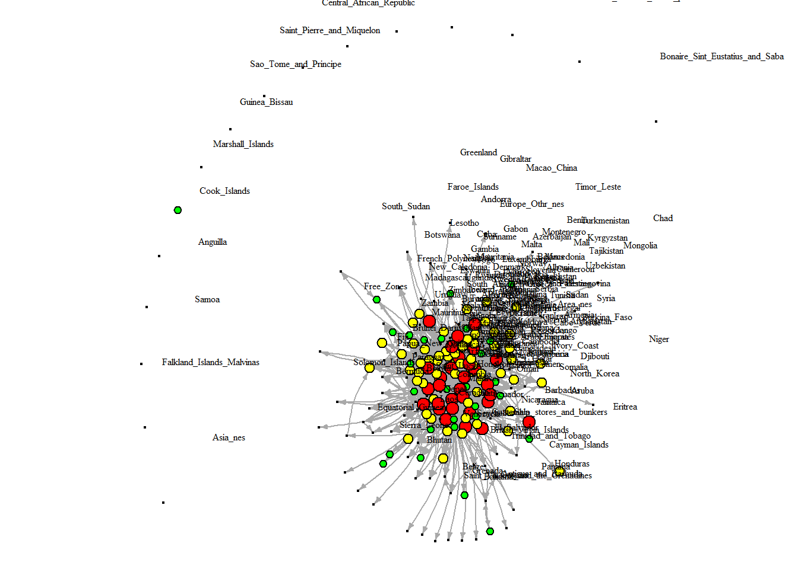
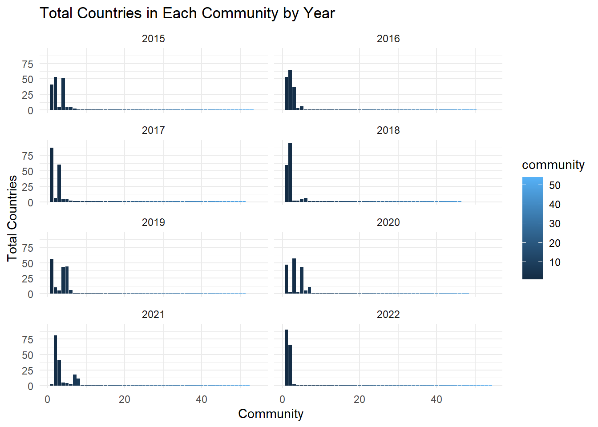

Network Analysis: Ukraine Russia War Wheat Supply Chain Disruption
Author
Akhilesh Kumar Meghwal
Published
May 22, 2023
Code
library(scales)library(igraph)
Attaching package: 'igraph'
The following objects are masked from 'package:stats':
decompose, spectrum
The following object is masked from 'package:base':
union
Code
library(tidyr)
Attaching package: 'tidyr'
The following object is masked from 'package:igraph':
crossing
Code
library(network)
Warning: package 'network' was built under R version 4.2.3
'network' 1.18.1 (2023-01-24), part of the Statnet Project
* 'news(package="network")' for changes since last version
* 'citation("network")' for citation information
* 'https://statnet.org' for help, support, and other information
Attaching package: 'network'
The following objects are masked from 'package:igraph':
%c%, %s%, add.edges, add.vertices, delete.edges, delete.vertices,
get.edge.attribute, get.edges, get.vertex.attribute, is.bipartite,
is.directed, list.edge.attributes, list.vertex.attributes,
set.edge.attribute, set.vertex.attribute
Code
library(tibble)
Attaching package: 'tibble'
The following object is masked from 'package:igraph':
as_data_frame
Code
library(ggplot2)library(ergm)
Warning: package 'ergm' was built under R version 4.2.3
'ergm' 4.4.0 (2023-01-26), part of the Statnet Project
* 'news(package="ergm")' for changes since last version
* 'citation("ergm")' for citation information
* 'https://statnet.org' for help, support, and other information
'ergm' 4 is a major update that introduces some backwards-incompatible
changes. Please type 'news(package="ergm")' for a list of major
changes.
Code
library(ergm.count)
Warning: package 'ergm.count' was built under R version 4.2.3
'ergm.count' 4.1.1 (2022-05-24), part of the Statnet Project
* 'news(package="ergm.count")' for changes since last version
* 'citation("ergm.count")' for citation information
* 'https://statnet.org' for help, support, and other information
Code
library(statnet)
Warning: package 'statnet' was built under R version 4.2.3
Loading required package: tergm
Warning: package 'tergm' was built under R version 4.2.3
Loading required package: networkDynamic
Warning: package 'networkDynamic' was built under R version 4.2.3
'networkDynamic' 0.11.3 (2023-02-15), part of the Statnet Project
* 'news(package="networkDynamic")' for changes since last version
* 'citation("networkDynamic")' for citation information
* 'https://statnet.org' for help, support, and other information
Registered S3 method overwritten by 'tergm':
method from
simulate_formula.network ergm
'tergm' 4.1.1 (2022-11-07), part of the Statnet Project
* 'news(package="tergm")' for changes since last version
* 'citation("tergm")' for citation information
* 'https://statnet.org' for help, support, and other information
Attaching package: 'tergm'
The following object is masked from 'package:ergm':
snctrl
Loading required package: sna
Loading required package: statnet.common
Attaching package: 'statnet.common'
The following object is masked from 'package:ergm':
snctrl
The following objects are masked from 'package:base':
attr, order
sna: Tools for Social Network Analysis
Version 2.7-1 created on 2023-01-24.
copyright (c) 2005, Carter T. Butts, University of California-Irvine
For citation information, type citation("sna").
Type help(package="sna") to get started.
Attaching package: 'sna'
The following objects are masked from 'package:igraph':
betweenness, bonpow, closeness, components, degree, dyad.census,
evcent, hierarchy, is.connected, neighborhood, triad.census
Loading required package: tsna
Warning: package 'tsna' was built under R version 4.2.3
'statnet' 2019.6 (2019-06-13), part of the Statnet Project
* 'news(package="statnet")' for changes since last version
* 'citation("statnet")' for citation information
* 'https://statnet.org' for help, support, and other information
unable to reach CRAN
Code
library(dplyr)
Attaching package: 'dplyr'
The following objects are masked from 'package:igraph':
as_data_frame, groups, union
The following objects are masked from 'package:stats':
filter, lag
The following objects are masked from 'package:base':
intersect, setdiff, setequal, union
Introduction
I have conducted an extensive analysis of wheat trade data from 2015 to 2022, focusing on countries involved in wheat trade with Ukraine. The main objective was to examine the trade relationships and dynamics between Ukraine and its trading partners during this specific time period. To achieve this, I created a trade network matrix consisting of 209 countries that have trade relations with countries trading with Ukraine, allowing us to observe changes in international trade.
The International Trade Data I acquired, specifically focusing on the trade of Wheat under the Harmonized System Code (HSCode) 1001, required a laborious and time-consuming data extraction process from a designated website. To ensure a comprehensive analysis, I performed numerous iterations and queries to gather country-specific import and export data for the selected HS Code. With over 250 countries in the dataset, extracting data separately for imports and exports necessitated running the download process over 500 times.
While I also collected trade data for Natural Gas (HS-Code: 2709) and Crude Oil (HS-Code: 2711), due to time constraints, my current analysis is solely dedicated to the trade of Wheat.
The trade data includes all the countries that engaged in wheat import and export activities with the countries trading with Ukraine between 2015 and 2022. This comprehensive dataset enables an in-depth analysis of the trade changes resulting from the ongoing conflict. By examining the trade relationships within this context, we can gain valuable insights into the impact of the war on international trade dynamics.
The analysis focuses on assessing the repercussions of the conflict on the Wheat supply chain, including fluctuations in export volumes, changes in trade patterns, and the potential influence on global wheat prices. By shedding light on these dynamics, the aim is to achieve a comprehensive understanding of the broader implications of the Ukraine and Russia war on the global Wheat market. Additionally, the analysis will identify potential challenges and opportunities that may arise as a result of the conflict.
Through meticulous examination of the data, the objective is to extract valuable insights and conduct a comprehensive analysis of various aspects related to the trade of Wheat. This includes exploring patterns, identifying trends, and investigating country-specific information pertaining to Wheat imports and exports. The aim is to uncover significant findings that will allow for meaningful conclusions and contribute to our understanding of the global Wheat market and its dynamic nature.
The findings contribute to a deeper understanding of Ukraine’s international trade and provide valuable information for policymakers, economists, and businesses interested in the country’s trade dynamics. The analysis emphasizes the importance of considering specific country relationships and time periods when studying trade flows, as it allows for a more targeted and insightful analysis.
Furthermore, there is a particular interest in assessing the impact of the supply chain disruption caused by the ongoing conflict between Ukraine and Russia. Notably, as of the 2022/2023 marketing year, Ukraine ranked as the fifth-largest exporter of wheat worldwide, with total exports surpassing 13.5 million metric tons, accounting for approximately nine percent of the global wheat trade share. Delving deeper into the trade data will evaluate the repercussions of the conflict on the Wheat supply chain, examining fluctuations in export volumes, changes in trade patterns, and the potential influence on global wheat prices. The objective is to gain a comprehensive understanding of the broader implications of the Ukraine and Russia war on the global Wheat market while identifying potential challenges and opportunities that may arise as a result.
The objective is to conduct an in-depth analysis of the trade data to evaluate the specific changes and impacts on trade patterns and volumes resulting from the ongoing conflict between Ukraine and Russia. This analysis will contribute to a comprehensive understanding of the trade dynamics within the global Wheat market during this turbulent period.
Hypothesis
The ongoing Ukraine and Russia conflict has likely disrupted the global wheat supply chain, leading to changes in trade patterns, fluctuations in export volumes, and potential influences on wheat prices.
Load Data, and Identify Trading Countries
Determine the countries that are directly involved in wheat trade with Ukraine (importing from Ukraine). These countries are likely to have been most affected by the conflict.
Identify high, normal, low trade countries primarily based on quantile distribution of consolidated and yearly trade volume
Code
library(tidyr)# List of yearsyears <-2015:2022# Empty list to store countries where Ukraine exported goodsexport_countries <-list()# Empty data frame to store consolidated export dataconsolidated_export <-data.frame(country =character(), export =numeric(), year =integer(), stringsAsFactors =FALSE)# Loop through each yearfor (year in years) {# Read the CSV file for the current year file_path <-paste0("C:/social network project/project data/1001/Unform Data/Merged/", year, ".csv") data <-read.csv(file_path, header =TRUE, row.names =1)# Extract the row corresponding to Ukraine's exports ukraine_exports <- data["Ukraine", ] current_export <- ukraine_exports %>%pivot_longer(cols =everything(), names_to ="country", values_to ="export") current_export <- current_export[current_export$export >0, ]# Add year current_export$year <- year# Append the export data to the consolidated export data frame consolidated_export <-rbind(consolidated_export, current_export)# Add the export countries for the current year to the list export_countries[[as.character(year)]] <- current_export$country}# Combine the export countries from all years into a single listall_export_countries <-unique(unlist(export_countries))# Print the list of countries where Ukraine exported goods starting from 2015cat("List of countries where Ukraine exported goods from 2015 to 2022:\n")
List of countries where Ukraine exported goods from 2015 to 2022:
# Aggregate the export volumes by countrycountry_trade <-aggregate(export ~ country, data = consolidated_export, FUN = sum)# Sort the trade data in descending ordersorted_trade <- country_trade[order(country_trade$export, decreasing =TRUE), ]# Calculate quartiles for trade intensityquartiles <-quantile(sorted_trade$export, probs =c(0, 0.25, 0.75, 1))# Create a new column for trade intensity categorysorted_trade$trade_intensity <-cut(sorted_trade$export, breaks = quartiles, labels =c("Low Intensity Trade", "Normal Intensity Trade", "High Intensity Trade"), include.lowest =TRUE)# Create an empty list to store the sorted trade data frames for each yearsorted_trade_list <-list()# Iterate over each yearfor (year in years) {# Subset the data for the current year trade_data <- consolidated_export[consolidated_export$year == year, ] trade_data <- trade_data[c("country", "export")]# Sort the trade data in descending order sorted_trade_year <- trade_data[order(trade_data$export, decreasing =TRUE), ]# Calculate quartiles for trade intensity quartiles <-quantile(sorted_trade_year$export, probs =c(0, 0.25, 0.75, 1))# Create a new column for trade intensity category sorted_trade_year$trade_intensity <-cut(sorted_trade_year$export, breaks = quartiles, labels =c("Low Intensity Trade", "Normal Intensity Trade", "High Intensity Trade"), include.lowest =TRUE)# Store the sorted trade data frame in the list sorted_trade_list[[as.character(year)]] <- sorted_trade_year}# Count the number of countries in each clustercluster_counts <-table(sorted_trade$trade_intensity)# Create a data frame from the cluster countscluster_counts_df <-data.frame(cluster =names(cluster_counts),count =as.integer(cluster_counts),stringsAsFactors =FALSE)# Print the sorted and clustered trade data with boundariescat("List of Countries (2015-2022) with Consolidated Trade and Trade Intensity\n")
List of Countries (2015-2022) with Consolidated Trade and Trade Intensity
Code
# Iterate over the rows in the sorted_trade data framefor (i in1:nrow(sorted_trade)) {# Format the country, export, and trade_intensity values country <-sprintf("%-20s", sorted_trade$country[i]) export <-sprintf("%-10s", sorted_trade$export[i]) intensity <-sprintf("%-15s", sorted_trade$trade_intensity[i])# Print the formatted valuescat(country, export, intensity, "\n")}
Egypt 4114034 High Intensity Trade
Indonesia 4026037 High Intensity Trade
Turkey 1882295 High Intensity Trade
Bangladesh 1816767 High Intensity Trade
Thailand 1546864 High Intensity Trade
Morocco 1428930 High Intensity Trade
Philippines 1372188 High Intensity Trade
Tunisia 1234391 High Intensity Trade
Ethiopia 1130371 High Intensity Trade
South_Korea 1123809 High Intensity Trade
Spain 1103511 High Intensity Trade
India 827355 High Intensity Trade
Pakistan 783178 High Intensity Trade
Israel 679710 High Intensity Trade
Lebanon 623856 High Intensity Trade
Nigeria 617102 High Intensity Trade
Italy 599523 High Intensity Trade
Yemen 596393 High Intensity Trade
Libya 593330 High Intensity Trade
Kenya 296634 High Intensity Trade
Mexico 283594 High Intensity Trade
Malaysia 271527 High Intensity Trade
Mauritania 255010 High Intensity Trade
Saudi_Arabia 192361 High Intensity Trade
Djibouti 189422 High Intensity Trade
Jordan 168341 High Intensity Trade
Greece 157630 High Intensity Trade
Netherlands 152805 High Intensity Trade
Romania 150400 High Intensity Trade
Viet_Nam 148458 High Intensity Trade
Poland 138274 Normal Intensity Trade
Uganda 137756 Normal Intensity Trade
South_Africa 130162 Normal Intensity Trade
Sudan 115005 Normal Intensity Trade
Algeria 105366 Normal Intensity Trade
Tanzania 86885 Normal Intensity Trade
Oman 82838 Normal Intensity Trade
Senegal 80349 Normal Intensity Trade
United_Arab_Emirates 78838 Normal Intensity Trade
United_Kingdom 72349 Normal Intensity Trade
Japan 68486 Normal Intensity Trade
Sri_Lanka 67948 Normal Intensity Trade
Syria 65381 Normal Intensity Trade
Mozambique 62892 Normal Intensity Trade
Hungary 52876 Normal Intensity Trade
Germany 51071 Normal Intensity Trade
Iran 48893 Normal Intensity Trade
Myanmar 48210 Normal Intensity Trade
Zimbabwe 39223 Normal Intensity Trade
Ivory_Coast 34341 Normal Intensity Trade
Russia 33684 Normal Intensity Trade
Switzerland 30355 Normal Intensity Trade
Mali 26519 Normal Intensity Trade
Somalia 23251 Normal Intensity Trade
Congo_DR 21977 Normal Intensity Trade
Qatar 21783 Normal Intensity Trade
Ecuador 21760 Normal Intensity Trade
Slovakia 20340 Normal Intensity Trade
Azerbaijan 17972 Normal Intensity Trade
Portugal 16694 Normal Intensity Trade
Albania 14213 Normal Intensity Trade
Cyprus 13643 Normal Intensity Trade
Ghana 13388 Normal Intensity Trade
Madagascar 13143 Normal Intensity Trade
Lithuania 12420 Normal Intensity Trade
Angola 11845 Normal Intensity Trade
Singapore 11621 Normal Intensity Trade
Austria 10684 Normal Intensity Trade
Cameroon 10469 Normal Intensity Trade
Belarus 10403 Normal Intensity Trade
Malawi 10021 Normal Intensity Trade
Malta 9735 Normal Intensity Trade
Taipei_Chinese 9521 Normal Intensity Trade
Slovenia 8951 Normal Intensity Trade
Eritrea 7509 Normal Intensity Trade
Bulgaria 7443 Normal Intensity Trade
Zambia 6892 Normal Intensity Trade
Palestine 6819 Normal Intensity Trade
Ireland 6762 Normal Intensity Trade
Denmark 6526 Normal Intensity Trade
Guinea 6485 Normal Intensity Trade
Namibia 6286 Normal Intensity Trade
France 6168 Normal Intensity Trade
Georgia 5825 Normal Intensity Trade
Colombia 5688 Normal Intensity Trade
Gambia 4746 Normal Intensity Trade
Burkina_Faso 4409 Normal Intensity Trade
Armenia 4155 Normal Intensity Trade
China 4118 Normal Intensity Trade
Latvia 3043 Normal Intensity Trade
Moldova 2782 Low Intensity Trade
Nepal 2692 Low Intensity Trade
Burundi 1814 Low Intensity Trade
Norway 1774 Low Intensity Trade
New_Caledonia 1732 Low Intensity Trade
Botswana 1495 Low Intensity Trade
Cambodia 1404 Low Intensity Trade
Czech_Republic 1276 Low Intensity Trade
Gabon 1059 Low Intensity Trade
Laos 996 Low Intensity Trade
British_Virgin_Islands 581 Low Intensity Trade
Estonia 577 Low Intensity Trade
Eswatini 572 Low Intensity Trade
North_Korea 365 Low Intensity Trade
Kuwait 364 Low Intensity Trade
Panama 349 Low Intensity Trade
Kazakhstan 317 Low Intensity Trade
Canada 315 Low Intensity Trade
Hongkong 312 Low Intensity Trade
New_Zealand 252 Low Intensity Trade
Congo 233 Low Intensity Trade
Rwanda 212 Low Intensity Trade
United_States_of_America 66 Low Intensity Trade
Bahrain 45 Low Intensity Trade
Belgium 21 Low Intensity Trade
Serbia 16 Low Intensity Trade
Haiti 13 Low Intensity Trade
Marshall_Islands 10 Low Intensity Trade
Iraq 3 Low Intensity Trade
Benin 1 Low Intensity Trade
Code
# Print the table of cluster countscat(" Consolidated Trade Data Analysis (2015-22) \n")
Consolidated Trade Data Analysis (2015-22)
Code
for (i in1:nrow(cluster_counts_df)) {# Format the cluster and count values cluster <-sprintf("%-20s", cluster_counts_df$cluster[i]) count <-sprintf("%-10s", cluster_counts_df$count[i])# Print the formatted valuescat(cluster, count, "\n")}
Low Intensity Trade 30
Normal Intensity Trade 60
High Intensity Trade 30
Code
# Count the number of countries in each cluster for each yearcluster_counts <-lapply(sorted_trade_list, function(sorted_trade) table(sorted_trade$trade_intensity))# Print the counts for each yearfor (i in1:length(years)) { year <- years[i] cluster_counts_year <- cluster_counts[[as.character(year)]]cat(" Trade Data Analysis - Year", year, " \n")for (j in1:length(cluster_counts_year)) {# Format the cluster and count values cluster <-sprintf("%-20s", names(cluster_counts_year)[j]) count <-sprintf("%-10s", cluster_counts_year[j])# Print the formatted valuescat(cluster, count, "\n") }}
Trade Data Analysis - Year 2015
Low Intensity Trade 20
Normal Intensity Trade 38
High Intensity Trade 20
Trade Data Analysis - Year 2016
Low Intensity Trade 19
Normal Intensity Trade 36
High Intensity Trade 18
Trade Data Analysis - Year 2017
Low Intensity Trade 19
Normal Intensity Trade 38
High Intensity Trade 19
Trade Data Analysis - Year 2018
Low Intensity Trade 19
Normal Intensity Trade 38
High Intensity Trade 19
Trade Data Analysis - Year 2019
Low Intensity Trade 19
Normal Intensity Trade 37
High Intensity Trade 19
Trade Data Analysis - Year 2020
Low Intensity Trade 17
Normal Intensity Trade 34
High Intensity Trade 17
Trade Data Analysis - Year 2021
Low Intensity Trade 19
Normal Intensity Trade 38
High Intensity Trade 19
Trade Data Analysis - Year 2022
Low Intensity Trade 9
Normal Intensity Trade 16
High Intensity Trade 9
Identify Countries for Wheat Trade Analysis, based on the trade network of countries, as identified in previous step
In the wheat trade analysis, all 209 countries participating in the wheat international trade network will be considered. To analyze the potential supply chain disruption caused by the Ukraine and Russia war, a 209 country network is being analyzed. This analysis will take into account trade relationships among these countries, focusing on the impact on the wheat supply chain. The objective is to provide insights into the potential consequences and risks associated with the ongoing conflict and its effect on global wheat trade.
Code
all_export_countries <-unique(country_trade$country)countries_alys <-list()# Loop through each yearfor (year in years) {# Read the CSV file for the current year file_path <-paste0("C:/social network project/project data/1001/Unform Data/Merged/", year, ".csv") data <-read.csv(file_path, header =TRUE, row.names =1)for (country in all_export_countries){ alys_export <-data[country, ] alys_import <-data[ ,country] current_export_countries_alys <- alys_export %>%pivot_longer(cols =everything(), names_to ="country", values_to ="export") current_export_countries_alys <- current_export_countries_alys[current_export_countries_alys$export!=0,] current_import_countries_alys <- alys_export %>%pivot_longer(cols =everything(), names_to ="country", values_to ="import") current_import_countries_alys <- current_import_countries_alys[current_import_countries_alys$import!=0,]# Add the export & countries for the current year to the list countries_alys <-unique(c(countries_alys, current_export_countries_alys$country, current_import_countries_alys$country)) }}all_countries_alys <-unlist(countries_alys)print(all_countries_alys)
In this network analysis, we explore the Wheat International Trade Network spanning from 2015 to 2022, encompassing 209 countries. Our analysis focuses on countries directly importing from Ukraine and those engaged in trade with Ukraine’s partners within the wheat international trade. By examining the trade relationships and dynamics within this subset, we aim to gain insights into the patterns and interactions shaping Ukraine’s role in the global wheat trade.
Code
# Create an empty list to store trade data frames for each yeartrade_data_frames <-list()# Loop through each yearfor (year in years) {# Read the CSV file for the current year file_path <-paste0("C:/social network project/project data/1001/Unform Data/Merged/", year, ".csv") data <-read.csv(file_path, header =TRUE, row.names =1)# Subset the data to include only the required countries trade_data <- data[all_countries_alys, all_countries_alys]# Add the trade data frame for the current year to the list trade_data_frames[[as.character(year)]] <- trade_data}
Year wise Classification
Year wise Grouping of countries, who are trading with Ukriane,into following groups:
Classify countries based on wheat import volume:
High trade intensity: The high trade intensity group comprises countries with wheat import volumes from Ukraine falling within the top 25th percentile. These countries demonstrate a strong trade relationship and high dependence on Ukraine as a wheat supplier.
Normal Intensity Countries: The high trade intensity group comprises countries with wheat import volumes from Ukraine falling between the 25th and 75th percentiles. They exhibit moderate levels of trade intensity with Ukraine for wheat imports.
Low Intensity Countries: This group includes countries with wheat import volumes from Ukraine falling within the bottom 25th percentile. These countries have relatively lower levels of trade intensity with Ukraine in terms of wheat imports.
Code
# High Intensity, Normal Intensity, Low Intensity Trade Countries consolidated from 2015 to 2022 high_intensity_countries <- sorted_trade$country[sorted_trade$trade_intensity =="High Intensity Trade"]normal_intensity_countries <- sorted_trade$country[sorted_trade$trade_intensity =="Normal Intensity Trade"]low_intensity_countries <- sorted_trade$country[sorted_trade$trade_intensity =="Low Intensity Trade"]# High Intensity, Normal Intensity, Low Intensity Trade Countries year wise from 2015 to 2022 # Initialize lists to store the resultshigh_intensity_countries_year <-list()normal_intensity_countries_year <-list()low_intensity_countries_year <-list()# Loop over the yearsfor (year in2015:2022) {# Get the sorted_trade_list for this year sorted_trade_list_year <-get(paste0("sorted_trade_list_", year))# Add countries to respective lists high_intensity_countries_year[[paste0(year)]] <- sorted_trade_list_year$country[sorted_trade_list_year$trade_intensity =="High Intensity Trade"] normal_intensity_countries_year[[paste0(year)]] <- sorted_trade_list_year$country[sorted_trade_list_year$trade_intensity =="Normal Intensity Trade"] low_intensity_countries_year[[paste0(year)]] <- sorted_trade_list_year$country[sorted_trade_list_year$trade_intensity =="Low Intensity Trade"]}cat(" Year wise HIgh Intensity Trade Countries with Ukraine \n")
Year wise HIgh Intensity Trade Countries with Ukraine
Code
# Loop over the yearsfor (year in2015:2022) {# Print high intensity trade countries for this yearprint(paste("Year: ", year))print(high_intensity_countries_year[[as.character(year)]])}
# print(paste("Consolidated from Year 2015-2022"))# print(high_intensity_countries)
Network Objects
Preparing Network Objects for the Wheat trade network of 209 countries from year 2015 to 2022, using Igraph and Network library.
The Wheat International Trade Network captures trade relationships and volumes of wheat exchanged between 209 countries. It utilizes a directed weighted graph representation, allowing for insights into network density, centrality measures, and community structure.
Network Graph on consolidated trade from year 2015 to 2022, for the Wheat trade network created for 209 countries , also plotting High Intensity Trade, Normal Intensity Trade and Low Intensity Trade
High Trade (Red Color, Large) (0.75-1 quantile)
Normal Trade (Yellow Color, Medium) (0.25-0.75 qunatile)
Low Trade (Green Color, Small)(0-0.25 quantile)
No Trade (Blue, Smallest)
Code
high_intensity_countries <- sorted_trade$country[sorted_trade$trade_intensity =="High Intensity Trade"]normal_intensity_countries <- sorted_trade$country[sorted_trade$trade_intensity =="Normal Intensity Trade"]low_intensity_countries <- sorted_trade$country[sorted_trade$trade_intensity =="Low Intensity Trade"]# Assign vertex labelsvertex_labels <-V(consolidated_network)$nameV(consolidated_network)$label <- vertex_labels# Set visual attributes for high, normal, and low intensity countriesvertex_color <-ifelse(V(consolidated_network)$name %in% high_intensity_countries, "red",ifelse(V(consolidated_network)$name %in% normal_intensity_countries, "yellow",ifelse(V(consolidated_network)$name %in% low_intensity_countries, "green", "blue")))vertex_size <-ifelse(V(consolidated_network)$name %in% high_intensity_countries, 5,ifelse(V(consolidated_network)$name %in% normal_intensity_countries, 4,ifelse(V(consolidated_network)$name %in% low_intensity_countries, 3, 1)))# Set plotting parameters for the subgraphvertex.label.cex <-0.5vertex.label.dist <-5vertex.label.color <-"black"edge.arrow.size <-0.3edge.curved <-0.2edge_width <-E(consolidated_network)$weight# Apply a layout algorithm to improve graph visualizationlayout <-layout_with_fr(consolidated_network)# Rescale the layout coordinatesrescaled_layout <-rescale(layout)# Set plot limitsxlim <-range(rescaled_layout[, 1])ylim <-range(rescaled_layout[, 2])par(mar =rep(0, 4)) # Set margin to remove excess white space# Plot the consolidated graph with modified parametersplot(consolidated_network, layout = rescaled_layout, vertex.size = vertex_size, vertex.label.cex = vertex.label.cex,vertex.label.dist = vertex.label.dist, vertex.label.color = vertex.label.color,vertex.color=vertex_color, edge.arrow.size = edge.arrow.size, edge.curved = edge.curved, edge.width = edge_width)
Consolidated Network Graph (Top 100 countries)
Network Graph for top 100 countries by consolidated Wheat trade from year 2015 to 2022, for the trade network created for the countries importing wheat from ukraine, also plotting High Intensity Trade, Normal Intensity Trade and Low Intensity Trade
High Trade (Red Color, Large) (0.75-1 quantile)
Normal Trade (Yellow Color, Medium) (0.25-0.75 qunatile)
Low Trade (Green Color, Small)(0-0.25 quantile)
No Trade (Blue, Smallest)
Code
# Get the adjacency matrix of the consolidated networkadjacency_matrix <-get.adjacency(consolidated_network, sparse =FALSE)# Calculate the total trade (sum of export and import) for each countrytrade <-rowSums(adjacency_matrix)# Sort the countries based on total tradesorted_countries <-names(trade)[order(trade, decreasing =TRUE)]# Select the top 100 countriestop_100_countries <- sorted_countries[1:100]subgraph <-induced_subgraph(consolidated_network, top_100_countries)# Assign vertex labels attributes to the subgraphV(subgraph)$label <- vertex_labels[V(subgraph)]# Set visual attributes for high, normal, and low intensity countriesvertex_color <-ifelse(V(subgraph)$name %in% high_intensity_countries, "red",ifelse(V(subgraph)$name %in% normal_intensity_countries, "yellow",ifelse(V(subgraph)$name %in% low_intensity_countries, "green", "blue")))vertex_size <-ifelse(V(subgraph)$name %in% high_intensity_countries, 5,ifelse(V(subgraph)$name %in% normal_intensity_countries, 4,ifelse(V(subgraph)$name %in% low_intensity_countries, 3, 1)))# Set plotting parameters for the subgraphvertex.label.cex <-0.5vertex.label.dist <-5vertex.label.color <-"black"edge.arrow.size <-0.1edge.curved <-0.2edge.width <-1# Apply a layout algorithm to improve graph visualizationlayout <-layout_with_fr(subgraph)# Rescale the layout coordinatesrescaled_layout <-rescale(layout)# Set plot limitsxlim <-range(rescaled_layout[, 1])ylim <-range(rescaled_layout[, 2])par(mar =rep(0, 4)) # Set margin to remove excess white space# Plot the consolidated graph with modified parametersplot(subgraph, layout = rescaled_layout, vertex.size = vertex_size, vertex.label.cex = vertex.label.cex,vertex.label.dist = vertex.label.dist, vertex.label.color = vertex.label.color, vertex.color=vertex_color,edge.arrow.size = edge.arrow.size, edge.curved = edge.curved, edge.width = edge.width)
Year 2015 Network Graph
Network Graph for Year 2015 for the trade network created for the countries importing wheat from ukraine, also plotting High Intensity Trade, Normal Intensity Trade and Low Intensity Trade
High Trade (Red Color, Large) (0.75-1 quantile)
Normal Trade (Yellow Color, Medium) (0.25-0.75 qunatile)
Low Trade (Green Color, Small)(0-0.25 quantile)
No Trade (Blue, Smallest)
Code
# Assign vertex labelsvertex_labels <-V(net_2015)$nameV(net_2015)$label <- vertex_labels# Set visual attributes for high, normal, and low intensity countriesvertex_color <-ifelse(V(net_2015)$name %in% high_intensity_countries, "red",ifelse(V(net_2015)$name %in% normal_intensity_countries, "yellow",ifelse(V(net_2015)$name %in% low_intensity_countries, "green", "blue")))vertex_size <-ifelse(V(net_2015)$name %in% high_intensity_countries, 5,ifelse(V(net_2015)$name %in% normal_intensity_countries, 4,ifelse(V(net_2015)$name %in% low_intensity_countries, 3, 1)))# Set plotting parameters for the subgraphvertex.label.cex <-0.5vertex.label.dist <-5vertex.label.color <-"black"edge.arrow.size <-0.3edge.curved <-0.2edge_width <-E(net_2015)$weight# Apply a layout algorithm to improve graph visualizationlayout <-layout_with_fr(net_2015)# Rescale the layout coordinatesrescaled_layout <-rescale(layout)# Set plot limitsxlim <-range(rescaled_layout[, 1])ylim <-range(rescaled_layout[, 2])par(mar =rep(0, 4)) # Set margin to remove excess white space# Plot the consolidated graph with modified parametersplot(net_2015, layout = rescaled_layout, vertex.size = vertex_size, vertex.label.cex = vertex.label.cex,vertex.label.dist = vertex.label.dist, vertex.label.color = vertex.label.color,vertex.color=vertex_color, edge.arrow.size = edge.arrow.size, edge.curved = edge.curved, edge.width=edge_width)
Year 2016 Network Graph
Network Graph for Year 2016 for the trade network created for the countries importing wheat from ukraine, also plotting High Intensity Trade, Normal Intensity Trade and Low Intensity Trade
High Trade (Red Color, Large) (0.75-1 quantile)
Normal Trade (Yellow Color, Medium) (0.25-0.75 qunatile)
Low Trade (Green Color, Small)(0-0.25 quantile)
No Trade (Blue, Smallest)
Code
# Assign vertex labelsvertex_labels <-V(net_2016)$nameV(net_2016)$label <- vertex_labels# Set visual attributes for high, normal, and low intensity countriesvertex_color <-ifelse(V(net_2016)$name %in% high_intensity_countries, "red",ifelse(V(net_2016)$name %in% normal_intensity_countries, "yellow",ifelse(V(net_2016)$name %in% low_intensity_countries, "green", "blue")))vertex_size <-ifelse(V(net_2016)$name %in% high_intensity_countries, 5,ifelse(V(net_2016)$name %in% normal_intensity_countries, 4,ifelse(V(net_2016)$name %in% low_intensity_countries, 3, 1)))# Set plotting parameters for the subgraphvertex.label.cex <-0.5vertex.label.dist <-5vertex.label.color <-"black"edge.arrow.size <-0.3edge.curved <-0.2edge_width <-E(subgraph)$weight# Apply a layout algorithm to improve graph visualizationlayout <-layout_with_fr(net_2016)# Rescale the layout coordinatesrescaled_layout <-rescale(layout)# Set plot limitsxlim <-range(rescaled_layout[, 1])ylim <-range(rescaled_layout[, 2])par(mar =rep(0, 4)) # Set margin to remove excess white space# Plot the consolidated graph with modified parametersplot(net_2016, layout = rescaled_layout, vertex.size = vertex_size, vertex.label.cex = vertex.label.cex,vertex.label.dist = vertex.label.dist, vertex.label.color = vertex.label.color,vertex.color=vertex_color,edge.arrow.size = edge.arrow.size, edge.curved = edge.curved, edge.width = edge.width)
Year 2017 Network Graph
Network Graph for Year 2017 for the trade network created for the countries importing wheat from ukraine, also plotting High Intensity Trade, Normal Intensity Trade and Low Intensity Trade
High Trade (Red Color, Large) (0.75-1 quantile)
Normal Trade (Yellow Color, Medium) (0.25-0.75 qunatile)
Low Trade (Green Color, Small)(0-0.25 quantile)
No Trade (Blue, Smallest)
Code
# Assign vertex labelsvertex_labels <-V(net_2017)$nameV(net_2017)$label <- vertex_labels# Set visual attributes for high, normal, and low intensity countriesvertex_color <-ifelse(V(net_2017)$name %in% high_intensity_countries, "red",ifelse(V(net_2017)$name %in% normal_intensity_countries, "yellow",ifelse(V(net_2017)$name %in% low_intensity_countries, "green", "blue")))vertex_size <-ifelse(V(net_2017)$name %in% high_intensity_countries, 5,ifelse(V(net_2017)$name %in% normal_intensity_countries, 4,ifelse(V(net_2017)$name %in% low_intensity_countries, 3, 1)))# Set plotting parameters for the subgraphvertex.label.cex <-0.5vertex.label.dist <-5vertex.label.color <-"black"edge.arrow.size <-0.3edge.curved <-0.2edge_width <-E(subgraph)$weight# Apply a layout algorithm to improve graph visualizationlayout <-layout_with_fr(net_2017)# Rescale the layout coordinatesrescaled_layout <-rescale(layout)# Set plot limitsxlim <-range(rescaled_layout[, 1])ylim <-range(rescaled_layout[, 2])par(mar =rep(0, 4)) # Set margin to remove excess white space# Plot the consolidated graph with modified parametersplot(net_2017, layout = rescaled_layout, vertex.size = vertex_size, vertex.label.cex = vertex.label.cex,vertex.label.dist = vertex.label.dist, vertex.label.color = vertex.label.color,vertex.color=vertex_color,edge.arrow.size = edge.arrow.size, edge.curved = edge.curved, edge.width = edge.width)
Year 2018 Network Graph
Network Graph for Year 2018 for the trade net created for the countries importing wheat from ukraine, also plotting High Intensity Trade, Normal Intensity Trade and Low Intensity Trade
High Trade (Red Color, Large) (0.75-1 quantile)
Normal Trade (Yellow Color, Medium) (0.25-0.75 qunatile)
Low Trade (Green Color, Small)(0-0.25 quantile)
No Trade (Blue, Smallest)
Code
# Assign vertex labelsvertex_labels <-V(net_2018)$nameV(net_2018)$label <- vertex_labels# Set visual attributes for high, normal, and low intensity countriesvertex_color <-ifelse(V(net_2018)$name %in% high_intensity_countries, "red",ifelse(V(net_2018)$name %in% normal_intensity_countries, "yellow",ifelse(V(net_2018)$name %in% low_intensity_countries, "green", "blue")))vertex_size <-ifelse(V(net_2018)$name %in% high_intensity_countries, 5,ifelse(V(net_2018)$name %in% normal_intensity_countries, 4,ifelse(V(net_2018)$name %in% low_intensity_countries, 3, 1)))# Set plotting parameters for the subgraphvertex.label.cex <-0.5vertex.label.dist <-5vertex.label.color <-"black"edge.arrow.size <-0.3edge.curved <-0.2edge_width <-E(subgraph)$weight# Apply a layout algorithm to improve graph visualizationlayout <-layout_with_fr(net_2018)# Rescale the layout coordinatesrescaled_layout <-rescale(layout)# Set plot limitsxlim <-range(rescaled_layout[, 1])ylim <-range(rescaled_layout[, 2])par(mar =rep(0, 4)) # Set margin to remove excess white space# Plot the consolidated graph with modified parametersplot(net_2018, layout = rescaled_layout, vertex.size = vertex_size, vertex.label.cex = vertex.label.cex,vertex.label.dist = vertex.label.dist, vertex.label.color = vertex.label.color,vertex.color=vertex_color,edge.arrow.size = edge.arrow.size, edge.curved = edge.curved, edge.width = edge.width)
Year 2019 Network Graph
Network Graph for Year 2019 for the trade network created for the countries importing wheat from ukraine, also plotting High Intensity Trade, Normal Intensity Trade and Low Intensity Trade
High Trade (Red Color, Large) (0.75-1 quantile)
Normal Trade (Yellow Color, Medium) (0.25-0.75 qunatile)
Low Trade (Green Color, Small)(0-0.25 quantile)
No Trade (Blue, Smallest)
Code
# Assign vertex labelsvertex_labels <-V(net_2019)$nameV(net_2019)$label <- vertex_labels# Set visual attributes for high, normal, and low intensity countriesvertex_color <-ifelse(V(net_2019)$name %in% high_intensity_countries, "red",ifelse(V(net_2019)$name %in% normal_intensity_countries, "yellow",ifelse(V(net_2019)$name %in% low_intensity_countries, "green", "blue")))vertex_size <-ifelse(V(net_2019)$name %in% high_intensity_countries, 5,ifelse(V(net_2019)$name %in% normal_intensity_countries, 4,ifelse(V(net_2019)$name %in% low_intensity_countries, 3, 1)))# Set plotting parameters for the subgraphvertex.label.cex <-0.5vertex.label.dist <-5vertex.label.color <-"black"edge.arrow.size <-0.3edge.curved <-0.2edge_width <-E(subgraph)$weight# Apply a layout algorithm to improve graph visualizationlayout <-layout_with_fr(net_2019)# Rescale the layout coordinatesrescaled_layout <-rescale(layout)# Set plot limitsxlim <-range(rescaled_layout[, 1])ylim <-range(rescaled_layout[, 2])par(mar =rep(0, 4)) # Set margin to remove excess white space# Plot the consolidated graph with modified parametersplot(net_2019, layout = rescaled_layout, vertex.size = vertex_size, vertex.label.cex = vertex.label.cex,vertex.label.dist = vertex.label.dist, vertex.label.color = vertex.label.color,vertex.color=vertex_color,edge.arrow.size = edge.arrow.size, edge.curved = edge.curved, edge.width = edge.width)
Year 2020 Network Graph
Network Graph for Year 2020 for the trade network created for the countries importing wheat from ukraine, also plotting High Intensity Trade, Normal Intensity Trade and Low Intensity Trade
High Trade (Red Color, Large) (0.75-1 quantile)
Normal Trade (Yellow Color, Medium) (0.25-0.75 qunatile)
Low Trade (Green Color, Small)(0-0.25 quantile)
No Trade (Blue, Smallest)
Code
# Assign vertex labelsvertex_labels <-V(net_2020)$nameV(net_2020)$label <- vertex_labels# Set visual attributes for high, normal, and low intensity countriesvertex_color <-ifelse(V(net_2020)$name %in% high_intensity_countries, "red",ifelse(V(net_2020)$name %in% normal_intensity_countries, "yellow",ifelse(V(net_2020)$name %in% low_intensity_countries, "green", "blue")))vertex_size <-ifelse(V(net_2020)$name %in% high_intensity_countries, 5,ifelse(V(net_2020)$name %in% normal_intensity_countries, 4,ifelse(V(net_2020)$name %in% low_intensity_countries, 3, 1)))# Set plotting parameters for the subgraphvertex.label.cex <-0.5vertex.label.dist <-5vertex.label.color <-"black"edge.arrow.size <-0.3edge.curved <-0.2edge_width <-E(subgraph)$weight# Apply a layout algorithm to improve graph visualizationlayout <-layout_with_fr(net_2020)# Rescale the layout coordinatesrescaled_layout <-rescale(layout)# Set plot limitsxlim <-range(rescaled_layout[, 1])ylim <-range(rescaled_layout[, 2])par(mar =rep(0, 4)) # Set margin to remove excess white space# Plot the consolidated graph with modified parametersplot(net_2020, layout = rescaled_layout, vertex.size = vertex_size, vertex.label.cex = vertex.label.cex,vertex.label.dist = vertex.label.dist, vertex.label.color = vertex.label.color,vertex.color=vertex_color,edge.arrow.size = edge.arrow.size, edge.curved = edge.curved, edge.width = edge.width)

Year 2021 Network Graph
Network Graph for Year 2021 for the trade network created for the countries importing wheat from ukraine, also plotting High Intensity Trade, Normal Intensity Trade and Low Intensity Trade
High Trade (Red Color, Large) (0.75-1 quantile)
Normal Trade (Yellow Color, Medium) (0.25-0.75 qunatile)
Low Trade (Green Color, Small)(0-0.25 quantile)
No Trade (Blue, Smallest)
Code
# Assign vertex labelsvertex_labels <-V(net_2021)$nameV(net_2021)$label <- vertex_labels# Set visual attributes for high, normal, and low intensity countriesvertex_color <-ifelse(V(net_2021)$name %in% high_intensity_countries, "red",ifelse(V(net_2021)$name %in% normal_intensity_countries, "yellow",ifelse(V(net_2021)$name %in% low_intensity_countries, "green", "blue")))vertex_size <-ifelse(V(net_2021)$name %in% high_intensity_countries, 5,ifelse(V(net_2021)$name %in% normal_intensity_countries, 4,ifelse(V(net_2021)$name %in% low_intensity_countries, 3, 1)))# Set plotting parameters for the subgraphvertex.label.cex <-0.5vertex.label.dist <-5vertex.label.color <-"black"edge.arrow.size <-0.3edge.curved <-0.2edge_width <-E(subgraph)$weight# Apply a layout algorithm to improve graph visualizationlayout <-layout_with_fr(net_2021)# Rescale the layout coordinatesrescaled_layout <-rescale(layout)# Set plot limitsxlim <-range(rescaled_layout[, 1])ylim <-range(rescaled_layout[, 2])par(mar =rep(0, 4)) # Set margin to remove excess white space# Plot the consolidated graph with modified parametersplot(net_2021, layout = rescaled_layout, vertex.size = vertex_size, vertex.label.cex = vertex.label.cex,vertex.label.dist = vertex.label.dist, vertex.label.color = vertex.label.color,vertex.color=vertex_color,edge.arrow.size = edge.arrow.size, edge.curved = edge.curved, edge.width = edge.width)
Year 2022 Network Graph
Network Graph for Year 2022 for the trade network created for the countries importing wheat from ukraine, also plotting High Intensity Trade, Normal Intensity Trade and Low Intensity Trade
High Trade (Red Color, Large) (0.75-1 quantile)
Normal Trade (Yellow Color, Medium) (0.25-0.75 qunatile)
Low Trade (Green Color, Small)(0-0.25 quantile)
No Trade (Blue, Smallest)
Code
# Assign vertex labelsvertex_labels <-V(net_2022)$nameV(net_2022)$label <- vertex_labels# Set visual attributes for high, normal, and low intensity countriesvertex_color <-ifelse(V(net_2022)$name %in% high_intensity_countries, "red",ifelse(V(net_2022)$name %in% normal_intensity_countries, "yellow",ifelse(V(net_2022)$name %in% low_intensity_countries, "green", "blue")))vertex_size <-ifelse(V(net_2022)$name %in% high_intensity_countries, 5,ifelse(V(net_2022)$name %in% normal_intensity_countries, 4,ifelse(V(net_2022)$name %in% low_intensity_countries, 3, 1)))# Set plotting parameters for the subgraphvertex.label.cex <-0.5vertex.label.dist <-5vertex.label.color <-"black"edge.arrow.size <-0.3edge.curved <-0.2edge_width <-E(subgraph)$weight# Apply a layout algorithm to improve graph visualizationlayout <-layout_with_fr(net_2022)# Rescale the layout coordinatesrescaled_layout <-rescale(layout)# Set plot limitsxlim <-range(rescaled_layout[, 1])ylim <-range(rescaled_layout[, 2])par(mar =rep(0, 4)) # Set margin to remove excess white space# Plot the consolidated graph with modified parametersplot(net_2022, layout = rescaled_layout, vertex.size = vertex_size, vertex.label.cex = vertex.label.cex,vertex.label.dist = vertex.label.dist, vertex.label.color = vertex.label.color,vertex.color=vertex_color,edge.arrow.size = edge.arrow.size, edge.curved = edge.curved, edge.width = edge.width)
Network Analysis
Primary Network Attributes
The analysis includes calculating network attributes for each year from 2015 to 2022, such as nodes, edges, bipartiteness, directionality, weight, connectivity, components, component size, diameter, average path length, giant component proportion, singleton proportion, vertex attribute names, edge attribute names, max and min edge weights, median edge weight, and edge density. These calculations provide a comprehensive overview of the network’s structure, connectivity, and characteristics for each year. By comparing these attributes across different years, it is possible to observe trends and changes in the network’s properties over time.
Code
# List of networksnetworks <-list(network_2015, network_2016, network_2017, network_2018, network_2019, network_2020, network_2021, network_2022)# Create an empty data frame to store the informationnetwork_info <-data.frame(Year =numeric(),Nodes =numeric(),Edges =numeric(),Bipartite =logical(),Directed =logical(),Weighted =logical(),Connected =logical(),Components =numeric(),Component_Sizes =character(),Diameter =numeric(),Average_Path_Length =numeric(),Giant_Component_Proportion =numeric(),Singleton_Proportion =numeric(),Vertex_Attribute_Names =character(),Edge_Attribute_Names =character(),Vertex_Attribute_Values =character(),Edge_Attribute_Values =character(),Max_Edge_Weight =numeric(),Min_Edge_Weight =numeric(),Median_Edge_Weight =numeric(),Edge_Density =numeric())# Loop over the networksfor (i inseq_along(networks)) { network <- networks[[i]] year <-2015+ i -1# Get the number of nodes and edges nodes <-vcount(network) edges <-ecount(network)# Calculate the edge density edge_density <- edges / (nodes * (nodes -1))# Calculate the connected components components <-clusters(network) num_components <-length(components$no) component_sizes <- components$csize# Calculate the diameter of the network diameter <-diameter(network)# Calculate the average path length average_path_length <-average.path.length(network)# Calculate the proportion of nodes in the giant component giant_component_proportion <-max(components$csize) / nodes# Calculate the proportion of unconnected nodes (singletons) singleton_proportion <-sum(components$csize ==1) / nodes# Retrieve other network information is_bipartite <-is_bipartite(network) is_directed <-is_directed(network) is_weighted <-is_weighted(network) is_connected <-is_connected(network)# Retrieve vertex attribute names, edge attribute names, vertex attribute values, and edge attribute values vertex_attr <-vertex_attr_names(network) vertex_attr_names <-V(network)$name edge_attr <-edge_attr_names(network) edge_attr_names <-E(network)$weight# Calculate max, min, and median edge weights max_edge_weight <-max(E(network)$weight) min_edge_weight <-min(E(network)$weight) median_edge_weight <-median(E(network)$weight)cat("Year:", year, "\n")cat("Max Edge Weight:", max_edge_weight, "\n")cat("Min Edge Weight:", min_edge_weight, "\n")cat("Median Edge Weight:", median_edge_weight, "\n\n")# Append the network information to the data frame network_info <-rbind(network_info,data.frame(Year = year,Nodes = nodes,Edges = edges,Bipartite = is_bipartite,Directed = is_directed,Weighted = is_weighted,Connected = is_connected,Components = num_components,Component_Sizes =toString(component_sizes),Diameter = diameter,Average_Path_Length = average_path_length,Giant_Component_Proportion = giant_component_proportion,Singleton_Proportion = singleton_proportion,Max_Edge_Weight = max_edge_weight,Min_Edge_Weight = min_edge_weight,Median_Edge_Weight = median_edge_weight,Edge_Density = edge_density))# Before appending network information to the data framecat("Year:", year, "\n")cat("Nodes:", nodes, "\n")cat("Edges:", edges, "\n")cat("Bipartite:", is_bipartite(network), "\n")cat("Directed:", is_directed(network), "\n")cat("Weighted:", is_weighted(network), "\n")cat("Connected:", is_connected(network), "\n")cat("Components:", num_components, "\n")cat("Component Sizes:", toString(component_sizes), "\n")cat("Diameter:", diameter, "\n")cat("Average Path Length:", average_path_length, "\n")cat("Giant Component Proportion:", giant_component_proportion, "\n")cat("Singleton Proportion:", singleton_proportion, "\n")cat("Edge Density:", edge_density, "\n")}
# Plot for Nodesggplot(network_info, aes(x = Year, y = Nodes)) +geom_line(color ="blue") +labs(x ="Year", y ="Number of Nodes") +ggtitle("Change in Number of Nodes over Years") +theme_minimal() +theme(plot.title =element_text(face ="bold", size =14),axis.title =element_text(face ="bold", size =12),axis.text =element_text(size =10))
Code
# Plot for Edgesggplot(network_info, aes(x = Year, y = Edges)) +geom_line(color ="red") +labs(x ="Year", y ="Number of Edges") +ggtitle("Change in Number of Edges over Years") +theme_minimal() +theme(plot.title =element_text(face ="bold", size =14),axis.title =element_text(face ="bold", size =12),axis.text =element_text(size =10))
Code
# Plot for Component Sizesggplot(network_info, aes(x = Year, y = Components)) +geom_line(color ="green") +labs(x ="Year", y ="Number of Components") +ggtitle("Change in Number of Components over Years") +theme_minimal() +theme(plot.title =element_text(face ="bold", size =14),axis.title =element_text(face ="bold", size =12),axis.text =element_text(size =10))
Code
# Plot for Diameterggplot(network_info, aes(x = Year, y = Diameter)) +geom_line(color ="purple") +labs(x ="Year", y ="Diameter") +ggtitle("Change in Diameter over Years") +theme_minimal() +theme(plot.title =element_text(face ="bold", size =14),axis.title =element_text(face ="bold", size =12),axis.text =element_text(size =10))
Code
# Plot for Average Path Lengthggplot(network_info, aes(x = Year, y = Average_Path_Length)) +geom_line(color ="orange") +labs(x ="Year", y ="Average Path Length") +ggtitle("Change in Average Path Length over Years") +theme_minimal() +theme(plot.title =element_text(face ="bold", size =14),axis.title =element_text(face ="bold", size =12),axis.text =element_text(size =10))
Code
# Plot for Proportion of Nodes in Giant Componentggplot(network_info, aes(x = Year, y = Giant_Component_Proportion)) +geom_line(color ="blue") +labs(x ="Year", y ="Proportion of Nodes in Giant Component") +ggtitle("Change in Proportion of Nodes in Giant Component over Years") +theme_minimal() +theme(plot.title =element_text(face ="bold", size =14),axis.title =element_text(face ="bold", size =12),axis.text =element_text(size =10))
Code
# Plot for Proportion of Singletonsggplot(network_info, aes(x = Year, y = Singleton_Proportion)) +geom_line(color ="red") +labs(x ="Year", y ="Proportion of Singletons") +ggtitle("Change in Proportion of Singletons over Years") +theme_minimal() +theme(plot.title =element_text(face ="bold", size =14),axis.title =element_text(face ="bold", size =12),axis.text =element_text(size =10))
Code
# Plot for Edge Densityggplot(network_info, aes(x = Year, y = Edge_Density)) +geom_line(color ="green") +labs(x ="Year", y ="Edge Density") +ggtitle("Change in Edge Density over Years") +theme_minimal() +theme(plot.title =element_text(face ="bold", size =14),axis.title =element_text(face ="bold", size =12),axis.text =element_text(size =10))
Code
# Plot for Minimum Edge Weightggplot(network_info, aes(x = Year, y = Min_Edge_Weight)) +geom_line(color ="blue") +labs(x ="Year", y ="Minimum Edge Weight") +ggtitle("Change in Minimum Edge Weight over Years")+theme_minimal() +theme(plot.title =element_text(face ="bold", size =14),axis.title =element_text(face ="bold", size =12),axis.text =element_text(size =10))
Code
# Plot for Median Edge Weightggplot(network_info, aes(x = Year, y = Median_Edge_Weight)) +geom_line(color ="red") +labs(x ="Year", y ="Median Edge Weight") +ggtitle("Change in Median Edge Weight over Years")+theme_minimal() +theme(plot.title =element_text(face ="bold", size =14),axis.title =element_text(face ="bold", size =12),axis.text =element_text(size =10))
Number of Edges have gone down from 1877 in 2021 to 1474 on 2022,The decrease in the number of edges from 1877 in 2021 to 1474 in 2022 suggests a reduction in the total number of trade relationships or interactions between the countries in the network. This could indicate changes in trade patterns, disruptions in supply chains, or shifts in trade relationships due to factors such as geopolitical events or economic conditions.
Diameter has almost doubled from 98140 in 2021 to 181634 in 2022,It was 70630 in 2020. The diameter of a network represents the longest shortest path length between any two nodes in the network. It provides an indication of the maximum number of steps or connections required to reach one node from another.This significant increase suggests a substantial expansion in the distance between nodes or entities within the network. It indicates a higher number of intermediary countries or entities involved in the trade routes, potentially reflecting changes in trade patterns or disruptions in supply chains.
It implies that the trade relationships or interactions between countries in the network have become more indirect or distant in 2022 compared to the previous years. It could indicate a higher number of intermediary countries or entities involved in the trade routes between specific pairs of countries.
Average Path Length has increased to 6057.5 in 2022, compared to 4136.258 in 2021 and 1903.8 in 2020. This upward trend suggests that, on average, it requires more steps or connections to reach one country from another within the network. The increase in average path length indicates a greater degree of indirectness or longer trade routes between countries. It could be influenced by changes in trade patterns, the addition of new countries, or shifts in trade relationships.
Giant Component Proportion has come down from 0.93 in 2021 to 0.89 in 2022. This metric represents the proportion of nodes that belong to the largest connected component in the network.The decrease in the Giant Component Proportion suggests a reduction in the relative size or dominance of the largest connected component compared to the overall network. It indicates a potential fragmentation or dispersal of trade relationships within the network.
Proportion of Singltons have gone up from 0.071 to 0.11, The increase in the Proportion of Singletons suggests a higher percentage of nodes that are not engaged in direct trade relationships with other nodes in the network. It indicates a rise in the number of isolated entities or countries within the trade network.This change could be influenced by various factors such as changes in trade policies, shifts in market demand, disruptions in supply chains.
Edge Density has decreased from 0.43 in 2021 to 0.34 in 2022. Edge Density is a measure of how many potential edges exist in the network compared to the actual number of edges present.The decrease in Edge Density suggests a reduction in the overall connectivity or density of trade relationships in the network. It indicates that a smaller proportion of potential trade relationships are realized or present in the network.The decline in Edge Density could be influenced by various factors such as changes in trade patterns, disruptions in supply chains, or shifts in trade relationships.
Number of Components is consistently one in all years, it indicates that every node in the network is directly or indirectly connected to every other node.
Median Edge Weight has sudden increase to 1224.5 in 2022 compared to 743 in 2020, 1025 in 2021. The higher edge weight values indicate a stronger higher number trades between countries in terms of the traded commodity wheat, which suggests changes in trade patterns, disruptions in supply chains, and shifts in trade relationships. It highlights the impact of geopolitical events on network dynamics and the potential influence on trade networks.
Minimum Edge Weight is consistently 1, the minimum edge weight being one indicates that there is a minimum level of trade or interaction between any pair of entities in the network.
Geodesic Distance Distribution
Geodesic distance plays a significant role in analyzing the impact of the Ukraine-Russia war on wheat international trade. This information helps assess the potential disruptions and logistical challenges faced in the wheat supply chain due to the war and enables better understanding of the spatial dynamics of the conflict’s effects on trade.
Code
# List of networks (assuming you have the networks for each year)networks <-list(network_2015, network_2016, network_2017, network_2018, network_2019, network_2020, network_2021, network_2022)# Create an empty list to store geodesic distances year-wisegeodesic_list <-list()# Create an empty list to store frequency tables year-wisefreq_table_list <-list()# Create empty vectors to store summary statisticsmean_list <-vector()min_list <-vector()max_list <-vector()median_list <-vector()# Loop over the networksfor (i inseq_along(networks)) { network <- networks[[i]] year <-2015+ i -1# Calculate geodesic distances geodesic <-distances(network)# Remove Inf values from geodesic distances geodesic <- geodesic[!is.infinite(geodesic)]# Store geodesic distances in the list geodesic_list[[as.character(year)]] <- geodesic# Create a histogram for the current yearhist(as.vector(geodesic), breaks =20, col ="steelblue", border ="white",main =paste("Distribution of Geodesic Distances -", year),xlab ="Geodesic Distance", ylab ="Frequency")# Create the frequency table freq_table <-table(as.vector(geodesic))# Store the frequency table in the list freq_table_list[[as.character(year)]] <-data.frame(Distance =as.numeric(names(freq_table)),Frequency =as.numeric(freq_table))# Print the year-wise frequency table# cat("\n")# cat("Year:", year, "\n")# print(freq_table_list[[as.character(year)]])# Calculate summary statistics mean_val <-mean(as.vector(geodesic)) min_val <-min(as.vector(geodesic)) max_val <-max(as.vector(geodesic)) median_val <-median(as.vector(geodesic))# Append values to the respective lists mean_list <-c(mean_list, mean_val) min_list <-c(min_list, min_val) max_list <-c(max_list, max_val) median_list <-c(median_list, median_val)cat("Mean:", mean_val, "\n")cat("Minimum:", min_val, "\n")cat("Maximum:", max_val, "\n")cat("Median:", median_val, "\n")cat("\n")}
From the analysis of geodesic distances and network characteristics in the context of the Ukraine-Russia war, several key observations emerge. The year 2022 stands out with notable changes compared to previous years, indicating a significant impact on the supply chain network and potential disruptions.
Firstly, the geodesic distance mean, maximum, and median all exhibit substantial increases in 2022. This suggests that the network’s nodes are becoming more geographically distant from each other on average, with longer routes and potentially heightened isolation between them. These changes imply that supply chain flows may encounter greater challenges, such as longer lead times, increased transportation costs, and potential disruptions in the flow of goods.
Diad and Triad Analysis
Diad and triad analysis for wheat international trade in the context of the Ukraine-Russia war focuses on studying the trade relationships between pairs and groups of three high trade countries. By examining diads and triads involved in wheat trade, it offers insights into supply chain disruptions, and potential shifts. This analysis contributes to understanding the changing landscape of wheat trade amidst the ongoing conflict and its implications for the industry.
Code
# List of networksnetworks <-list(network_2015, network_2016, network_2017, network_2018, network_2019, network_2020, network_2021, network_2022)# Create empty lists to store the resultsdyads_list <-list()triads_list <-list()# Perform dyad and triad analysis for each networkfor (i in1:length(networks)) { network <- networks[[i]]# Subset the network to only include nodes in the list of high trade intensity countries for this year high_trade_network <-induced_subgraph(network, which(V(network)$name %in% high_intensity_countries_year[[as.character(2015+i-1)]]))# Classify all Dyads in the high trade intensity network dyads <-dyad_census(high_trade_network) dyads_list[[i]] <- dyads# Classify all Triads in the high trade intensity network triads <-triad_census(high_trade_network) triads_list[[i]] <- triads}# Print the results as before# Define the triad labelstriad_labels <-c("003", "012", "102", "021D", "021U", "021C", "111D", "111U", "030T", "030C", "201", "120D", "120U", "120C", "210", "300")# Print the resultsfor (i in5:length(networks)) { year <-2015+ (i -1)cat("Year", year, ":\n")cat("Dyad Analysis:\n") dyads <- dyads_list[[i]]cat("Mutually connected dyads: ", dyads[["mut"]], "\n")cat("One-way connected dyads: ", dyads[["asym"]], "\n")cat("Disconnected dyads: ", dyads[["null"]], "\n")cat("Triad Analysis:\n") triads <- triads_list[[i]]for (j in1:length(triad_labels)) {cat(triad_labels[j], "Triads: ", triads[j], "\n") }cat("\n")}
From a dyad perspective, we can see a significant increase in the number of mutually connected dyads from 3 in 2020 to 16 in 2022. This suggests that more countries established reciprocal trade relationships in the aftermath of the conflict. In contrast, the number of disconnected dyads decreased dramatically from 118 in 2020 to 16 in 2022. This can potentially indicate a restructuring of trade networks in response to the geopolitical instability.
Looking at the triad census, the ‘300’ triads, indicating mutually connected triads, rose from 0 in 2020 to 15 in 2022. This implies an increase in fully interconnected trade relationships between groups of three countries, which could be a result of nations seeking more reliable trading partners or diversifying their trade networks to ensure supply chain resilience in light of the geopolitical turmoil.
Network Attributes
In analyzing wheat international trade during the Ukraine-Russia war, key network attributes can be calculated. These include degree, in-degree, and out-degree to measure trade connections, betweenness centrality to identify intermediary countries, eigenvector centrality to assess influence, and constraint centrality to evaluate vulnerability. These calculations provide valuable insights into the dynamics and impacts of the war on wheat trade networks and the countries involved.
Degree distribution plots for wheat international trade during the Ukraine-Russia war showcase the distribution of countries based on their trade connections. The plots indicate potential trade disruptions and a consolidation of trade alliances among in the network during the conflict.
Code
# List of networksnetworks <-list(network_2015, network_2016, network_2017, network_2018, network_2019, network_2020, network_2021, network_2022)# Create an empty list to store the degree distributions and frequency tablesdegree_distributions <-list()frequency_tables <-list()# Loop over the networksfor (i inseq_along(networks)) { network <- networks[[i]] year <-2015+ i -1# Calculate the degree distribution degree_dist <- igraph::degree(network)# Store the degree distribution degree_distributions[[i]] <-data.frame(Year = year, Degree = degree_dist)# Calculate the frequency table freq_table <-table(degree_dist)# Store the frequency table frequency_tables[[i]] <-data.frame(Degree =as.numeric(names(freq_table)), Frequency =as.numeric(freq_table))}# Print degree distributions and frequency tables for each yearfor (i inseq_along(networks)) { year <-2015+ i -1# cat("Year:", year, "\n")# print(degree_distributions[[i]])# cat("Frequency Table for Year:", year, "\n")# print(frequency_tables[[i]])}# Combine all degree distributions into a single data framedegree_data <-do.call(rbind, degree_distributions)# Define colors for each yearcolors <-c("green", "green", "green", "green", "green", "green", "blue", "red")# Plot degree distribution for each yearindividual_plots <-list()combined_plot <-ggplot(degree_data, aes(x = Degree, fill =factor(Year))) +geom_histogram(binwidth =1, position ="dodge") +scale_fill_manual(values = colors) +labs(x ="Degree", y ="Count", fill ="Year") +ggtitle("Combined Degree Distribution from 2015 to 2022") +theme_minimal() +theme(plot.title =element_text(size =14, face ="bold", hjust =0.5),axis.title =element_text(size =12),legend.title =element_text(size =12),legend.text =element_text(size =10),legend.position ="top",panel.grid.major =element_blank(),panel.grid.minor =element_blank() )# Loop to create individual plots and save themfor (i inseq_along(networks)) { network <- networks[[i]] year <-2015+ i -1 degree_dist <- igraph::degree(network) individual_plot <-ggplot(data.frame(Degree = degree_dist), aes(x = Degree)) +geom_histogram(binwidth =1, fill = colors[i]) +labs(x ="Degree", y ="Count") +ggtitle(paste("Degree Distribution -", year)) +theme_minimal() +theme(plot.title =element_text(size =14, face ="bold", hjust =0.5),axis.title =element_text(size =12),panel.grid.major =element_blank(),panel.grid.minor =element_blank() ) individual_plots[[i]] <- individual_plot# Print individual plotprint(individual_plot)}
Code
# Print combined plotprint(combined_plot)
The right-skewed graph of the consolidated degree distribution suggests that the network’s structure is characterized by a lower number of nodes with high degrees and a larger number of nodes with lower degrees. This indicates that the majority of nodes in the network have fewer connections.
The increase in density for nodes with a degree of 5 or less from 85 in 2021 and 76 in 2020 to 113 in 2022 implies a higher prevalence of nodes with very few connections in the network. This shift in the network structure could indicate the emergence of isolated or sparsely connected nodes.
One possible interpretation of these changes in the network is the impact of the Ukraine-Russia war and supply chain disruptions. The addition of new nodes with only a few connections or the removal of nodes with higher degrees could be a result of disruptions in the supply chain caused by the conflict. The dynamics of the war could have led to changes in trade relationships, with some countries reducing their interactions with Ukraine or seeking alternative trade partners.
Ukraine’s degree has decreased from 92 in 2021 and 83 in 2020 to 44 in 2022. This decline in degree suggests that Ukraine has experienced a reduction in its connections or interactions with other nodes in the network. The Ukraine-Russia war and supply chain disruptions may have caused a disruption in Ukraine’s trade relationships and resulted in a decrease in its degree within the network.
In 2022, the number of high-intensity trade countries with Ukraine decreased from 16 in 2021 to 9, while their degrees increased. The number and degree of low trading countries also decreased, while normal trading countries decreased in number but had a higher average degree. France was classified as a low trading country with Ukraine in 2021
Comparing 2021 to 2022, other countries in the network with high trade had higher degrees in 2021. However, in 2022, the number of high trading countries reduced, but their respective degrees increased. This suggests a shift towards more concentrated or extended trade relationships.
Average Degree Plot
Code
# List of networksnetworks <-list(network_2015, network_2016, network_2017, network_2018, network_2019, network_2020, network_2021, network_2022)# Create an empty list to store the average node degree for each yearaverage_degrees <-vector("double", length(networks))# Loop over the networksfor (i inseq_along(networks)) { network <- networks[[i]] year <-2015+ i -1# Calculate the average node degree# print(igraph::degree(network)) average_degree <-mean(igraph::degree(network))# Store the average node degree average_degrees[i] <- average_degree}# Create a data frame with year and average node degreeaverage_degree_data <-data.frame(Year =2015:2022, Average_Degree = average_degrees)# Plot the year-wise average node degreeaverage_degree_plot <-ggplot(average_degree_data, aes(x = Year, y = Average_Degree)) +geom_line(color ="steelblue", size =1.5) +geom_point(color ="steelblue", size =3) +labs(x ="Year", y ="Average Node Degree") +ggtitle("Year-wise Average Node Degree") +theme_minimal() +theme(plot.title =element_text(size =16, face ="bold", hjust =0.5),axis.title =element_text(size =14),axis.text =element_text(size =12),panel.grid.major =element_line(color ="lightgray", linetype ="dashed"),panel.grid.minor =element_blank(),panel.background =element_blank() )
Warning: Using `size` aesthetic for lines was deprecated in ggplot2 3.4.0.
ℹ Please use `linewidth` instead.
Code
# Print the average node degree plotprint(average_degree_plot)
Code
networks <-list(network_2015, network_2016, network_2017, network_2018, network_2019, network_2020, network_2021, network_2022)network_years <-c(2015, 2016, 2017, 2018, 2019, 2020, 2021, 2022)# Initialize a list to store the degree distributions for each networkdegree_distributions <-vector("list", length(network_years))degree_distributions_high <-vector("list", length(network_years))degree_distributions_normal <-vector("list", length(network_years))degree_distributions_low <-vector("list", length(network_years))# Iterate over the networksfor (i inseq_along(networks)) { network <- networks[[i]] year <- network_years[i] degree_distribution <- igraph::degree(as(network, "igraph")) degree_distributions[[i]] <- degree_distribution[1:30] degree_distribution_high <- degree_distribution[high_intensity_countries_year[[as.character(year)]]] degree_distributions_high[[i]] <- degree_distribution_high degree_distribution_normal <- degree_distribution[normal_intensity_countries_year[[as.character(year)]]] degree_distributions_normal[[i]] <- degree_distribution_normal degree_distribution_low <- degree_distribution[low_intensity_countries_year[[as.character(year)]]] degree_distributions_low[[i]] <- degree_distribution_low}# Create bar plots for each degree distributionpar(mfrow =c(2, 2)) # Set the layout for subplotsfor (i inseq_along(degree_distributions)) { degree_dist <- degree_distributions[[i]] degree_dist_high <- degree_distributions_high[[i]] degree_dist_normal <- degree_distributions_normal[[i]] degree_dist_low <- degree_distributions_low[[i]] sorted_degree_dist <-sort(degree_dist, decreasing =TRUE) sorted_degree_dist_high <-sort(degree_dist_high, decreasing =TRUE) sorted_degree_dist_normal <-sort(degree_dist_normal, decreasing =TRUE) sorted_degree_dist_low <-sort(degree_dist_low, decreasing =TRUE)# Customize plot appearancepar(mar =c(5, 4, 4, 2) +0.1) # Adjust the marginsbarplot(sorted_degree_dist, main =paste("Degree Distribution Network Top 30 -", network_years[i]), xlab ="Country", ylab ="Degree",las =2, col ="steelblue", border ="white", horiz =FALSE, cex.names =0.8)barplot(sorted_degree_dist_high, main =paste("Degree Distribution (High Intensity) -", network_years[i]), xlab ="Country", ylab ="Degree",las =2, col ="steelblue", border ="white", horiz =FALSE, cex.names =0.8)barplot(sorted_degree_dist_normal, main =paste("Degree Distribution (Normal Intensity) -", network_years[i]), xlab ="Country", ylab ="Degree",las =2, col ="steelblue", border ="white", horiz =FALSE, cex.names =0.8)barplot(sorted_degree_dist_low, main =paste("Degree Distribution (Low Intensity) -", network_years[i]), xlab ="Country", ylab ="Degree",las =2, col ="steelblue", border ="white", horiz =FALSE, cex.names =0.8)}
Betweenness Centrality Analysis
Analyse Change in International Wheat Trade in 2022 through change in Degree, In_Degree, Out_Degree, Betweenness Centrality, Strength (In_Weight and Out_Weight).
The Ukraine-Russia war in 2022 brought significant changes to wheat international trade, as observed through network attribute analysis. Degree, betweenness centrality, and strength (in_weight and out_weight) underwent notable shifts, indicating disruptions in trade connections, and changes in import/export volumes. These findings offer valuable insights into the impact of the conflict on the dynamics of global wheat trade.
Code
# List of networksnetworks <-list(network_2015, network_2016, network_2017, network_2018, network_2019, network_2020, network_2021, network_2022)# Loop over the networksfor (i inseq_along(networks)) { year <-2015+ i -1 network <- networks[[i]]# Calculate betweenness centrality betweenness_centrality <- igraph::betweenness(network)# Create a data frame with country and betweenness centrality values df_bc <-data.frame(country =V(network)$name, betweenness_centrality = betweenness_centrality)# Sort the data frame by betweenness centrality values in descending order sorted_between_cent <- df_bc[order(df_bc$betweenness_centrality, decreasing =TRUE), ]# Print the sorted data frame with year informationcat(paste("Betweenness centrality for year", year, ":\n"))print(sorted_between_cent[1:10,])# # Set node and edge attributes for improved visibility# node_size <- ifelse(sorted_between_cent$country %in% head(sorted_between_cent$country, n = 5), 30, 10) # Increase node size for top countries# edge_width <- 1 # Adjust edge width as needed# edge_color <- "gray" # Adjust edge color as needed# # # Add labels to the prominent countries with red color# prominent_countries_betweenness <- head(sorted_between_cent$country, n = 5)# prominent_color <- "red"# V(network)[prominent_countries_betweenness]$label.color <- prominent_color# V(network)[prominent_countries_betweenness]$label <- V(network)[prominent_countries_betweenness]$name# # # Spread out the labels# layout <- layout_with_kk(network)# # # Plot the network with labeled prominent countries and adjusted label positions# plot(network, vertex.size = node_size, vertex.label.cex = 0.8,# layout = layout, edge.width = edge_width, edge.color = edge_color,# main = paste("Trade Network for Year", year))}
Betweenness centrality for year 2015 :
country betweenness_centrality
United_States_of_America United_States_of_America 8517.033
United_Kingdom United_Kingdom 5339.167
France France 4964.217
Turkey Turkey 4754.250
Belgium Belgium 4243.933
Lebanon Lebanon 3854.900
China China 2680.683
South_Africa South_Africa 2514.133
Sweden Sweden 2458.633
Greece Greece 2358.383
Betweenness centrality for year 2016 :
country betweenness_centrality
United_States_of_America United_States_of_America 6756.905
Belgium Belgium 6207.686
United_Kingdom United_Kingdom 4938.686
Lebanon Lebanon 4454.838
France France 3020.600
Turkey Turkey 2701.876
Poland Poland 2156.333
Mexico Mexico 2129.195
Sweden Sweden 2109.560
Israel Israel 2070.510
Betweenness centrality for year 2017 :
country betweenness_centrality
France France 6857.950
China China 6743.500
Italy Italy 6008.300
Finland Finland 4325.267
United_States_of_America United_States_of_America 3982.767
Uganda Uganda 3457.000
Ireland Ireland 3147.633
Kenya Kenya 3059.500
Australia Australia 3037.150
Canada Canada 2915.817
Betweenness centrality for year 2018 :
country betweenness_centrality
France France 6767.795
Germany Germany 5432.817
Turkey Turkey 4953.688
United_States_of_America United_States_of_America 4935.064
United_Kingdom United_Kingdom 3688.167
United_Arab_Emirates United_Arab_Emirates 3626.617
Austria Austria 3437.150
Chile Chile 3130.367
Kenya Kenya 3043.417
Morocco Morocco 2975.464
Betweenness centrality for year 2019 :
country betweenness_centrality
France France 4991.621
Italy Italy 4310.288
Turkey Turkey 3683.372
United_Kingdom United_Kingdom 3182.733
Iran Iran 3046.988
Sweden Sweden 3028.289
Netherlands Netherlands 2920.277
United_States_of_America United_States_of_America 2841.094
Finland Finland 2826.560
Lebanon Lebanon 2818.105
Betweenness centrality for year 2020 :
country betweenness_centrality
France France 9718.165
United_Kingdom United_Kingdom 6321.544
Iran Iran 5641.955
United_States_of_America United_States_of_America 4841.034
Switzerland Switzerland 4617.568
Lebanon Lebanon 4431.141
Austria Austria 4326.777
Finland Finland 3898.145
United_Arab_Emirates United_Arab_Emirates 3815.682
Uganda Uganda 3766.210
Betweenness centrality for year 2021 :
country betweenness_centrality
Canada Canada 6511.274
United_Arab_Emirates United_Arab_Emirates 4830.624
Romania Romania 4263.167
Turkey Turkey 3788.317
Switzerland Switzerland 3580.662
Russia Russia 3575.762
Poland Poland 3390.669
France France 3036.088
United_States_of_America United_States_of_America 2981.267
Denmark Denmark 2526.583
Betweenness centrality for year 2022 :
country betweenness_centrality
Sweden Sweden 5441.509
United_Kingdom United_Kingdom 5350.919
United_States_of_America United_States_of_America 5254.583
Greece Greece 3751.338
Romania Romania 3485.363
Israel Israel 3300.022
United_Arab_Emirates United_Arab_Emirates 2857.238
Spain Spain 2617.326
Ireland Ireland 2276.105
Italy Italy 2202.822
Detailed Betweenness Centrality Analysis
Analyzing the countries with the top 10 betweenness centrality scores in 2022 provides insights into their role as crucial intermediaries in the international wheat trade network. Additionally, examining the change in betweenness centrality can shed light on the impact of these countries on the overall trade dynamics. Considering the trade between Ukraine and the new entrants in the top 10, namely “Sweden,” “Greece,” “Israel,” “Spain,” “Ireland,” and “Italy,” allows for a closer examination of the evolving trade relationships and potential implications for wheat trade.
By comparing the change in betweenness centrality for these countries, it becomes possible to assess their increased significance as trade intermediaries and their potential impact on facilitating wheat trade. Understanding the trade dynamics between Ukraine and these new entrants can provide valuable insights into emerging trade corridors and evolving trade partnerships within the wheat international trade network in 2022.
Code
# List of target countriestarget_countries <-c("Sweden", "United_Kingdom", "Greece", "Israel", "Spain", "Ireland", "Italy", "Canada", "Turkey", "Switzerland", "Russia", "Poland", "France", "Denmark", "United_Arab_Emirates", "Romania", "United_States_of_America")# Initialize empty data frame to store the merged datamerged_data_bet <-data.frame(country =character(),year =integer(),betweenness=integer(),export =numeric(),degree =numeric(),degree_in =numeric(),degree_out =numeric(),in_weight =numeric(),out_weight =numeric(),stringsAsFactors =FALSE)# Loop over the target countriesfor (country in target_countries) {# Filter the export data for the specific country and years export_2020 <-ifelse(country %in% sorted_trade_list_2020$country, sorted_trade_list_2020$export[sorted_trade_list_2020$country == country],NA) export_2021 <-ifelse(country %in% sorted_trade_list_2021$country, sorted_trade_list_2021$export[sorted_trade_list_2021$country == country],NA) export_2022 <-ifelse(country %in% sorted_trade_list_2022$country, sorted_trade_list_2022$export[sorted_trade_list_2022$country == country],NA)# Create empty vectors for degree centralities, in-degree centralities, out-degree centralities, betweenness centralities, in-weight, and out-weight betweenness_centrality <-numeric() degree <-numeric() degree_in <-numeric() degree_out <-numeric() in_weight <-numeric() out_weight <-numeric()# Loop over the years and fetch the degree centralities, in-weight, and out-weight from the degree_df dataframefor (year in2020:2022) { betweenness_value <-ifelse(country %in% degree_df$country & year %in% degree_df$year, degree_df$betweenness_centralitie[degree_df$country == country & degree_df$year == year],NA) degree_value <-ifelse(country %in% degree_df$country & year %in% degree_df$year, degree_df$degree_centralitie[degree_df$country == country & degree_df$year == year],NA) in_degree_value <-ifelse(country %in% degree_df$country & year %in% degree_df$year, degree_df$degree_centralitie_in[degree_df$country == country & degree_df$year == year],NA) out_degree_value <-ifelse(country %in% degree_df$country & year %in% degree_df$year, degree_df$degree_centralitie_out[degree_df$country == country & degree_df$year == year],NA) in_weight_value <-ifelse(country %in% degree_df$country & year %in% degree_df$year, degree_df$in_weight[degree_df$country == country & degree_df$year == year],NA) out_weight_value <-ifelse(country %in% degree_df$country & year %in% degree_df$year, degree_df$out_weight[degree_df$country == country & degree_df$year == year],NA)# Append the degree centralities, in-weight, and out-weight to the corresponding vectors betweenness_centrality <-c(degree, betweenness_value) degree <-c(degree, degree_value) degree_in <-c(degree_in, in_degree_value) degree_out <-c(degree_out, out_degree_value) in_weight <-c(in_weight, in_weight_value) out_weight <-c(out_weight, out_weight_value) }# Create a data frame for the specific country country_data <-data.frame(country =rep(country, 3),year =2020:2022,export =c(export_2020, export_2021, export_2022),betweenness=betweenness_centrality,degree = degree,degree_in = degree_in,degree_out = degree_out,in_weight = in_weight,out_weight = out_weight,stringsAsFactors =FALSE)# Append the country data to the merged data frame merged_data_bet <-rbind(merged_data_bet, country_data)}# Print the merged dataprint(merged_data_bet)
There is some intersting findings from the analysis, In year 2022, there has been a notable trend among several European countries, including Spain, Italy, Turkey, Poland, and Greece, in the wheat trade. These countries have been strategically adjusting their import and export patterns to address supply chain disruptions and maintain a stable supply of wheat.
To mitigate potential vulnerabilities in their wheat supply chains, these European nations have increased their imports of wheat from Ukraine. Ukraine has emerged as a reliable source for meeting their domestic demands and ensuring a steady flow of wheat to support their economies.
At the same time, these countries have exhibited strong performance in exporting wheat to other nations. This indicates their active engagement in international trade and their ability to leverage their wheat production capabilities to meet global demand.
The trade connectivity of these countries, as reflected in their degree values, has remained stable or experienced growth. This demonstrates their consistent involvement in the wheat trade and their active participation in connecting various trading partners.
Furthermore, the inclusion of these countries in the top 10 in betweenness centrality underscores their significant role in facilitating wheat trade flows between different nations. Their strategic import decisions from Ukraine and their strong export performance position them as key players in the global wheat trade landscape.
Overall, the wheat trade dynamics of these European countries reflect a strategy to balance supply chain disruptions and ensure a steady supply of wheat. Their increased imports from Ukraine and robust export performance highlight their active engagement in the wheat trade, their contribution to global wheat supply, and their role in connecting trading partners worldwide.
Spain
Spain’s trade with Ukraine has experienced notable changes. In 2020, Spain imported goods worth $76.526 million from Ukraine, which decreased to $56.441 million in 2021. However, there was a significant increase in imports from Ukraine in 2022, reaching $341.710 million.
On the export side, Spain has been actively engaged in international trade. The country’s exports to other countries were valued at $963.970 million in 2020, $1.249760 billion in 2021, and experienced a significant boost to $1.920898 billion in 2022.
Spain’s degree values, representing trade connections, remained relatively stable at 48 in 2020, 40 in 2021, and 43 in 2022. This indicates a consistent level of connectivity and engagement with trade partners.
Furthermore, Spain’s inclusion in the top 10 countries in betweenness centrality highlights its significance in facilitating trade flows between different countries.
Overall, Spain’s trade dynamics with Ukraine demonstrate changes in import volumes and robust export performance. The notable increase in imports from Ukraine in 2022 signifies the deepening trade relationship between the two countries. Spain’s active involvement in international trade, coupled with its prominent position in betweenness centrality, solidifies its role as a key player in the global trade landscape.
Italy
Analyzing Italy’s trade dynamics, there is similarities with Spain in terms of import and export patterns. In 2020, Italy imported goods worth $50.121 million from Ukraine, and this decreased to $35.299 million in 2021. However, there was a significant increase in imports from Ukraine in 2022, reaching $121.798 million.
On the export side, Italy demonstrated strong performance. The country exported goods valued at $2.041340 billion in 2020, $2.438855 billion in 2021, and experienced further growth to $2.979234 billion in 2022.
Italy’s degree values remained relatively stable at 62 in 2020, 65 in 2021, and 56 in 2022, indicating consistent trade connections and engagement with trade partners.
Similar to Spain, Italy’s inclusion in the top 10 countries in betweenness centrality underscores its importance in facilitating trade flows between different countries.
Overall, Italy’s trade dynamics with Ukraine exhibit comparable trends to Spain, with changes in import volumes and robust export performance. The notable increase in imports from Ukraine in 2022 signifies the deepening trade relationship between the two countries. Italy’s active involvement in international trade and its position in betweenness centrality highlight its role as a significant player in the global trade landscape.
Turkey:
Analyzing Turkey’s trade dynamics, a similar trend to Italy and Spain is observed in terms of import and export patterns. In 2020, Turkey imported goods worth $246.435 million from Ukraine, and this increased to $471.364 million in 2021. In 2022, there was further growth in imports from Ukraine, reaching $719.333 million. These numbers suggest Turkey’s reliance on Ukrainian products to meet its domestic needs.
On the export side, Turkey demonstrated robust performance. The country exported goods valued at $2.627275 billion in 2020, $2.714600 billion in 2021, and experienced further growth to $3.385105 billion in 2022.Turkey’s degree values remained consistent at 53 across the years, indicating stable trade connections and engagement with trade partners.
The similarities between Turkey, Italy, and Spain highlight a potential trend among European countries to increase imports from Ukraine as a means to balance supply chain disruptions and ensure a steady flow of goods.Considering the inclusion of these countries in the top 10 in betweenness centrality, it reinforces their significance in facilitating trade flows between different countries and their active involvement in the global trade landscape.
Overall, the trade dynamics of these European countries with Ukraine indicate a strategy to mitigate supply chain disruptions and ensure a steady supply of goods. These countries are actively engaged in international trade and play a crucial role in connecting various trading partners.
Poland:
Analyzing Poland’s trade dynamics, a similar trend to Spain, Italy, and Turkey is observed in terms of import and export patterns. In 2020, Poland imported goods worth $1.223 million from Ukraine, and this increased to $1.473 million in 2021. In 2022, there was a substantial increase in imports from Ukraine, reaching $129.201 million. These numbers suggest Poland’s growing reliance on Ukrainian products to meet its domestic needs and support its economy.
On the export side, Poland demonstrated robust performance. The country exported goods valued at $1.114756 billion in 2020, $1.077571 billion in 2021, and experienced further growth to $1.434634 billion in 2022.
Poland’s degree values increased from 58 in 2020 to 64 in 2022, indicating an expansion in trade connections and active engagement in the trade network.
The similarities between Poland, Spain, Italy, and Turkey highlight a common trend among European countries to increase imports from Ukraine as a means to balance supply chain disruptions and ensure a steady flow of goods.
Considering the inclusion of these countries in the top 10 in betweenness centrality, it reinforces their significance in facilitating trade flows between different countries and their active involvement in the global trade landscape.
Overall, the trade dynamics of Poland, along with Spain, Italy, and Turkey, with Ukraine indicate a strategy to mitigate supply chain disruptions and ensure a steady supply of goods. These countries are actively engaged in international trade and play a crucial role in connecting various trading partners..
Greece:
Analyzing Greece’s trade dynamics, a similar pattern to Poland, Spain, Italy, and Turkey is observed in terms of import and export trends. In 2020, Greece imported goods worth $19.316 million from Ukraine, and this slightly decreased to $18.761 million in 2021. In 2022, there was a notable increase in imports from Ukraine, reaching $73.539 million. These figures indicate Greece’s growing reliance on Ukrainian products to meet its domestic demands and support its economy.
On the export side, Greece demonstrated consistent performance. The country exported goods valued at $91.917 million in 2020, $228.220 million in 2021, and experienced further growth to $232.034 million in 2022.
Greece’s degree values remained relatively stable throughout the three-year period, with a degree of 29 in 2020 and 30 in both 2021 and 2022. This indicates Greece’s consistent level of trade connections and involvement in the trade network.
The similarities between Greece, Poland, Spain, Italy, and Turkey highlight the common trend among these European countries in increasing imports from Ukraine to balance supply chain disruptions and ensure a steady flow of goods.
Considering Greece’s inclusion in the top 10 in betweenness centrality, it reinforces its significance in facilitating trade flows between different countries and its active role in the global trade landscape.
Overall, the trade dynamics of Greece, along with Poland, Spain, Italy, and Turkey, with Ukraine reflect a strategy to mitigate supply chain disruptions and maintain a stable supply of goods. These countries actively engage in international trade and play a crucial role in connecting various trading partners. It indicates that these countries serves as a crucial intermediary, facilitating trade flows between other countries. It implies that the country’s exports are in high demand by multiple other countries, and its position in the trade network allows it to act as a link or gateway for those trade flows.
Romania:
Analyzing Romania’s trade dynamics, a different pattern compared to Greece, Poland, Spain, Italy, and Turkey is observed. In 2020 and 2021, Romania did not import any goods from Ukraine. However, in 2022, there was a significant increase in imports, reaching $140.273 million. This indicates a shift in Romania’s trade patterns and a growing reliance on Ukrainian products to meet domestic demands.
On the export side, Romania has shown consistent performance. The country exported goods valued at $1.038791 billion in 2020, which increased to $1.996409 billion in 2021. In 2022, Romania’s export value further grew to $2.139301 billion.
Romania’s degree values remained relatively stable throughout the three-year period, with a degree of 55 in 2020 and 52 in 2021 and 2022. This suggests a consistent level of trade connections and involvement in the trade network.
Unlike Greece, Poland, Spain, Italy, and Turkey, Romania’s trade dynamics demonstrate a significant increase in imports from Ukraine and a steady growth in exports. This indicates that Romania’s domestic demand has increased, potentially driving the need for imported goods and supporting the country’s export-oriented industries.
While Romania’s trade patterns may differ from the other European countries mentioned, it highlights the country’s active participation in international trade and its evolving role in the global trade landscape.
Overall, Romania’s trade dynamics with Ukraine showcase a growing reliance on Ukrainian imports and steady export performance. The country’s consistent trade connections and increasing trade volumes reflect its active engagement in the global trade network and its contribution to the trade flows between different countries.
United Arab Emirates:
In 2022, the United Arab Emirates did not import any goods from Ukraine. However, in 2020 and 2021, there were imports of $27.544 million and $1.469 million worth of wheat from Ukraine, respectively. Despite the significant imports in the previous years, there has been a notable decline in the degree, in-degree, and out-degree of the United Arab Emirates in 2022. The values dropped from 51 to 10, indicating a reduction in the country’s trade connections and involvement in the trade network compared to previous years.
Additionally, looking at the in-weight (import) and out-weight (export) values, there was a decrease in both import and export volumes in 2022. The in-weight decreased to $223.949 million, while the out-weight remained relatively low at $9,940. These changes suggest a shift in the United Arab Emirates’ trade dynamics, potentially reflecting a strategic realignment of trade partnerships and a reduced emphasis on trade with Ukraine.
The declining degree and trade volumes indicate that the United Arab Emirates has undergone changes in its trade patterns and engagements with Ukraine. It is important to closely monitor these trends as they may have implications for the overall trade landscape and bilateral relations between the two countries
United States of America*:
In 2022, the United States of America did not export any goods to Ukraine. However, it imported $5,000 and $3,000 worth of wheat from Ukraine, indicating a small but notable import relationship. The country has a degree, in-degree, and out-degree of 96 in 2022, indicating its strong trade connections and involvement in the trade network. In the previous years, the degree, in-degree, and out-degree were 94 in 2021 and 101 in 2020, suggesting a relatively stable trade engagement.
The United States of America experienced imports of $407 million, $459.6 million, and $718.693 million in 2020, 2021, and 2022, respectively. On the export side, it exported $7.19 billion, $8.22 billion, and $9.197 billion in 2020, 2021, and 2022, respectively. These export figures indicate the country’s significant role in international trade and its capacity to supply goods to various countries.
The consistent degree values and high exports reflect that trade performance suggests its active participation in wheat international trade.
France:
In recent years, France has shown limited or minimal imports from Ukraine, with very low quantities imports recorded in 2022, 2021, and 2020. This indicates that France relies on alternative sources or domestic production to fulfill its import requirements, reducing its dependence on Ukrainian goods.
Despite the lower imports from Ukraine, France maintains a significant presence in international trade. In 2022, France exported goods worth 7.67 billion dollar, highlighting its active engagement in outbound trade activities. Additionally, France demonstrates a high level of connectivity in the trade network, with a degree, in-degree, and out-degree of 83, signifying its extensive trade connections with other countries.
Furthermore, France’s trade data reveals substantial export volumes in international trade. The out-weight, representing exports to various countries, reached 7.67 billion dollar in 2022, reflecting its significant export activities and its role as a major global exporter.
Overall, while France’s imports from Ukraine remain limited, the country demonstrates a strong presence in international trade with substantial export volumes and a robust network of trade connections. France’s trade activities and connections extend beyond its interactions with Ukraine, emphasizing its diversified trade relationships and active participation in the global trade landscape.
Israel:
Analyzing Israel’s trade dynamics with Ukraine, there have been fluctuations in both import and export values over the years. In 2020, Israel imported goods worth $54.203 million from Ukraine, reflecting its reliance on foreign products to meet domestic demands. The import volume increased to $110.222 million in 2021, indicating a growing need for imported goods. However, in 2022, there was a decline in imports to $33.681 million, suggesting potential shifts in Israel’s trade patterns and sourcing strategies.
On the export side, Israel has been exporting goods to other countries, with values of $674.42 million, $593.970 million, and $663.379 million in 2020, 2021, and 2022, respectively. These export figures highlight Israel’s active participation in international trade and its ability to sell goods to global markets.
Looking at the degree, in-degree, and out-degree values, there has been an upward trend from 2020 to 2022, indicating an increase in Israel’s trade connections and involvement in the trade network. The degree values increased from 30 to 44, suggesting a broader range of trade partners and a higher level of connectivity in the trade network.
Overall, Israel’s trade with Ukraine has experienced fluctuations in imports and exports, indicating changing trade dynamics. The increase in degree values demonstrates Israel’s growing role in the trade network, while the declining import values in 2022 may suggest a shift in sourcing strategies. These changes reflect the evolving nature of Israel’s trade relationships and highlight the country’s active engagement in international trade.
Overall, Israel’s trade relationship with Ukraine reflects evolving dynamics and changing trade patterns. The fluctuating import and export values, coupled with an increasing degree of connectivity, demonstrate Israel’s active engagement in international trade. Additionally, its position in betweenness centrality emphasizes its role as an influential player in facilitating global trade connections and maintaining trade relations with various countries worldwide.
Russia:
In 2022, the ongoing conflict between Russia and Ukraine has had a substantial impact on both countries’ trade dynamics. Specifically, Russia’s trade relations with Ukraine have been significantly affected. Despite having a high degree, in-degree, and out-degree of 103 and 102 in 2020 and 2021, indicating its active participation in the trade network,
Prior to 2022, Russia demonstrated active involvement in the trade network, as indicated by its high degree, in-degree, and out-degree values of 103 and 102 in 2020 and 2021, respectively. These metrics signify Russia’s extensive trade connections and engagement in global trade flows. However, in 2022, there was a substantial decrease in these measures, with the degree, in-degree, and out-degree dropping to 32. This decline suggests a notable shift in Russia’s trade dynamics, potentially influenced by the conflict with Ukraine. Russia did not export any goods to Ukraine in 2020, 2021 and 2022.
Additionally, Russia’s export of wheat to different countries decreased from $7.18 billion in 2020 and $8.95 billion in 2021 to $3.23 million in 2022. This decline in exports implies a significant change in Russia’s trade patterns and export destinations. The conflict likely disrupted trade routes and relationships, impacting Russia’s ability to maintain its previous export levels.Overall, the conflict between Russia and Ukraine has had far-reaching effects on Russia’s trade activities. The absence of exports to Ukraine, the decrease in trade metrics, and the decline in wheat exports to other countries all point to the considerable impact of the conflict on Russia’s trade dynamics.
Additionally, Russia’s export of wheat to different countries decreased from $7.18 billion in 2020 and $8.95 billion in 2021 to $3.23 million in 2022. This decline in exports implies a significant change in Russia’s trade patterns and export destinations. The conflict likely disrupted trade routes and relationships, impacting Russia’s ability to maintain its previous export levels.In 2022, Russia did not export any goods to Ukraine. However, in 2020 and 2021, it had a degree, in-degree, and out-degree of 103 and 102, respectively, indicating its significant involvement in the trade network. Russia also exported wheat worth $7.18 billion and $8.95 billion to different countries in 2020 and 2021, respectively. In 2022, there was a significant decrease in the degree, in-degree, and out-degree, with the values dropping to 32. Additionally, the export to different countries decreased to $3.23 million. These changes suggest a potential shift in Russia’s trade dynamics and its level of engagement with Ukraine in the specified period.
Denmark:
Denmark did not have any recorded exports from Ukraine during the analyzed period, including in 2020, 2021, and 2022. Despite the absence of exports, Denmark maintained a consistent degree centrality, with values of 35 in 2020, 42 in 2021, and 34 in 2022. This indicates that Denmark remained connected within the trade network, potentially through other trade partners or regions. In terms of imports, Denmark received 48,415 units of in-weight import in 2020, 45,643 units in 2021, and 74,728 units in 2022. The corresponding export values were 297,347 units, 276,364 units, and 319,458 units
Eigenvector Centrality Analysis
Analyzing the change in network attributes for international wheat trade in 2022, including degree, in_degree, out_degree, eigenvector centrality, and strength (in_weight and out_weight), offers valuable insights into the evolving trade dynamics. Shifts in degree, in_degree, and out_degree reflect changes in trade connections and potential disruptions in the network. Analyzing eigenvector centrality reveals shifts in the influence and importance of countries within the trade network. Changes in strength provide insights into variations in trade volumes and capacities. These analyses contribute to a comprehensive understanding of the changing landscape of international wheat trade in 2022.
Code
# List of networksnetworks <-list(network_2015, network_2016, network_2017, network_2018, network_2019, network_2020, network_2021, network_2022)# Loop over the networksfor (i inseq_along(networks)) { year <-2015+ i -1 network <- networks[[i]]# Calculate eigen vector centrality eigen_centrality <-eigen_centrality(network)$vector# Create a data frame with country and eigen vector centrality values df_eigen <-data.frame(country =V(network)$name, eigen_centrality = eigen_centrality)# Sort the data frame by eigen vector centrality values in descending order sorted_eigen_cent <- df_eigen[order(df_eigen$eigen_centrality, decreasing =TRUE), ]# Print the sorted data frame with year informationcat(paste("Eigen vector centrality for year", year, ":\n"))print(sorted_eigen_cent[1:10,])# # Set node and edge attributes for improved visibility# node_size <- ifelse(sorted_eigen_cent$country %in% head(sorted_eigen_cent$country, n = 5), 30, 10) # Increase node size for top countries# edge_width <- 1 # Adjust edge width as needed# edge_color <- "gray" # Adjust edge color as needed# # # Add labels to the prominent countries with red color# prominent_countries_eigen <- head(sorted_eigen_cent$country, n = 5)# prominent_color <- "red"# V(network)[prominent_countries_eigen]$label.color <- prominent_color# V(network)[prominent_countries_eigen]$label <- V(network)[prominent_countries_eigen]$name# # # Spread out the labels# layout <- layout_with_kk(network)# # # Plot the network with labeled prominent countries and adjusted label positions# plot(network, vertex.size = node_size, vertex.label.cex = 0.8,# layout = layout, edge.width = edge_width, edge.color = edge_color,# main = paste("Trade Network (Eigenvector Centrality) for Year ", year))}
Eigen vector centrality for year 2015 :
country eigen_centrality
United_States_of_America United_States_of_America 1.0000000
Canada Canada 0.9636489
Japan Japan 0.5786250
Indonesia Indonesia 0.5265893
Australia Australia 0.5208250
France France 0.4499740
Mexico Mexico 0.4273465
Algeria Algeria 0.4168922
Italy Italy 0.4050265
Nigeria Nigeria 0.3724037
Eigen vector centrality for year 2016 :
country eigen_centrality
Russia Russia 1.0000000
Sudan Sudan 0.7453991
Egypt Egypt 0.5742778
United_States_of_America United_States_of_America 0.4212463
Canada Canada 0.3863937
Ukraine Ukraine 0.3132849
Indonesia Indonesia 0.2972591
Nigeria Nigeria 0.2518018
Australia Australia 0.2489724
Turkey Turkey 0.2297628
Eigen vector centrality for year 2017 :
country eigen_centrality
United_States_of_America United_States_of_America 1.0000000
Canada Canada 0.8293723
Indonesia Indonesia 0.7286364
Australia Australia 0.7103072
Russia Russia 0.6608841
Egypt Egypt 0.5452470
Japan Japan 0.5278745
Mexico Mexico 0.4436026
Ukraine Ukraine 0.4208707
Philippines Philippines 0.4013371
Eigen vector centrality for year 2018 :
country eigen_centrality
Russia Russia 1.0000000
Egypt Egypt 0.6909353
Sudan Sudan 0.4910254
Turkey Turkey 0.3443724
United_States_of_America United_States_of_America 0.2337773
Viet_Nam Viet_Nam 0.2331708
Canada Canada 0.2234209
Indonesia Indonesia 0.2159582
Ukraine Ukraine 0.1935586
Nigeria Nigeria 0.1801041
Eigen vector centrality for year 2019 :
country eigen_centrality
Russia Russia 1.0000000
Egypt Egypt 0.7730902
United_States_of_America United_States_of_America 0.6659335
Turkey Turkey 0.6644324
Canada Canada 0.5988344
Ukraine Ukraine 0.5690210
Indonesia Indonesia 0.4943959
Bangladesh Bangladesh 0.3640165
Philippines Philippines 0.3070134
Mexico Mexico 0.3053609
Eigen vector centrality for year 2020 :
country eigen_centrality
Russia Russia 1.0000000
Egypt Egypt 0.7181222
Turkey Turkey 0.6509912
Canada Canada 0.4885286
United_States_of_America United_States_of_America 0.4875312
Ukraine Ukraine 0.3920099
Indonesia Indonesia 0.3009434
China China 0.2974200
Nigeria Nigeria 0.2953696
Bangladesh Bangladesh 0.2373699
Eigen vector centrality for year 2021 :
country eigen_centrality
United_States_of_America United_States_of_America 1.0000000
Australia Australia 0.8933106
Russia Russia 0.8623375
Canada Canada 0.8488401
Indonesia Indonesia 0.7815892
China China 0.7354162
Ukraine Ukraine 0.6866722
Egypt Egypt 0.6482856
Turkey Turkey 0.5973311
Philippines Philippines 0.4913795
Eigen vector centrality for year 2022 :
country eigen_centrality
Australia Australia 1.0000000
China China 0.7517810
United_States_of_America United_States_of_America 0.6763246
Canada Canada 0.6238646
Indonesia Indonesia 0.5847326
Japan Japan 0.4455140
Philippines Philippines 0.4395882
South_Korea South_Korea 0.2969312
Mexico Mexico 0.2932081
France France 0.2795493
Detailed Eigenvector Centrality Anlysis
Analyzing the countries with the top 10 eigenvector centrality scores in 2022 provides insights into their overall influence in the wheat trade network. These countries, including Australia, China, United States of America, Canada, Indonesia, Philippines, Russia, Egypt, Turkey, Japan, South Korea, Mexico, and France, play significant roles in global wheat trade. Their high eigenvector centrality suggests their importance in the network, a secondary analysis is also performed to determine their import relationships with Ukraine in the context of international wheat trade in 2022.
Code
# List of target countriestarget_countries <-c("Viet_Nam", "Argentina", "Morocco", "Italy", "Brazil", "Algeria", "Yemen", "Thailand", "Colombia", "Nigeria")# Initialize an empty data frame to store the merged datamerged_data_eigen <-data.frame(country =character(),year =integer(),eigen =numeric(),export =numeric(),degree =numeric(),degree_in =numeric(),degree_out =numeric(),in_weight =numeric(),out_weight =numeric(),stringsAsFactors =FALSE)# Loop over the target countriesfor (country in target_countries) {# Filter the export data for the specific country and years export_2020 <-ifelse(country %in% sorted_trade_list_2020$country, sorted_trade_list_2020$export[sorted_trade_list_2020$country == country],NA) export_2021 <-ifelse(country %in% sorted_trade_list_2021$country, sorted_trade_list_2021$export[sorted_trade_list_2021$country == country],NA) export_2022 <-ifelse(country %in% sorted_trade_list_2022$country, sorted_trade_list_2022$export[sorted_trade_list_2022$country == country],NA)# Create empty vectors for degree centralities, in-degree centralities, out-degree centralities, eigenvector centralities, in-weight, and out-weight eigen_centrality <-numeric() degree <-numeric() degree_in <-numeric() degree_out <-numeric() in_weight <-numeric() out_weight <-numeric()# Loop over the years and fetch the degree centralities, in-weight, and out-weight from the degree_df dataframefor (year in2020:2022) { eigen_value <-ifelse(country %in% degree_df$country & year %in% degree_df$year, degree_df$eigenvector_centralitie[degree_df$country == country & degree_df$year == year],NA) degree_value <-ifelse(country %in% degree_df$country & year %in% degree_df$year, degree_df$degree_centralitie[degree_df$country == country & degree_df$year == year],NA) in_degree_value <-ifelse(country %in% degree_df$country & year %in% degree_df$year, degree_df$degree_centralitie_in[degree_df$country == country & degree_df$year == year],NA) out_degree_value <-ifelse(country %in% degree_df$country & year %in% degree_df$year, degree_df$degree_centralitie_out[degree_df$country == country & degree_df$year == year],NA) in_weight_value <-ifelse(country %in% degree_df$country & year %in% degree_df$year, degree_df$in_weight[degree_df$country == country & degree_df$year == year],NA) out_weight_value <-ifelse(country %in% degree_df$country & year %in% degree_df$year, degree_df$out_weight[degree_df$country == country & degree_df$year == year],NA)# Append the degree centralities, in-weight, and out-weight to the corresponding vectors eigen_centrality <-c(eigen_centrality, eigen_value) degree <-c(degree, degree_value) degree_in <-c(degree_in, in_degree_value) degree_out <-c(degree_out, out_degree_value) in_weight <-c(in_weight, in_weight_value) out_weight <-c(out_weight, out_weight_value) }# Create a data frame for the specific country country_data <-data.frame(country =rep(country, 3),year =2020:2022,eigen = eigen_centrality,export =c(export_2020, export_2021, export_2022),degree = degree,degree_in = degree_in,degree_out = degree_out,in_weight = in_weight,out_weight = out_weight,stringsAsFactors =FALSE)# Append the country data to the merged data frame merged_data_eigen <-rbind(merged_data_eigen, country_data)}# Print the merged dataprint(merged_data_eigen)
Turkey was in top 10 in 2021 but it’s eigenvector_centrality value has decreased considerably in 2022, This is the only country in which is import considerable amount from Ukraine remaining prominent countries are not importing directly from Ukraine.
Secondary Analysis
To identify which prominent countries with high eigenvector centralities are importing from “Spain,” “Italy,” “Turkey,” “Poland,” “Greece,” and “Romania,” a secondary analysis is required. By examining specific trade data and bilateral trade relationships between these countries and the prominent countries, it can be determined if there are significant import connections. This analysis would involve assessing trade volumes between the prominent countries with high eigenvector centralities and “Spain,” “Italy,” “Turkey,” “Poland,” “Greece,” and “Romania” in the context of international wheat trade.
Code
# Read the data into a DataFramedata_1 <-read.csv("C:/social network project/project data/1001/Unform Data/Merged/TradeData/TradeData_2022.csv")data_1 <- data_1 %>%rename(exporters ="X")data_1 <- data_1 %>%select(c(exporters, "Australia", "China", "United_States_of_America", "Canada", "Indonesia", "Philippines", "Russia", "Egypt", "Turkey", "Japan", "South_Korea", "Mexico", "France")) %>%filter(exporters %in%c("Spain", "Italy", "Turkey", "Poland", "Greece", "Romania"))data_1
In the year 2022, the wheat trade dynamics indicate several noteworthy patterns among prominent countries and their import relationships with Ukraine.
Egypt, a significant wheat importer, imported a substantial amount of 472.566 million dollars’ worth of wheat from Romania. This highlights a strong trade partnership between the two countries in the wheat sector.
The United States, although importing a smaller quantity, obtained 0.98 million dollars’ worth of wheat from Italy. While the volume may be relatively low, it demonstrates a trade link between the United States and Italy in terms of wheat imports.
South Korea, another notable importer, sourced wheat from both Romania and Turkey. They imported 11.18 million dollars’ worth of wheat from Romania and 3.76 million dollars’ worth of wheat from Turkey. This showcases South Korea’s diversified wheat imports from multiple countries.
France, a prominent player in the wheat market, engaged in wheat imports from several European countries. They imported 11.05 million dollars’ worth of wheat from Italy, indicating a trade connection between the two countries. Additionally, France imported 6.2 million dollars’ worth of wheat from Romania and 6 million dollars’ worth from Spain. These trade relationships highlight the interconnectedness between France and these European wheat-exporting countries.
Importantly, these prominent countries appear to rely on intermediaries or trading partners that directly import from Ukraine. The observation is particularly significant for European countries that rank high in betweenness centrality, indicating their pivotal role in facilitating trade flows between Ukraine and other prominent wheat-importing nations.
The data from 2022 suggests that these prominent countries are involved in wheat imports from countries that have direct trade relationships with Ukraine. Additionally, European countries with high betweenness centrality values are serving as important intermediaries, importing from Ukraine and exporting to prominent wheat-importing nations globally.
Community Analysis
Community Detection
To perform community detection for the countries trading with Ukraine, the Walktrap community detection algorithm, cluster_walktrap, and the Fast Greedy Algorithm are suitable choices. These algorithms analyze the patterns of trade relationships to identify clusters or communities within the network. This analysis provides overall structure of the international wheat trade network in relation to the Ukraine-Russia war.
Code
# List of networksnetworks <-list(network_2015, network_2016, network_2017, network_2018, network_2019, network_2020, network_2021, network_2022)new_degree_df <-data.frame()# Loop over the networksfor (i inseq_along(networks)) { network <- networks[[i]] year <-2015+ i -1# Convert the network to an undirected graph network_undirected <-as.undirected(network)# Perform community detection using the fast greedy algorithm community_fast <-fastgreedy.community(network_undirected) community_walk <-walktrap.community(network_undirected)# Plot cluster with yearplot(community_fast, network, vertex.shape ="circle", vertex.size =7, vertex.label.cex = .5, vertex.label.color ="black", edge.arrow.size = .25, rescale =TRUE, asp =0, sub =paste("Fast and Greedy Method - Year", year))# Get the community membership community_membership <-membership(community_walk)# Filter the degree data frame for the current year's nodes temp <- degree_df[degree_df$year == year & degree_df$country %in%V(network)$name, ]# Match the community membership to the degree data frame temp$community <- community_membership[match(temp$country, V(network)$name)] new_degree_df <-rbind(new_degree_df, temp)# Print the dataframe with community membershipsprint(head(new_degree_df))}
`summarise()` has grouped output by 'year', 'community', 'country'. You can
override using the `.groups` argument.
Bar plot: Walktrap Community Clusters
The Walktrap community detection algorithm was utilized to identify clusters within the network of countries trading with Ukraine. The resulting community clusters can be visualized using a bar plot. The bar plot represents the number of countries within each cluster, with the cluster labels displayed on the x-axis and the corresponding counts on the y-axis. This visualization provides an overview of the community structure and facilitates a better understanding of the trade dynamics and potential alliances within the wheat trade network involving Ukraine.
# Assuming your data frame is named 'df'# Convert year column to factor for better visualizationyear_community_country$year <-as.factor(year_community_country$year)ggplot(year_community_country, aes(x = community, y = total_countries, fill = community)) +geom_bar(stat ="identity", position ="stack") +facet_wrap(~ year, ncol =2) +labs(x ="Community", y ="Total Countries") +ggtitle("Total Countries in Each Community by Year") +theme_minimal()

The above graph explains number of countries falling different in different community groups between year 2015 to 2022, I have observed total 28 communities in the dataset from year 2015 to 2022, where 1 being the most powerful or prominent groups based on the volume of trade, strength in the network and key position in managing the supply chain in the network. The graph shows that there are more prominent countries in community level and very less countries in lower rank community clusters. These prominent countries are associated with larger trade volumes, higher number of network degree values etc.
The presence of more countries in higher-ranked community clusters suggests the existence of dominant players in the wheat international trade network. These prominent countries likely have stronger trade connections, larger volumes of wheat trade, and potentially greater influence over global wheat markets. In the context of the Ukraine-Russia war, these influential countries may play a significant role in shaping the dynamics of the wheat supply chain and could have more leverage in dealing with the disruptions caused by the conflict.
The presence of higher-ranked community clusters with a larger number of countries suggests the existence of trade hubs or central nodes in the network. These trade hubs act as key intermediaries, connecting different regions or clusters within the wheat trade network. Analyzing the membership of countries in these higher-ranked clusters can help identify the countries that play a central role in the trade network. In the context of the Ukraine-Russia war, these trade hubs may face heightened risks and disruptions, impacting the overall flow of wheat trade.
The presence of multiple communities within the prominent cluster suggests that it is not a homogeneous group but rather consists of various subgroups with distinct characteristics. These subdivisions could represent different trade patterns, regional dependencies, or other factors that differentiate countries within the prominent cluster. Analyzing these communities can provide a deeper understanding of the internal dynamics and complexities within the cluster.
The lower number of countries in lower-ranked community clusters indicates that these clusters are relatively smaller and may have weaker trade connections or less influence in the network. In the context of the Ukraine-Russia war, countries belonging to these lower-ranked clusters might be more vulnerable to disruptions in the wheat supply chain. They may have limited alternative trade routes or dependencies on specific trading partners, making them more susceptible to the impacts of the conflict. By examining the composition of the clusters and the geographical distribution of countries within them, it may be possible to identify regions that are more strongly interconnected or regions with higher diversification in terms of trade partners. In the context of the Ukraine-Russia war, this information can help assess the regional impact of disruptions and identify potential alternative routes or partners to mitigate the effects of the conflict.
The community detection algorithm accurately identified all the prominent wheat trading countries, as United States of America, Australia, Canada, Indonesia, China, Japan have been identified in list of top countries through eigenvector centrality or betweenness centrality.
Community for High/Normal/Low Trade Countries
Plots of High, Normal, Low Intensity Trade Countries using Walktrap Community
The yearwise bar plots distribution of communitities in each trade intensity category, with the trade intensity levels (high, normal, low) displayed on the x-axis and the corresponding count of countries on the y-axis.
This visualization provides a clear overview of the distribution of countries across different trade intensity categories within the community structure. It allows for easy comparison and identification of the number of countries classified as high, normal, and low-intensity trade in the wheat trade network. By analyzing this bar plot, insights can be gained into the clustering of countries based on their trade intensity levels.
`summarise()` has grouped output by 'year', 'consol_intensity'. You can
override using the `.groups` argument.
Code
year_CONSOLE_INTENSITY_COMMUNITY$year <-as.factor(year_CONSOLE_INTENSITY_COMMUNITY$year)year_CONSOLE_INTENSITY_COMMUNITY$community <-as.factor(year_CONSOLE_INTENSITY_COMMUNITY$community)ggplot(year_CONSOLE_INTENSITY_COMMUNITY, aes(x = consol_intensity, y = total, fill = community)) +geom_bar(stat ="identity", position ="stack") +facet_wrap(~ year, ncol =2) +labs(x ="Intensity", y ="Total", fill ="Community") +ggtitle("Total in Each Community by Year") +theme_minimal()
The provided graph depicts the yearly shift in communities or clusters identified by the cluster_fast_greedy algorithm for countries that import from Ukraine. It categorizes these countries based on their trade intensity: high, normal, and low. The graph showcases the distribution of community membership rankings within each trade intensity category.
An important finding from the graph is that, regardless of the trade intensity category, there is a decreasing trend in the number of prominent countries according to their community ranking over time. This trend raises concerns about the diminishing prominence and influence of countries importing from Ukraine within their respective communities.
The decrease in the number of prominent countries within the communities of countries importing from Ukraine may indicate a temporary shift in trade patterns. European countries, which traditionally did not import directly from Ukraine, might have engaged in a stop-gap arrangement by importing from Ukraine and then exporting to prominent countries within the network. This diversification strategy helps mitigate the supply chain disruptions caused by the conflict, ensuring continued trade flows to the prominent countries.
The involvement of European countries as intermediaries reflects their adaptability and flexibility in managing the supply chain during the conflict. By importing from Ukraine and redirecting exports to prominent countries, these European countries play a significant role in maintaining stability within the wheat trade network. Their actions help ensure the continued availability of wheat to the prominent countries, mitigating potential disruptions caused by the conflict.
The temporary nature of the stop-gap arrangement highlights the resilience of the wheat supply chain in adapting to disruptions. However, it is essential to monitor the situation closely. Any prolonged or escalated conflict could still impact the overall stability of the supply chain and have broader economic implications. The reliance on alternative routes and intermediaries also introduces vulnerabilities, as any disruptions along these paths or changes in trade dynamics could still impact the flow of wheat to the prominent countries.
Hypothesis
Hypothesis 1: The degree centrality of nodes in the wheat supply chain network is influenced by the Russia and Ukraine war, indicating the impact on the connectivity and structure of the supply chain.
By performing the CUG test on size using the degree centrality measure, this hypothesis aims to assess the impact of the Russia and Ukraine war on the wheat supply chain network. The degree centrality of nodes represents their level of connectivity and importance within the network. This hypothesis suggests that the war may disrupt or alter the connectivity and structure of the supply chain, leading to changes in the degree centrality of nodes involved in the wheat trade.
Hypothesis 2: The number of edges in the wheat supply chain network, as measured by the degree centrality of nodes, is influenced by the Russia and Ukraine war, reflecting the changes in the flow of wheat trade and relationships among entities.
By performing the CUG test on edges using the degree centrality measure, this hypothesis examines the impact of the Russia and Ukraine war on the number of edges (connections) within the wheat supply chain network. The degree centrality of nodes represents their level of involvement in the trade relationships. This hypothesis suggests that the war may disrupt or alter the flow of wheat trade, leading to changes in the number of edges and the degree centrality of nodes involved in the supply chain.
Code
# List of networksnetworks <-list(wtn_2015_stat, wtn_2016_stat, wtn_2017_stat, wtn_2018_stat, wtn_2019_stat, wtn_2020_stat, wtn_2021_stat, wtn_2022_stat)cug_sizes <-list()cug_edges <-list()# Loop over the networksfor (i inseq_along(networks)) { network <- networks[[i]] year <-2015+ i -1# Perform CUG test on size cug_size <-cug.test(network,FUN = centralization,FUN.arg =list(FUN ="degree", mode ="all"),mode ="digraph",cmode ="size")# Perform CUG test on edges cug_edge <-cug.test(network,FUN = centralization,FUN.arg =list(FUN ="degree", mode ="all"),mode ="digraph",cmode ="edges")# Append the CUG results to the respective lists cug_sizes[[i]] <- cug_size cug_edges[[i]] <- cug_edge}# Print the CUG test results for each yearfor (i inseq_along(cug_sizes)) { year <-2015+ i -1print(paste("Year", year, "CUG Size Test Result:"))print(cug_sizes[[i]])print(paste("Year", year, "CUG Edge Test Result:"))print(cug_edges[[i]])# Plotplot(cug_sizes[[i]], main =paste("Year:", year, " Degree Conditioned on Size"))plot(cug_edges[[i]], main =paste("Year:", year, " Degree Conditioned on Edges"))}
Interpretation, Hypothesis 1: In all three years, the observed values of the test statistic are quite similar, indicating a consistent degree centrality in the wheat supply chain network. Furthermore, the probabilities Pr(X>=Obs) and Pr(X<=Obs) are both 0, suggesting that the observed values deviate significantly from what would be expected under a uniform random graph model.
Based on this analysis, it appears that the degree centrality of the wheat supply chain network did not show a significant change or impact in response to the Russia and Ukraine war across the years 2020, 2021, and 2022.
The shift in the density distribution of the degree distribution in 2022 compared to 2021 indicates potential changes in the connectivity and influence of nodes in the wheat trade network. The Russia and Ukraine war may have caused disruptions or alterations in the flow of wheat trade, resulting in shifts in the number of connections and the importance of nodes in the supply chain. Further analysis and investigation of the network structure can provide more insights into the specific changes and their implications on the wheat trade network.
Interpretation, Hypothesis 2:
In all three years, the observed values of the test statistic are quite similar, indicating a consistent number of edges (degree centrality) in the wheat supply chain network. Furthermore, the probabilities Pr(X>=Obs) and Pr(X<=Obs) are both 0, suggesting that the observed values deviate significantly from what would be expected under a uniform random graph model.
Based on this analysis, it appears that the number of edges in the wheat supply chain network, as measured by the degree centrality of nodes, did not show a significant change or impact in response to the Russia and Ukraine war across the years 2020, 2021, and 2022.
Hypothesis 3: The betweenness centrality of nodes in the wheat trade network is influenced by the Russia and Ukraine war, reflecting the impact on the flow of trade and the importance of nodes as intermediaries in connecting different regions or entities.
Code
# # List of networks# networks <- list(wtn_2015_stat, wtn_2016_stat, wtn_2017_stat, wtn_2018_stat, wtn_2019_stat, wtn_2020_stat, wtn_2021_stat, wtn_2022_stat)# # cug_betweenness <- list()# # # Loop over the networks# for (i in seq_along(networks)) {# network <- networks[[i]]# year <- 2015 + i - 1# # # Perform CUG test on betweenness centrality# cug_betweenness[[i]] <- cug.test(network,# FUN = centralization,# FUN.arg = list(FUN = "betweenness", mode = "all"),# mode = "digraph",# cmode = "size")# }
I tried to run the above program for hypothesis on betweenness, but it is taking infinite amount of time and failing because of resources
Hypothesis 4: The network correlation between two networks with the same nodes but at different points in time is significantly different from zero, indicating a change in the network structure over time.
Null Hypothesis: The network correlation is equal to zero. One-Sample t-test Result: p-value = 0
Network Correlation: The network correlation value represents the strength and direction of the correlation between the two networks. It indicates the similarity or dissimilarity in the network structure between 2021 and 2022. The specific correlation value will be provided in the output.
The p-value is less than the chosen significance level (e.g., 0.05), we can conclude that there is a significant difference in the network structure between 2021 and 2022, indicating changes in the relationships and connections within the wheat trade network over time.
Conclusion
The Ukraine and Russia conflict has triggered significant disruptions in the global supply chain, with specific implications for wheat production, grain exports, and energy supply. The reliance on these countries as major suppliers of wheat, as well as their involvement in other critical industries, has exposed vulnerabilities in various regions. As countries seek alternative sources, commodity prices rise, and inflation escalates, finding sustainable solutions and diversifying supply
After analyzing the data, it was found that none of the countries under consideration imported significant quantities directly from Ukraine. To further investigate the trade relationships, a secondary analysis was conducted focusing on European countries with high betweenness centrality in 2022. The countries examined were Spain, Italy, Turkey, Poland, Greece, and Romania. These countries were identified as having a pivotal role in facilitating trade flows between Ukraine and other nations.
The purpose of this secondary analysis was to determine if any of the prominent countries under study imported wheat from these European countries. By exploring these potential trade links, it was aimed to uncover indirect connections between the prominent countries and Ukraine.The results of the analysis revealed that some of the prominent countries did import wheat from the aforementioned European countries. This suggests that while direct imports from Ukraine may be limited, there are intermediary trade relationships through these European countries. Such findings highlight the importance of considering indirect trade routes and intermediaries in understanding the overall trade dynamics between Ukraine and the prominent countries of interest. In 2022, the wheat trade dynamics revealed notable patterns in the import relationships between prominent countries and Ukraine.
One significant observation is that Egypt, a major wheat importer, imported a substantial amount of wheat worth 472.566 million dollars from Romania. This indicates a strong trade partnership between Egypt and Romania in the wheat sector.
Another interesting finding is that the United States, although importing a smaller quantity, obtained 0.98 million dollars’ worth of wheat from Italy. This demonstrates a trade link between the United States and Italy in terms of wheat imports, despite the relatively low volume.
South Korea, another notable importer, diversified its wheat imports by sourcing from both Romania and Turkey. They imported 11.18 million dollars’ worth of wheat from Romania and 3.76 million dollars’ worth of wheat from Turkey, showcasing their trade relationships with multiple countries.
France, a prominent player in the wheat market, engaged in wheat imports from various European countries. They imported 11.05 million dollars’ worth of wheat from Italy, highlighting a trade connection between France and Italy. Additionally, France imported 6.2 million dollars’ worth of wheat from Romania and 6 million dollars’ worth from Spain, indicating the interconnectedness between France and these European wheat-exporting countries.
An important observation is that these prominent countries rely on intermediaries or trading partners that directly import wheat from Ukraine. This is particularly significant for European countries that have high betweenness centrality values, indicating their pivotal role in facilitating trade flows between Ukraine and other prominent wheat-importing nations.
Based on the 2022 data, it can be concluded that these prominent countries are involved in wheat imports from countries that have indirect trade relationships with Ukraine. Furthermore, European countries with high betweenness centrality values serve as important intermediaries, importing wheat from Ukraine and exporting it to other prominent wheat-importing nations worldwide.
Source Code
---title: "Final Project Network Analysis: Ukraine Russia War Wheat Supply Chain Disruption"author: Akhilesh Kumar Meghwal description: "Network Analysis: Ukraine Russia War Wheat Supply Chain Disruption"date: "05/22/2023"format: html: toc: true code-fold: true code-copy: true code-tools: true---```{r}library(scales)library(igraph)library(tidyr)library(network)library(tibble)library(ggplot2)library(ergm)library(ergm.count)library(statnet)library(dplyr)```# IntroductionI have conducted an extensive analysis of wheat trade data from 2015 to 2022, focusing on countries involved in wheat trade with Ukraine. The main objective was to examine the trade relationships and dynamics between Ukraine and its trading partners during this specific time period. To achieve this, I created a trade network matrix consisting of 209 countries that have trade relations with countries trading with Ukraine, allowing us to observe changes in international trade.The International Trade Data I acquired, specifically focusing on the trade of Wheat under the Harmonized System Code (HSCode) 1001, required a laborious and time-consuming data extraction process from a designated website. To ensure a comprehensive analysis, I performed numerous iterations and queries to gather country-specific import and export data for the selected HS Code. With over 250 countries in the dataset, extracting data separately for imports and exports necessitated running the download process over 500 times.While I also collected trade data for Natural Gas (HS-Code: 2709) and Crude Oil (HS-Code: 2711), due to time constraints, my current analysis is solely dedicated to the trade of Wheat.The trade data includes all the countries that engaged in wheat import and export activities with the countries trading with Ukraine between 2015 and 2022. This comprehensive dataset enables an in-depth analysis of the trade changes resulting from the ongoing conflict. By examining the trade relationships within this context, we can gain valuable insights into the impact of the war on international trade dynamics.The analysis focuses on assessing the repercussions of the conflict on the Wheat supply chain, including fluctuations in export volumes, changes in trade patterns, and the potential influence on global wheat prices. By shedding light on these dynamics, the aim is to achieve a comprehensive understanding of the broader implications of the Ukraine and Russia war on the global Wheat market. Additionally, the analysis will identify potential challenges and opportunities that may arise as a result of the conflict.Through meticulous examination of the data, the objective is to extract valuable insights and conduct a comprehensive analysis of various aspects related to the trade of Wheat. This includes exploring patterns, identifying trends, and investigating country-specific information pertaining to Wheat imports and exports. The aim is to uncover significant findings that will allow for meaningful conclusions and contribute to our understanding of the global Wheat market and its dynamic nature.The findings contribute to a deeper understanding of Ukraine's international trade and provide valuable information for policymakers, economists, and businesses interested in the country's trade dynamics. The analysis emphasizes the importance of considering specific country relationships and time periods when studying trade flows, as it allows for a more targeted and insightful analysis.Furthermore, there is a particular interest in assessing the impact of the supply chain disruption caused by the ongoing conflict between Ukraine and Russia. Notably, as of the 2022/2023 marketing year, Ukraine ranked as the fifth-largest exporter of wheat worldwide, with total exports surpassing 13.5 million metric tons, accounting for approximately nine percent of the global wheat trade share. Delving deeper into the trade data will evaluate the repercussions of the conflict on the Wheat supply chain, examining fluctuations in export volumes, changes in trade patterns, and the potential influence on global wheat prices. The objective is to gain a comprehensive understanding of the broader implications of the Ukraine and Russia war on the global Wheat market while identifying potential challenges and opportunities that may arise as a result.The objective is to conduct an in-depth analysis of the trade data to evaluate the specific changes and impacts on trade patterns and volumes resulting from the ongoing conflict between Ukraine and Russia. This analysis will contribute to a comprehensive understanding of the trade dynamics within the global Wheat market during this turbulent period.# HypothesisThe ongoing Ukraine and Russia conflict has likely disrupted the global wheat supply chain, leading to changes in trade patterns, fluctuations in export volumes, and potential influences on wheat prices.# Load Data, and Identify Trading CountriesDetermine the countries that are directly involved in wheat trade with Ukraine (importing from Ukraine). These countries are likely to have been most affected by the conflict. Identify high, normal, low trade countries primarily based on quantile distribution of consolidated and yearly trade volume```{r}library(tidyr)# List of yearsyears <-2015:2022# Empty list to store countries where Ukraine exported goodsexport_countries <-list()# Empty data frame to store consolidated export dataconsolidated_export <-data.frame(country =character(), export =numeric(), year =integer(), stringsAsFactors =FALSE)# Loop through each yearfor (year in years) {# Read the CSV file for the current year file_path <-paste0("C:/social network project/project data/1001/Unform Data/Merged/", year, ".csv") data <-read.csv(file_path, header =TRUE, row.names =1)# Extract the row corresponding to Ukraine's exports ukraine_exports <- data["Ukraine", ] current_export <- ukraine_exports %>%pivot_longer(cols =everything(), names_to ="country", values_to ="export") current_export <- current_export[current_export$export >0, ]# Add year current_export$year <- year# Append the export data to the consolidated export data frame consolidated_export <-rbind(consolidated_export, current_export)# Add the export countries for the current year to the list export_countries[[as.character(year)]] <- current_export$country}# Combine the export countries from all years into a single listall_export_countries <-unique(unlist(export_countries))# Print the list of countries where Ukraine exported goods starting from 2015cat("List of countries where Ukraine exported goods from 2015 to 2022:\n")print(all_export_countries)# Aggregate the export volumes by countrycountry_trade <-aggregate(export ~ country, data = consolidated_export, FUN = sum)# Sort the trade data in descending ordersorted_trade <- country_trade[order(country_trade$export, decreasing =TRUE), ]# Calculate quartiles for trade intensityquartiles <-quantile(sorted_trade$export, probs =c(0, 0.25, 0.75, 1))# Create a new column for trade intensity categorysorted_trade$trade_intensity <-cut(sorted_trade$export, breaks = quartiles, labels =c("Low Intensity Trade", "Normal Intensity Trade", "High Intensity Trade"), include.lowest =TRUE)# Create an empty list to store the sorted trade data frames for each yearsorted_trade_list <-list()# Iterate over each yearfor (year in years) {# Subset the data for the current year trade_data <- consolidated_export[consolidated_export$year == year, ] trade_data <- trade_data[c("country", "export")]# Sort the trade data in descending order sorted_trade_year <- trade_data[order(trade_data$export, decreasing =TRUE), ]# Calculate quartiles for trade intensity quartiles <-quantile(sorted_trade_year$export, probs =c(0, 0.25, 0.75, 1))# Create a new column for trade intensity category sorted_trade_year$trade_intensity <-cut(sorted_trade_year$export, breaks = quartiles, labels =c("Low Intensity Trade", "Normal Intensity Trade", "High Intensity Trade"), include.lowest =TRUE)# Store the sorted trade data frame in the list sorted_trade_list[[as.character(year)]] <- sorted_trade_year}# Count the number of countries in each clustercluster_counts <-table(sorted_trade$trade_intensity)# Create a data frame from the cluster countscluster_counts_df <-data.frame(cluster =names(cluster_counts),count =as.integer(cluster_counts),stringsAsFactors =FALSE)# Print the sorted and clustered trade data with boundariescat("List of Countries (2015-2022) with Consolidated Trade and Trade Intensity\n")# Iterate over the rows in the sorted_trade data framefor (i in1:nrow(sorted_trade)) {# Format the country, export, and trade_intensity values country <-sprintf("%-20s", sorted_trade$country[i]) export <-sprintf("%-10s", sorted_trade$export[i]) intensity <-sprintf("%-15s", sorted_trade$trade_intensity[i])# Print the formatted valuescat(country, export, intensity, "\n")}# Print the table of cluster countscat(" Consolidated Trade Data Analysis (2015-22) \n")for (i in1:nrow(cluster_counts_df)) {# Format the cluster and count values cluster <-sprintf("%-20s", cluster_counts_df$cluster[i]) count <-sprintf("%-10s", cluster_counts_df$count[i])# Print the formatted valuescat(cluster, count, "\n")}# Count the number of countries in each cluster for each yearcluster_counts <-lapply(sorted_trade_list, function(sorted_trade) table(sorted_trade$trade_intensity))# Print the counts for each yearfor (i in1:length(years)) { year <- years[i] cluster_counts_year <- cluster_counts[[as.character(year)]]cat(" Trade Data Analysis - Year", year, " \n")for (j in1:length(cluster_counts_year)) {# Format the cluster and count values cluster <-sprintf("%-20s", names(cluster_counts_year)[j]) count <-sprintf("%-10s", cluster_counts_year[j])# Print the formatted valuescat(cluster, count, "\n") }}# year wise variables for sorted_trade_listsorted_trade_list_2015 <- sorted_trade_list[["2015"]]sorted_trade_list_2016 <- sorted_trade_list[["2016"]]sorted_trade_list_2017 <- sorted_trade_list[["2017"]]sorted_trade_list_2018 <- sorted_trade_list[["2018"]]sorted_trade_list_2019 <- sorted_trade_list[["2019"]]sorted_trade_list_2020 <- sorted_trade_list[["2020"]]sorted_trade_list_2021 <- sorted_trade_list[["2021"]]sorted_trade_list_2022 <- sorted_trade_list[["2022"]]```## Countries for Trade NetworkIdentify Countries for Wheat Trade Analysis, based on the trade network of countries, as identified in previous stepIn the wheat trade analysis, all 209 countries participating in the wheat international trade network will be considered. To analyze the potential supply chain disruption caused by the Ukraine and Russia war, a 209 country network is being analyzed. This analysis will take into account trade relationships among these countries, focusing on the impact on the wheat supply chain. The objective is to provide insights into the potential consequences and risks associated with the ongoing conflict and its effect on global wheat trade.```{r}all_export_countries <-unique(country_trade$country)countries_alys <-list()# Loop through each yearfor (year in years) {# Read the CSV file for the current year file_path <-paste0("C:/social network project/project data/1001/Unform Data/Merged/", year, ".csv") data <-read.csv(file_path, header =TRUE, row.names =1)for (country in all_export_countries){ alys_export <-data[country, ] alys_import <-data[ ,country] current_export_countries_alys <- alys_export %>%pivot_longer(cols =everything(), names_to ="country", values_to ="export") current_export_countries_alys <- current_export_countries_alys[current_export_countries_alys$export!=0,] current_import_countries_alys <- alys_export %>%pivot_longer(cols =everything(), names_to ="country", values_to ="import") current_import_countries_alys <- current_import_countries_alys[current_import_countries_alys$import!=0,]# Add the export & countries for the current year to the list countries_alys <-unique(c(countries_alys, current_export_countries_alys$country, current_import_countries_alys$country)) }}all_countries_alys <-unlist(countries_alys)print(all_countries_alys)```## Wheat Trade NetworkIn this network analysis, we explore the Wheat International Trade Network spanning from 2015 to 2022, encompassing 209 countries. Our analysis focuses on countries directly importing from Ukraine and those engaged in trade with Ukraine's partners within the wheat international trade. By examining the trade relationships and dynamics within this subset, we aim to gain insights into the patterns and interactions shaping Ukraine's role in the global wheat trade.```{r}# Create an empty list to store trade data frames for each yeartrade_data_frames <-list()# Loop through each yearfor (year in years) {# Read the CSV file for the current year file_path <-paste0("C:/social network project/project data/1001/Unform Data/Merged/", year, ".csv") data <-read.csv(file_path, header =TRUE, row.names =1)# Subset the data to include only the required countries trade_data <- data[all_countries_alys, all_countries_alys]# Add the trade data frame for the current year to the list trade_data_frames[[as.character(year)]] <- trade_data}```## Year wise ClassificationYear wise Grouping of countries, who are trading with Ukriane,into following groups:Classify countries based on wheat import volume:- High trade intensity: The high trade intensity group comprises countries with wheat import volumes from Ukraine falling within the top 25th percentile. These countries demonstrate a strong trade relationship and high dependence on Ukraine as a wheat supplier.- Normal Intensity Countries: The high trade intensity group comprises countries with wheat import volumes from Ukraine falling between the 25th and 75th percentiles. They exhibit moderate levels of trade intensity with Ukraine for wheat imports.- Low Intensity Countries: This group includes countries with wheat import volumes from Ukraine falling within the bottom 25th percentile. These countries have relatively lower levels of trade intensity with Ukraine in terms of wheat imports.```{r}# High Intensity, Normal Intensity, Low Intensity Trade Countries consolidated from 2015 to 2022 high_intensity_countries <- sorted_trade$country[sorted_trade$trade_intensity =="High Intensity Trade"]normal_intensity_countries <- sorted_trade$country[sorted_trade$trade_intensity =="Normal Intensity Trade"]low_intensity_countries <- sorted_trade$country[sorted_trade$trade_intensity =="Low Intensity Trade"]# High Intensity, Normal Intensity, Low Intensity Trade Countries year wise from 2015 to 2022 # Initialize lists to store the resultshigh_intensity_countries_year <-list()normal_intensity_countries_year <-list()low_intensity_countries_year <-list()# Loop over the yearsfor (year in2015:2022) {# Get the sorted_trade_list for this year sorted_trade_list_year <-get(paste0("sorted_trade_list_", year))# Add countries to respective lists high_intensity_countries_year[[paste0(year)]] <- sorted_trade_list_year$country[sorted_trade_list_year$trade_intensity =="High Intensity Trade"] normal_intensity_countries_year[[paste0(year)]] <- sorted_trade_list_year$country[sorted_trade_list_year$trade_intensity =="Normal Intensity Trade"] low_intensity_countries_year[[paste0(year)]] <- sorted_trade_list_year$country[sorted_trade_list_year$trade_intensity =="Low Intensity Trade"]}cat(" Year wise HIgh Intensity Trade Countries with Ukraine \n")# Loop over the yearsfor (year in2015:2022) {# Print high intensity trade countries for this yearprint(paste("Year: ", year))print(high_intensity_countries_year[[as.character(year)]])}# print(paste("Consolidated from Year 2015-2022"))# print(high_intensity_countries)```## Network ObjectsPreparing Network Objects for the Wheat trade network of 209 countries from year 2015 to 2022, using Igraph and Network library.The Wheat International Trade Network captures trade relationships and volumes of wheat exchanged between 209 countries. It utilizes a directed weighted graph representation, allowing for insights into network density, centrality measures, and community structure. ```{r}years <-2015:2022# Initialize empty list to store igraph objectsigraphs <-list()# Loop over each file pathfor (i inseq_along(years)) {# Read the csv file as an adjacency matrix trade_data_frames[[as.character(years[i])]] adjacency_matrix <-as.matrix(trade_data_frames[[as.character(years[i])]])# Create an igraph object from the adjacency matrix igraphs[[i]] <-graph_from_adjacency_matrix(adjacency_matrix, mode ="directed", weighted =TRUE, diag =FALSE)}# Combine all adjacency matricesconsolidated_adjacency <-Reduce("+", lapply(igraphs, as_adjacency_matrix))# Create the consolidated graphconsolidated_network <-graph_from_adjacency_matrix(consolidated_adjacency, mode ="directed", weighted =TRUE, diag =FALSE)network_2015 <- igraphs[[1]]network_2016 <- igraphs[[2]]network_2017 <- igraphs[[3]]network_2018 <- igraphs[[4]]network_2019 <- igraphs[[5]]network_2020 <- igraphs[[6]]network_2021 <- igraphs[[7]]network_2022 <- igraphs[[8]]V(network_2015)$in_weight <- igraph::strength(network_2015, mode ="in", weights =E(network_2015)$attribute)V(network_2015)$out_weight <- igraph::strength(network_2015, mode ="out", weights =E(network_2015)$attribute)V(network_2016)$in_weight <- igraph::strength(network_2016, mode ="in", weights =E(network_2016)$attribute)V(network_2016)$out_weight <- igraph::strength(network_2016, mode ="out", weights =E(network_2016)$attribute)V(network_2017)$in_weight <- igraph::strength(network_2017, mode ="in", weights =E(network_2017)$attribute)V(network_2017)$out_weight <- igraph::strength(network_2017, mode ="out", weights =E(network_2017)$attribute)V(network_2018)$in_weight <- igraph::strength(network_2018, mode ="in", weights =E(network_2018)$attribute)V(network_2018)$out_weight <- igraph::strength(network_2018, mode ="out", weights =E(network_2018)$attribute)V(network_2019)$in_weight <- igraph::strength(network_2019, mode ="in", weights =E(network_2019)$attribute)V(network_2019)$out_weight <- igraph::strength(network_2019, mode ="out", weights =E(network_2019)$attribute)V(network_2020)$in_weight <- igraph::strength(network_2020, mode ="in", weights =E(network_2020)$attribute)V(network_2020)$out_weight <- igraph::strength(network_2020, mode ="out", weights =E(network_2020)$attribute)V(network_2021)$in_weight <- igraph::strength(network_2021, mode ="in", weights =E(network_2021)$attribute)V(network_2021)$out_weight <- igraph::strength(network_2021, mode ="out", weights =E(network_2021)$attribute)V(network_2022)$in_weight <- igraph::strength(network_2022, mode ="in", weights =E(network_2022)$attribute)V(network_2022)$out_weight <- igraph::strength(network_2022, mode ="out", weights =E(network_2022)$attribute)# network_objects for other calculationswtn_2015_stat <-as.network(as_adjacency_matrix(network_2015, sparse =FALSE), directed =TRUE)wtn_2016_stat <-as.network(as_adjacency_matrix(network_2016, sparse =FALSE), directed =TRUE)wtn_2017_stat <-as.network(as_adjacency_matrix(network_2017, sparse =FALSE), directed =TRUE)wtn_2018_stat <-as.network(as_adjacency_matrix(network_2018, sparse =FALSE), directed =TRUE)wtn_2019_stat <-as.network(as_adjacency_matrix(network_2019, sparse =FALSE), directed =TRUE)wtn_2020_stat <-as.network(as_adjacency_matrix(network_2020, sparse =FALSE), directed =TRUE)wtn_2021_stat <-as.network(as_adjacency_matrix(network_2021, sparse =FALSE), directed =TRUE)wtn_2022_stat <-as.network(as_adjacency_matrix(network_2022, sparse =FALSE), directed =TRUE)net_2015 <-graph_from_adjacency_matrix(as_adjacency_matrix(network_2015),mode ="directed",weighted =TRUE,diag =FALSE)net_2016 <-graph_from_adjacency_matrix(as_adjacency_matrix(network_2016),mode ="directed",weighted =TRUE,diag =FALSE)net_2017 <-graph_from_adjacency_matrix(as_adjacency_matrix(network_2017),mode ="directed",weighted =TRUE,diag =FALSE)net_2018 <-graph_from_adjacency_matrix(as_adjacency_matrix(network_2018),mode ="directed",weighted =TRUE,diag =FALSE)net_2019 <-graph_from_adjacency_matrix(as_adjacency_matrix(network_2019),mode ="directed",weighted =TRUE,diag =FALSE)net_2020 <-graph_from_adjacency_matrix(as_adjacency_matrix(network_2020),mode ="directed",weighted =TRUE,diag =FALSE)net_2021 <-graph_from_adjacency_matrix(as_adjacency_matrix(network_2021),mode ="directed",weighted =TRUE,diag =FALSE)net_2022 <-graph_from_adjacency_matrix(as_adjacency_matrix(network_2022),mode ="directed",weighted =TRUE,diag =FALSE)```# Network Graphs### Consolidated Network GraphNetwork Graph on consolidated trade from year 2015 to 2022, for the Wheat trade network created for 209 countries , also plotting High Intensity Trade, Normal Intensity Trade and Low Intensity Trade- High Trade (Red Color, Large) (0.75-1 quantile)- Normal Trade (Yellow Color, Medium) (0.25-0.75 qunatile)- Low Trade (Green Color, Small)(0-0.25 quantile)- No Trade (Blue, Smallest)```{r}high_intensity_countries <- sorted_trade$country[sorted_trade$trade_intensity =="High Intensity Trade"]normal_intensity_countries <- sorted_trade$country[sorted_trade$trade_intensity =="Normal Intensity Trade"]low_intensity_countries <- sorted_trade$country[sorted_trade$trade_intensity =="Low Intensity Trade"]# Assign vertex labelsvertex_labels <-V(consolidated_network)$nameV(consolidated_network)$label <- vertex_labels# Set visual attributes for high, normal, and low intensity countriesvertex_color <-ifelse(V(consolidated_network)$name %in% high_intensity_countries, "red",ifelse(V(consolidated_network)$name %in% normal_intensity_countries, "yellow",ifelse(V(consolidated_network)$name %in% low_intensity_countries, "green", "blue")))vertex_size <-ifelse(V(consolidated_network)$name %in% high_intensity_countries, 5,ifelse(V(consolidated_network)$name %in% normal_intensity_countries, 4,ifelse(V(consolidated_network)$name %in% low_intensity_countries, 3, 1)))# Set plotting parameters for the subgraphvertex.label.cex <-0.5vertex.label.dist <-5vertex.label.color <-"black"edge.arrow.size <-0.3edge.curved <-0.2edge_width <-E(consolidated_network)$weight# Apply a layout algorithm to improve graph visualizationlayout <-layout_with_fr(consolidated_network)# Rescale the layout coordinatesrescaled_layout <-rescale(layout)# Set plot limitsxlim <-range(rescaled_layout[, 1])ylim <-range(rescaled_layout[, 2])par(mar =rep(0, 4)) # Set margin to remove excess white space# Plot the consolidated graph with modified parametersplot(consolidated_network, layout = rescaled_layout, vertex.size = vertex_size, vertex.label.cex = vertex.label.cex,vertex.label.dist = vertex.label.dist, vertex.label.color = vertex.label.color,vertex.color=vertex_color, edge.arrow.size = edge.arrow.size, edge.curved = edge.curved, edge.width = edge_width)```### Consolidated Network Graph (Top 100 countries)Network Graph for top 100 countries by consolidated Wheat trade from year 2015 to 2022, for the trade network created for the countries importing wheat from ukraine, also plotting High Intensity Trade, Normal Intensity Trade and Low Intensity Trade- High Trade (Red Color, Large) (0.75-1 quantile)- Normal Trade (Yellow Color, Medium) (0.25-0.75 qunatile)- Low Trade (Green Color, Small)(0-0.25 quantile)- No Trade (Blue, Smallest)```{r}# Get the adjacency matrix of the consolidated networkadjacency_matrix <-get.adjacency(consolidated_network, sparse =FALSE)# Calculate the total trade (sum of export and import) for each countrytrade <-rowSums(adjacency_matrix)# Sort the countries based on total tradesorted_countries <-names(trade)[order(trade, decreasing =TRUE)]# Select the top 100 countriestop_100_countries <- sorted_countries[1:100]subgraph <-induced_subgraph(consolidated_network, top_100_countries)# Assign vertex labels attributes to the subgraphV(subgraph)$label <- vertex_labels[V(subgraph)]# Set visual attributes for high, normal, and low intensity countriesvertex_color <-ifelse(V(subgraph)$name %in% high_intensity_countries, "red",ifelse(V(subgraph)$name %in% normal_intensity_countries, "yellow",ifelse(V(subgraph)$name %in% low_intensity_countries, "green", "blue")))vertex_size <-ifelse(V(subgraph)$name %in% high_intensity_countries, 5,ifelse(V(subgraph)$name %in% normal_intensity_countries, 4,ifelse(V(subgraph)$name %in% low_intensity_countries, 3, 1)))# Set plotting parameters for the subgraphvertex.label.cex <-0.5vertex.label.dist <-5vertex.label.color <-"black"edge.arrow.size <-0.1edge.curved <-0.2edge.width <-1# Apply a layout algorithm to improve graph visualizationlayout <-layout_with_fr(subgraph)# Rescale the layout coordinatesrescaled_layout <-rescale(layout)# Set plot limitsxlim <-range(rescaled_layout[, 1])ylim <-range(rescaled_layout[, 2])par(mar =rep(0, 4)) # Set margin to remove excess white space# Plot the consolidated graph with modified parametersplot(subgraph, layout = rescaled_layout, vertex.size = vertex_size, vertex.label.cex = vertex.label.cex,vertex.label.dist = vertex.label.dist, vertex.label.color = vertex.label.color, vertex.color=vertex_color,edge.arrow.size = edge.arrow.size, edge.curved = edge.curved, edge.width = edge.width)```### Year 2015 Network GraphNetwork Graph for Year 2015 for the trade network created for the countries importing wheat from ukraine, also plotting High Intensity Trade, Normal Intensity Trade and Low Intensity Trade- High Trade (Red Color, Large) (0.75-1 quantile)- Normal Trade (Yellow Color, Medium) (0.25-0.75 qunatile)- Low Trade (Green Color, Small)(0-0.25 quantile)- No Trade (Blue, Smallest)```{r}# Assign vertex labelsvertex_labels <-V(net_2015)$nameV(net_2015)$label <- vertex_labels# Set visual attributes for high, normal, and low intensity countriesvertex_color <-ifelse(V(net_2015)$name %in% high_intensity_countries, "red",ifelse(V(net_2015)$name %in% normal_intensity_countries, "yellow",ifelse(V(net_2015)$name %in% low_intensity_countries, "green", "blue")))vertex_size <-ifelse(V(net_2015)$name %in% high_intensity_countries, 5,ifelse(V(net_2015)$name %in% normal_intensity_countries, 4,ifelse(V(net_2015)$name %in% low_intensity_countries, 3, 1)))# Set plotting parameters for the subgraphvertex.label.cex <-0.5vertex.label.dist <-5vertex.label.color <-"black"edge.arrow.size <-0.3edge.curved <-0.2edge_width <-E(net_2015)$weight# Apply a layout algorithm to improve graph visualizationlayout <-layout_with_fr(net_2015)# Rescale the layout coordinatesrescaled_layout <-rescale(layout)# Set plot limitsxlim <-range(rescaled_layout[, 1])ylim <-range(rescaled_layout[, 2])par(mar =rep(0, 4)) # Set margin to remove excess white space# Plot the consolidated graph with modified parametersplot(net_2015, layout = rescaled_layout, vertex.size = vertex_size, vertex.label.cex = vertex.label.cex,vertex.label.dist = vertex.label.dist, vertex.label.color = vertex.label.color,vertex.color=vertex_color, edge.arrow.size = edge.arrow.size, edge.curved = edge.curved, edge.width=edge_width)```### Year 2016 Network GraphNetwork Graph for Year 2016 for the trade network created for the countries importing wheat from ukraine, also plotting High Intensity Trade, Normal Intensity Trade and Low Intensity Trade- High Trade (Red Color, Large) (0.75-1 quantile)- Normal Trade (Yellow Color, Medium) (0.25-0.75 qunatile)- Low Trade (Green Color, Small)(0-0.25 quantile)- No Trade (Blue, Smallest)```{r}# Assign vertex labelsvertex_labels <-V(net_2016)$nameV(net_2016)$label <- vertex_labels# Set visual attributes for high, normal, and low intensity countriesvertex_color <-ifelse(V(net_2016)$name %in% high_intensity_countries, "red",ifelse(V(net_2016)$name %in% normal_intensity_countries, "yellow",ifelse(V(net_2016)$name %in% low_intensity_countries, "green", "blue")))vertex_size <-ifelse(V(net_2016)$name %in% high_intensity_countries, 5,ifelse(V(net_2016)$name %in% normal_intensity_countries, 4,ifelse(V(net_2016)$name %in% low_intensity_countries, 3, 1)))# Set plotting parameters for the subgraphvertex.label.cex <-0.5vertex.label.dist <-5vertex.label.color <-"black"edge.arrow.size <-0.3edge.curved <-0.2edge_width <-E(subgraph)$weight# Apply a layout algorithm to improve graph visualizationlayout <-layout_with_fr(net_2016)# Rescale the layout coordinatesrescaled_layout <-rescale(layout)# Set plot limitsxlim <-range(rescaled_layout[, 1])ylim <-range(rescaled_layout[, 2])par(mar =rep(0, 4)) # Set margin to remove excess white space# Plot the consolidated graph with modified parametersplot(net_2016, layout = rescaled_layout, vertex.size = vertex_size, vertex.label.cex = vertex.label.cex,vertex.label.dist = vertex.label.dist, vertex.label.color = vertex.label.color,vertex.color=vertex_color,edge.arrow.size = edge.arrow.size, edge.curved = edge.curved, edge.width = edge.width)```### Year 2017 Network GraphNetwork Graph for Year 2017 for the trade network created for the countries importing wheat from ukraine, also plotting High Intensity Trade, Normal Intensity Trade and Low Intensity Trade- High Trade (Red Color, Large) (0.75-1 quantile)- Normal Trade (Yellow Color, Medium) (0.25-0.75 qunatile)- Low Trade (Green Color, Small)(0-0.25 quantile)- No Trade (Blue, Smallest)```{r}# Assign vertex labelsvertex_labels <-V(net_2017)$nameV(net_2017)$label <- vertex_labels# Set visual attributes for high, normal, and low intensity countriesvertex_color <-ifelse(V(net_2017)$name %in% high_intensity_countries, "red",ifelse(V(net_2017)$name %in% normal_intensity_countries, "yellow",ifelse(V(net_2017)$name %in% low_intensity_countries, "green", "blue")))vertex_size <-ifelse(V(net_2017)$name %in% high_intensity_countries, 5,ifelse(V(net_2017)$name %in% normal_intensity_countries, 4,ifelse(V(net_2017)$name %in% low_intensity_countries, 3, 1)))# Set plotting parameters for the subgraphvertex.label.cex <-0.5vertex.label.dist <-5vertex.label.color <-"black"edge.arrow.size <-0.3edge.curved <-0.2edge_width <-E(subgraph)$weight# Apply a layout algorithm to improve graph visualizationlayout <-layout_with_fr(net_2017)# Rescale the layout coordinatesrescaled_layout <-rescale(layout)# Set plot limitsxlim <-range(rescaled_layout[, 1])ylim <-range(rescaled_layout[, 2])par(mar =rep(0, 4)) # Set margin to remove excess white space# Plot the consolidated graph with modified parametersplot(net_2017, layout = rescaled_layout, vertex.size = vertex_size, vertex.label.cex = vertex.label.cex,vertex.label.dist = vertex.label.dist, vertex.label.color = vertex.label.color,vertex.color=vertex_color,edge.arrow.size = edge.arrow.size, edge.curved = edge.curved, edge.width = edge.width)```### Year 2018 Network GraphNetwork Graph for Year 2018 for the trade net created for the countries importing wheat from ukraine, also plotting High Intensity Trade, Normal Intensity Trade and Low Intensity Trade- High Trade (Red Color, Large) (0.75-1 quantile)- Normal Trade (Yellow Color, Medium) (0.25-0.75 qunatile)- Low Trade (Green Color, Small)(0-0.25 quantile)- No Trade (Blue, Smallest)```{r}# Assign vertex labelsvertex_labels <-V(net_2018)$nameV(net_2018)$label <- vertex_labels# Set visual attributes for high, normal, and low intensity countriesvertex_color <-ifelse(V(net_2018)$name %in% high_intensity_countries, "red",ifelse(V(net_2018)$name %in% normal_intensity_countries, "yellow",ifelse(V(net_2018)$name %in% low_intensity_countries, "green", "blue")))vertex_size <-ifelse(V(net_2018)$name %in% high_intensity_countries, 5,ifelse(V(net_2018)$name %in% normal_intensity_countries, 4,ifelse(V(net_2018)$name %in% low_intensity_countries, 3, 1)))# Set plotting parameters for the subgraphvertex.label.cex <-0.5vertex.label.dist <-5vertex.label.color <-"black"edge.arrow.size <-0.3edge.curved <-0.2edge_width <-E(subgraph)$weight# Apply a layout algorithm to improve graph visualizationlayout <-layout_with_fr(net_2018)# Rescale the layout coordinatesrescaled_layout <-rescale(layout)# Set plot limitsxlim <-range(rescaled_layout[, 1])ylim <-range(rescaled_layout[, 2])par(mar =rep(0, 4)) # Set margin to remove excess white space# Plot the consolidated graph with modified parametersplot(net_2018, layout = rescaled_layout, vertex.size = vertex_size, vertex.label.cex = vertex.label.cex,vertex.label.dist = vertex.label.dist, vertex.label.color = vertex.label.color,vertex.color=vertex_color,edge.arrow.size = edge.arrow.size, edge.curved = edge.curved, edge.width = edge.width)```### Year 2019 Network GraphNetwork Graph for Year 2019 for the trade network created for the countries importing wheat from ukraine, also plotting High Intensity Trade, Normal Intensity Trade and Low Intensity Trade- High Trade (Red Color, Large) (0.75-1 quantile)- Normal Trade (Yellow Color, Medium) (0.25-0.75 qunatile)- Low Trade (Green Color, Small)(0-0.25 quantile)- No Trade (Blue, Smallest)```{r}# Assign vertex labelsvertex_labels <-V(net_2019)$nameV(net_2019)$label <- vertex_labels# Set visual attributes for high, normal, and low intensity countriesvertex_color <-ifelse(V(net_2019)$name %in% high_intensity_countries, "red",ifelse(V(net_2019)$name %in% normal_intensity_countries, "yellow",ifelse(V(net_2019)$name %in% low_intensity_countries, "green", "blue")))vertex_size <-ifelse(V(net_2019)$name %in% high_intensity_countries, 5,ifelse(V(net_2019)$name %in% normal_intensity_countries, 4,ifelse(V(net_2019)$name %in% low_intensity_countries, 3, 1)))# Set plotting parameters for the subgraphvertex.label.cex <-0.5vertex.label.dist <-5vertex.label.color <-"black"edge.arrow.size <-0.3edge.curved <-0.2edge_width <-E(subgraph)$weight# Apply a layout algorithm to improve graph visualizationlayout <-layout_with_fr(net_2019)# Rescale the layout coordinatesrescaled_layout <-rescale(layout)# Set plot limitsxlim <-range(rescaled_layout[, 1])ylim <-range(rescaled_layout[, 2])par(mar =rep(0, 4)) # Set margin to remove excess white space# Plot the consolidated graph with modified parametersplot(net_2019, layout = rescaled_layout, vertex.size = vertex_size, vertex.label.cex = vertex.label.cex,vertex.label.dist = vertex.label.dist, vertex.label.color = vertex.label.color,vertex.color=vertex_color,edge.arrow.size = edge.arrow.size, edge.curved = edge.curved, edge.width = edge.width)```### Year 2020 Network GraphNetwork Graph for Year 2020 for the trade network created for the countries importing wheat from ukraine, also plotting High Intensity Trade, Normal Intensity Trade and Low Intensity Trade- High Trade (Red Color, Large) (0.75-1 quantile)- Normal Trade (Yellow Color, Medium) (0.25-0.75 qunatile)- Low Trade (Green Color, Small)(0-0.25 quantile)- No Trade (Blue, Smallest)```{r}# Assign vertex labelsvertex_labels <-V(net_2020)$nameV(net_2020)$label <- vertex_labels# Set visual attributes for high, normal, and low intensity countriesvertex_color <-ifelse(V(net_2020)$name %in% high_intensity_countries, "red",ifelse(V(net_2020)$name %in% normal_intensity_countries, "yellow",ifelse(V(net_2020)$name %in% low_intensity_countries, "green", "blue")))vertex_size <-ifelse(V(net_2020)$name %in% high_intensity_countries, 5,ifelse(V(net_2020)$name %in% normal_intensity_countries, 4,ifelse(V(net_2020)$name %in% low_intensity_countries, 3, 1)))# Set plotting parameters for the subgraphvertex.label.cex <-0.5vertex.label.dist <-5vertex.label.color <-"black"edge.arrow.size <-0.3edge.curved <-0.2edge_width <-E(subgraph)$weight# Apply a layout algorithm to improve graph visualizationlayout <-layout_with_fr(net_2020)# Rescale the layout coordinatesrescaled_layout <-rescale(layout)# Set plot limitsxlim <-range(rescaled_layout[, 1])ylim <-range(rescaled_layout[, 2])par(mar =rep(0, 4)) # Set margin to remove excess white space# Plot the consolidated graph with modified parametersplot(net_2020, layout = rescaled_layout, vertex.size = vertex_size, vertex.label.cex = vertex.label.cex,vertex.label.dist = vertex.label.dist, vertex.label.color = vertex.label.color,vertex.color=vertex_color,edge.arrow.size = edge.arrow.size, edge.curved = edge.curved, edge.width = edge.width)```### Year 2021 Network GraphNetwork Graph for Year 2021 for the trade network created for the countries importing wheat from ukraine, also plotting High Intensity Trade, Normal Intensity Trade and Low Intensity Trade- High Trade (Red Color, Large) (0.75-1 quantile)- Normal Trade (Yellow Color, Medium) (0.25-0.75 qunatile)- Low Trade (Green Color, Small)(0-0.25 quantile)- No Trade (Blue, Smallest)```{r}# Assign vertex labelsvertex_labels <-V(net_2021)$nameV(net_2021)$label <- vertex_labels# Set visual attributes for high, normal, and low intensity countriesvertex_color <-ifelse(V(net_2021)$name %in% high_intensity_countries, "red",ifelse(V(net_2021)$name %in% normal_intensity_countries, "yellow",ifelse(V(net_2021)$name %in% low_intensity_countries, "green", "blue")))vertex_size <-ifelse(V(net_2021)$name %in% high_intensity_countries, 5,ifelse(V(net_2021)$name %in% normal_intensity_countries, 4,ifelse(V(net_2021)$name %in% low_intensity_countries, 3, 1)))# Set plotting parameters for the subgraphvertex.label.cex <-0.5vertex.label.dist <-5vertex.label.color <-"black"edge.arrow.size <-0.3edge.curved <-0.2edge_width <-E(subgraph)$weight# Apply a layout algorithm to improve graph visualizationlayout <-layout_with_fr(net_2021)# Rescale the layout coordinatesrescaled_layout <-rescale(layout)# Set plot limitsxlim <-range(rescaled_layout[, 1])ylim <-range(rescaled_layout[, 2])par(mar =rep(0, 4)) # Set margin to remove excess white space# Plot the consolidated graph with modified parametersplot(net_2021, layout = rescaled_layout, vertex.size = vertex_size, vertex.label.cex = vertex.label.cex,vertex.label.dist = vertex.label.dist, vertex.label.color = vertex.label.color,vertex.color=vertex_color,edge.arrow.size = edge.arrow.size, edge.curved = edge.curved, edge.width = edge.width)```### Year 2022 Network GraphNetwork Graph for Year 2022 for the trade network created for the countries importing wheat from ukraine, also plotting High Intensity Trade, Normal Intensity Trade and Low Intensity Trade- High Trade (Red Color, Large) (0.75-1 quantile)- Normal Trade (Yellow Color, Medium) (0.25-0.75 qunatile)- Low Trade (Green Color, Small)(0-0.25 quantile)- No Trade (Blue, Smallest)```{r}# Assign vertex labelsvertex_labels <-V(net_2022)$nameV(net_2022)$label <- vertex_labels# Set visual attributes for high, normal, and low intensity countriesvertex_color <-ifelse(V(net_2022)$name %in% high_intensity_countries, "red",ifelse(V(net_2022)$name %in% normal_intensity_countries, "yellow",ifelse(V(net_2022)$name %in% low_intensity_countries, "green", "blue")))vertex_size <-ifelse(V(net_2022)$name %in% high_intensity_countries, 5,ifelse(V(net_2022)$name %in% normal_intensity_countries, 4,ifelse(V(net_2022)$name %in% low_intensity_countries, 3, 1)))# Set plotting parameters for the subgraphvertex.label.cex <-0.5vertex.label.dist <-5vertex.label.color <-"black"edge.arrow.size <-0.3edge.curved <-0.2edge_width <-E(subgraph)$weight# Apply a layout algorithm to improve graph visualizationlayout <-layout_with_fr(net_2022)# Rescale the layout coordinatesrescaled_layout <-rescale(layout)# Set plot limitsxlim <-range(rescaled_layout[, 1])ylim <-range(rescaled_layout[, 2])par(mar =rep(0, 4)) # Set margin to remove excess white space# Plot the consolidated graph with modified parametersplot(net_2022, layout = rescaled_layout, vertex.size = vertex_size, vertex.label.cex = vertex.label.cex,vertex.label.dist = vertex.label.dist, vertex.label.color = vertex.label.color,vertex.color=vertex_color,edge.arrow.size = edge.arrow.size, edge.curved = edge.curved, edge.width = edge.width)```# Network Analysis## Primary Network AttributesThe analysis includes calculating network attributes for each year from 2015 to 2022, such as nodes, edges, bipartiteness, directionality, weight, connectivity, components, component size, diameter, average path length, giant component proportion, singleton proportion, vertex attribute names, edge attribute names, max and min edge weights, median edge weight, and edge density. These calculations provide a comprehensive overview of the network's structure, connectivity, and characteristics for each year. By comparing these attributes across different years, it is possible to observe trends and changes in the network's properties over time.```{r}# List of networksnetworks <-list(network_2015, network_2016, network_2017, network_2018, network_2019, network_2020, network_2021, network_2022)# Create an empty data frame to store the informationnetwork_info <-data.frame(Year =numeric(),Nodes =numeric(),Edges =numeric(),Bipartite =logical(),Directed =logical(),Weighted =logical(),Connected =logical(),Components =numeric(),Component_Sizes =character(),Diameter =numeric(),Average_Path_Length =numeric(),Giant_Component_Proportion =numeric(),Singleton_Proportion =numeric(),Vertex_Attribute_Names =character(),Edge_Attribute_Names =character(),Vertex_Attribute_Values =character(),Edge_Attribute_Values =character(),Max_Edge_Weight =numeric(),Min_Edge_Weight =numeric(),Median_Edge_Weight =numeric(),Edge_Density =numeric())# Loop over the networksfor (i inseq_along(networks)) { network <- networks[[i]] year <-2015+ i -1# Get the number of nodes and edges nodes <-vcount(network) edges <-ecount(network)# Calculate the edge density edge_density <- edges / (nodes * (nodes -1))# Calculate the connected components components <-clusters(network) num_components <-length(components$no) component_sizes <- components$csize# Calculate the diameter of the network diameter <-diameter(network)# Calculate the average path length average_path_length <-average.path.length(network)# Calculate the proportion of nodes in the giant component giant_component_proportion <-max(components$csize) / nodes# Calculate the proportion of unconnected nodes (singletons) singleton_proportion <-sum(components$csize ==1) / nodes# Retrieve other network information is_bipartite <-is_bipartite(network) is_directed <-is_directed(network) is_weighted <-is_weighted(network) is_connected <-is_connected(network)# Retrieve vertex attribute names, edge attribute names, vertex attribute values, and edge attribute values vertex_attr <-vertex_attr_names(network) vertex_attr_names <-V(network)$name edge_attr <-edge_attr_names(network) edge_attr_names <-E(network)$weight# Calculate max, min, and median edge weights max_edge_weight <-max(E(network)$weight) min_edge_weight <-min(E(network)$weight) median_edge_weight <-median(E(network)$weight)cat("Year:", year, "\n")cat("Max Edge Weight:", max_edge_weight, "\n")cat("Min Edge Weight:", min_edge_weight, "\n")cat("Median Edge Weight:", median_edge_weight, "\n\n")# Append the network information to the data frame network_info <-rbind(network_info,data.frame(Year = year,Nodes = nodes,Edges = edges,Bipartite = is_bipartite,Directed = is_directed,Weighted = is_weighted,Connected = is_connected,Components = num_components,Component_Sizes =toString(component_sizes),Diameter = diameter,Average_Path_Length = average_path_length,Giant_Component_Proportion = giant_component_proportion,Singleton_Proportion = singleton_proportion,Max_Edge_Weight = max_edge_weight,Min_Edge_Weight = min_edge_weight,Median_Edge_Weight = median_edge_weight,Edge_Density = edge_density))# Before appending network information to the data framecat("Year:", year, "\n")cat("Nodes:", nodes, "\n")cat("Edges:", edges, "\n")cat("Bipartite:", is_bipartite(network), "\n")cat("Directed:", is_directed(network), "\n")cat("Weighted:", is_weighted(network), "\n")cat("Connected:", is_connected(network), "\n")cat("Components:", num_components, "\n")cat("Component Sizes:", toString(component_sizes), "\n")cat("Diameter:", diameter, "\n")cat("Average Path Length:", average_path_length, "\n")cat("Giant Component Proportion:", giant_component_proportion, "\n")cat("Singleton Proportion:", singleton_proportion, "\n")cat("Edge Density:", edge_density, "\n")}# Plot for Nodesggplot(network_info, aes(x = Year, y = Nodes)) +geom_line(color ="blue") +labs(x ="Year", y ="Number of Nodes") +ggtitle("Change in Number of Nodes over Years") +theme_minimal() +theme(plot.title =element_text(face ="bold", size =14),axis.title =element_text(face ="bold", size =12),axis.text =element_text(size =10))# Plot for Edgesggplot(network_info, aes(x = Year, y = Edges)) +geom_line(color ="red") +labs(x ="Year", y ="Number of Edges") +ggtitle("Change in Number of Edges over Years") +theme_minimal() +theme(plot.title =element_text(face ="bold", size =14),axis.title =element_text(face ="bold", size =12),axis.text =element_text(size =10))# Plot for Component Sizesggplot(network_info, aes(x = Year, y = Components)) +geom_line(color ="green") +labs(x ="Year", y ="Number of Components") +ggtitle("Change in Number of Components over Years") +theme_minimal() +theme(plot.title =element_text(face ="bold", size =14),axis.title =element_text(face ="bold", size =12),axis.text =element_text(size =10))# Plot for Diameterggplot(network_info, aes(x = Year, y = Diameter)) +geom_line(color ="purple") +labs(x ="Year", y ="Diameter") +ggtitle("Change in Diameter over Years") +theme_minimal() +theme(plot.title =element_text(face ="bold", size =14),axis.title =element_text(face ="bold", size =12),axis.text =element_text(size =10))# Plot for Average Path Lengthggplot(network_info, aes(x = Year, y = Average_Path_Length)) +geom_line(color ="orange") +labs(x ="Year", y ="Average Path Length") +ggtitle("Change in Average Path Length over Years") +theme_minimal() +theme(plot.title =element_text(face ="bold", size =14),axis.title =element_text(face ="bold", size =12),axis.text =element_text(size =10))# Plot for Proportion of Nodes in Giant Componentggplot(network_info, aes(x = Year, y = Giant_Component_Proportion)) +geom_line(color ="blue") +labs(x ="Year", y ="Proportion of Nodes in Giant Component") +ggtitle("Change in Proportion of Nodes in Giant Component over Years") +theme_minimal() +theme(plot.title =element_text(face ="bold", size =14),axis.title =element_text(face ="bold", size =12),axis.text =element_text(size =10))# Plot for Proportion of Singletonsggplot(network_info, aes(x = Year, y = Singleton_Proportion)) +geom_line(color ="red") +labs(x ="Year", y ="Proportion of Singletons") +ggtitle("Change in Proportion of Singletons over Years") +theme_minimal() +theme(plot.title =element_text(face ="bold", size =14),axis.title =element_text(face ="bold", size =12),axis.text =element_text(size =10))# Plot for Edge Densityggplot(network_info, aes(x = Year, y = Edge_Density)) +geom_line(color ="green") +labs(x ="Year", y ="Edge Density") +ggtitle("Change in Edge Density over Years") +theme_minimal() +theme(plot.title =element_text(face ="bold", size =14),axis.title =element_text(face ="bold", size =12),axis.text =element_text(size =10))# Plot for Minimum Edge Weightggplot(network_info, aes(x = Year, y = Min_Edge_Weight)) +geom_line(color ="blue") +labs(x ="Year", y ="Minimum Edge Weight") +ggtitle("Change in Minimum Edge Weight over Years")+theme_minimal() +theme(plot.title =element_text(face ="bold", size =14),axis.title =element_text(face ="bold", size =12),axis.text =element_text(size =10))# Plot for Median Edge Weightggplot(network_info, aes(x = Year, y = Median_Edge_Weight)) +geom_line(color ="red") +labs(x ="Year", y ="Median Edge Weight") +ggtitle("Change in Median Edge Weight over Years")+theme_minimal() +theme(plot.title =element_text(face ="bold", size =14),axis.title =element_text(face ="bold", size =12),axis.text =element_text(size =10))```**Number of Edges** have gone down from 1877 in 2021 to 1474 on 2022,The decrease in the number of edges from 1877 in 2021 to 1474 in 2022 suggests a reduction in the total number of trade relationships or interactions between the countries in the network. This could indicate changes in trade patterns, disruptions in supply chains, or shifts in trade relationships due to factors such as geopolitical events or economic conditions.**Diameter** has almost doubled from 98140 in 2021 to 181634 in 2022,It was 70630 in 2020. The diameter of a network represents the longest shortest path length between any two nodes in the network. It provides an indication of the maximum number of steps or connections required to reach one node from another.This significant increase suggests a substantial expansion in the distance between nodes or entities within the network. It indicates a higher number of intermediary countries or entities involved in the trade routes, potentially reflecting changes in trade patterns or disruptions in supply chains.It implies that the trade relationships or interactions between countries in the network have become more indirect or distant in 2022 compared to the previous years. It could indicate a higher number of intermediary countries or entities involved in the trade routes between specific pairs of countries.**Average Path Length** has increased to 6057.5 in 2022, compared to 4136.258 in 2021 and 1903.8 in 2020. This upward trend suggests that, on average, it requires more steps or connections to reach one country from another within the network. The increase in average path length indicates a greater degree of indirectness or longer trade routes between countries. It could be influenced by changes in trade patterns, the addition of new countries, or shifts in trade relationships.**Giant Component Proportion** has come down from 0.93 in 2021 to 0.89 in 2022. This metric represents the proportion of nodes that belong to the largest connected component in the network.The decrease in the Giant Component Proportion suggests a reduction in the relative size or dominance of the largest connected component compared to the overall network. It indicates a potential fragmentation or dispersal of trade relationships within the network.**Proportion of Singltons** have gone up from 0.071 to 0.11, The increase in the Proportion of Singletons suggests a higher percentage of nodes that are not engaged in direct trade relationships with other nodes in the network. It indicates a rise in the number of isolated entities or countries within the trade network.This change could be influenced by various factors such as changes in trade policies, shifts in market demand, disruptions in supply chains.**Edge Density** has decreased from 0.43 in 2021 to 0.34 in 2022. Edge Density is a measure of how many potential edges exist in the network compared to the actual number of edges present.The decrease in Edge Density suggests a reduction in the overall connectivity or density of trade relationships in the network. It indicates that a smaller proportion of potential trade relationships are realized or present in the network.The decline in Edge Density could be influenced by various factors such as changes in trade patterns, disruptions in supply chains, or shifts in trade relationships.**Number of Components** is consistently one in all years, it indicates that every node in the network is directly or indirectly connected to every other node.**Median Edge Weight** has sudden increase to 1224.5 in 2022 compared to 743 in 2020, 1025 in 2021. The higher edge weight values indicate a stronger higher number trades between countries in terms of the traded commodity wheat, which suggests changes in trade patterns, disruptions in supply chains, and shifts in trade relationships. It highlights the impact of geopolitical events on network dynamics and the potential influence on trade networks.**Minimum Edge Weight** is consistently 1, the minimum edge weight being one indicates that there is a minimum level of trade or interaction between any pair of entities in the network.## Geodesic Distance DistributionGeodesic distance plays a significant role in analyzing the impact of the Ukraine-Russia war on wheat international trade. This information helps assess the potential disruptions and logistical challenges faced in the wheat supply chain due to the war and enables better understanding of the spatial dynamics of the conflict's effects on trade.```{r}# List of networks (assuming you have the networks for each year)networks <-list(network_2015, network_2016, network_2017, network_2018, network_2019, network_2020, network_2021, network_2022)# Create an empty list to store geodesic distances year-wisegeodesic_list <-list()# Create an empty list to store frequency tables year-wisefreq_table_list <-list()# Create empty vectors to store summary statisticsmean_list <-vector()min_list <-vector()max_list <-vector()median_list <-vector()# Loop over the networksfor (i inseq_along(networks)) { network <- networks[[i]] year <-2015+ i -1# Calculate geodesic distances geodesic <-distances(network)# Remove Inf values from geodesic distances geodesic <- geodesic[!is.infinite(geodesic)]# Store geodesic distances in the list geodesic_list[[as.character(year)]] <- geodesic# Create a histogram for the current yearhist(as.vector(geodesic), breaks =20, col ="steelblue", border ="white",main =paste("Distribution of Geodesic Distances -", year),xlab ="Geodesic Distance", ylab ="Frequency")# Create the frequency table freq_table <-table(as.vector(geodesic))# Store the frequency table in the list freq_table_list[[as.character(year)]] <-data.frame(Distance =as.numeric(names(freq_table)),Frequency =as.numeric(freq_table))# Print the year-wise frequency table# cat("\n")# cat("Year:", year, "\n")# print(freq_table_list[[as.character(year)]])# Calculate summary statistics mean_val <-mean(as.vector(geodesic)) min_val <-min(as.vector(geodesic)) max_val <-max(as.vector(geodesic)) median_val <-median(as.vector(geodesic))# Append values to the respective lists mean_list <-c(mean_list, mean_val) min_list <-c(min_list, min_val) max_list <-c(max_list, max_val) median_list <-c(median_list, median_val)cat("Mean:", mean_val, "\n")cat("Minimum:", min_val, "\n")cat("Maximum:", max_val, "\n")cat("Median:", median_val, "\n")cat("\n")}# Create a summary tablesummary_table <-data.frame(Year =2015:2022,Mean = mean_list,Minimum = min_list,Maximum = max_list,Median = median_list)# Print the summary tableprint(summary_table)```From the analysis of geodesic distances and network characteristics in the context of the Ukraine-Russia war, several key observations emerge. The year 2022 stands out with notable changes compared to previous years, indicating a significant impact on the supply chain network and potential disruptions.Firstly, the geodesic distance mean, maximum, and median all exhibit substantial increases in 2022. This suggests that the network's nodes are becoming more geographically distant from each other on average, with longer routes and potentially heightened isolation between them. These changes imply that supply chain flows may encounter greater challenges, such as longer lead times, increased transportation costs, and potential disruptions in the flow of goods.## Diad and Triad AnalysisDiad and triad analysis for wheat international trade in the context of the Ukraine-Russia war focuses on studying the trade relationships between pairs and groups of three high trade countries. By examining diads and triads involved in wheat trade, it offers insights into supply chain disruptions, and potential shifts. This analysis contributes to understanding the changing landscape of wheat trade amidst the ongoing conflict and its implications for the industry.```{r}# List of networksnetworks <-list(network_2015, network_2016, network_2017, network_2018, network_2019, network_2020, network_2021, network_2022)# Create empty lists to store the resultsdyads_list <-list()triads_list <-list()# Perform dyad and triad analysis for each networkfor (i in1:length(networks)) { network <- networks[[i]]# Subset the network to only include nodes in the list of high trade intensity countries for this year high_trade_network <-induced_subgraph(network, which(V(network)$name %in% high_intensity_countries_year[[as.character(2015+i-1)]]))# Classify all Dyads in the high trade intensity network dyads <-dyad_census(high_trade_network) dyads_list[[i]] <- dyads# Classify all Triads in the high trade intensity network triads <-triad_census(high_trade_network) triads_list[[i]] <- triads}# Print the results as before# Define the triad labelstriad_labels <-c("003", "012", "102", "021D", "021U", "021C", "111D", "111U", "030T", "030C", "201", "120D", "120U", "120C", "210", "300")# Print the resultsfor (i in5:length(networks)) { year <-2015+ (i -1)cat("Year", year, ":\n")cat("Dyad Analysis:\n") dyads <- dyads_list[[i]]cat("Mutually connected dyads: ", dyads[["mut"]], "\n")cat("One-way connected dyads: ", dyads[["asym"]], "\n")cat("Disconnected dyads: ", dyads[["null"]], "\n")cat("Triad Analysis:\n") triads <- triads_list[[i]]for (j in1:length(triad_labels)) {cat(triad_labels[j], "Triads: ", triads[j], "\n") }cat("\n")}```From a dyad perspective, we can see a significant increase in the number of mutually connected dyads from 3 in 2020 to 16 in 2022. This suggests that more countries established reciprocal trade relationships in the aftermath of the conflict. In contrast, the number of disconnected dyads decreased dramatically from 118 in 2020 to 16 in 2022. This can potentially indicate a restructuring of trade networks in response to the geopolitical instability.Looking at the triad census, the '300' triads, indicating mutually connected triads, rose from 0 in 2020 to 15 in 2022. This implies an increase in fully interconnected trade relationships between groups of three countries, which could be a result of nations seeking more reliable trading partners or diversifying their trade networks to ensure supply chain resilience in light of the geopolitical turmoil.## Network AttributesIn analyzing wheat international trade during the Ukraine-Russia war, key network attributes can be calculated. These include degree, in-degree, and out-degree to measure trade connections, betweenness centrality to identify intermediary countries, eigenvector centrality to assess influence, and constraint centrality to evaluate vulnerability. These calculations provide valuable insights into the dynamics and impacts of the war on wheat trade networks and the countries involved.```{r}networks <-list(network_2015, network_2016, network_2017, network_2018, network_2019, network_2020, network_2021, network_2022)network_years <-c(2015, 2016, 2017, 2018, 2019, 2020, 2021, 2022)degree_centralities <-list()degree_centralities_in <-list()degree_centralities_out <-list()betweenness_centralities <-list()eigenvector_centralities <-list()closeness_centralities <-list()constraint_centralities <-list()in_weights <-list()out_weights <-list()degree_df <-data.frame(year =integer(),country =character(),degree_centralitie =numeric(),degree_centralitie_in =numeric(),degree_centralitie_out =numeric(),betweenness_centralitie =numeric(),eigenvector_centralitie =numeric(),closeness_centralitie =numeric(),constraint_centralitie =numeric(),in_weight =numeric(),out_weight =numeric(),intensity =character(),consol_intensity =character())community_memberships <-list()for (i inseq_along(networks)) { network <- networks[[i]] year <- network_years[i]# Convert the network to undirected graph network_undirected <- igraph::as.undirected(network)# Calculate degree centrality degree_centralities[[year]] <- igraph::degree(network_undirected)# Calculate in degree centrality degree_centralities_in[[year]] <- igraph::degree(network_undirected, mode ='in')# Calculate out degree centrality degree_centralities_out[[year]] <- igraph::degree(network_undirected, mode ='out')# Calculate betweenness centrality betweenness_centralities[[year]] <- igraph::betweenness(network_undirected)# Calculate eigenvector centrality eigenvector_centralities[[year]] <- igraph::eigen_centrality(network_undirected)$vector# Calculate in-weight and out-weight in_weights[[year]] <- igraph::strength(network, mode ='in', weights =E(network)$weight) out_weights[[year]] <- igraph::strength(network, mode ='out', weights =E(network)$weight)# Calculate closeness centrality closeness_centralities[[year]] <- igraph::closeness(network_undirected)# Calculate constraint centrality constraint_centralities[[year]] <- igraph::constraint(network_undirected) degree_df_temp <-data.frame(year = year,country = igraph::V(network)$name,degree_centralitie = degree_centralities[[year]],degree_centralitie_in = degree_centralities_in[[year]],degree_centralitie_out = degree_centralities_out[[year]],betweenness_centralitie = betweenness_centralities[[year]],eigenvector_centralitie = eigenvector_centralities[[year]],closeness_centralitie = closeness_centralities[[year]],constraint_centralitie = constraint_centralities[[year]],in_weight = in_weights[[year]],out_weight = out_weights[[year]],intensity =NA,consol_intensity =NA )# Set intensity values based on conditions degree_df_temp$intensity <-ifelse( degree_df_temp$country %in% high_intensity_countries_year[[as.character(year)]],"high",ifelse( degree_df_temp$country %in% low_intensity_countries_year[[as.character(year)]],"low",ifelse( degree_df_temp$country %in% normal_intensity_countries_year[[as.character(year)]],"normal",NA ) ) )# Set consolidated intensity values based on conditions degree_df_temp$consol_intensity <-ifelse( degree_df_temp$country %in% high_intensity_countries,"high",ifelse( degree_df_temp$country %in% low_intensity_countries,"low",ifelse( degree_df_temp$country %in% normal_intensity_countries,"normal",NA ) ) ) degree_df <-rbind(degree_df, degree_df_temp, row.names =FALSE)# Assign the measures to the network for further analysisV(network)$degree_centralitie <- degree_centralities[[year]]V(network)$degree_centralitie_in <- degree_centralities_in[[year]]V(network)$degree_centralitie_out <- degree_centralities_out[[year]]V(network)$betweenness_centralitie <- betweenness_centralities[[year]]V(network)$eigenvector_centralitie <- eigenvector_centralities[[year]]V(network)$closeness_centralitie <- closeness_centralities[[year]]V(network)$constraint_centralitie <- constraint_centralities[[year]]V(network)$in_weight <- in_weights[[year]]V(network)$out_weight <- out_weights[[year]]# Calculate community membership using Louvain algorithm network_undirected <- igraph::as.undirected(network) community_memberships[[year]] <- igraph::cluster_fast_greedy(network_undirected)$membership}degree_df$country <-gsub("\\d", "", degree_df$country)degree_df$community_size <-NAdegree_df$betweenness_within_community <-NAdegree_df$eigenvector_within_community <-NAdegree_df$community_density <-NAdegree_df$community_assortativity <-NAfor (i inseq_along(networks)) { year <- network_years[i] community_membership <- community_memberships[[year]] community_sizes <-table(community_membership) betweenness_within_communities <-rep(0, length(V(networks[[i]]))) eigenvector_within_communities <-rep(0, length(V(networks[[i]]))) community_densities <-rep(0, length(V(networks[[i]])))for (comm inunique(community_membership)) { nodes <-V(networks[[i]])$name[community_membership == comm] subgraph <-induced_subgraph(networks[[i]], nodes) betweenness_within_communities[community_membership == comm] <-sum(igraph::betweenness(subgraph, v = nodes)) eigenvector_within_communities[community_membership == comm] <-sum(igraph::eigen_centrality(subgraph)$vector) community_densities[community_membership == comm] <-sum(E(subgraph)$weight) / (length(nodes) * (length(nodes) -1)) } degree_df$community_size[degree_df$year == year] <- community_sizes[community_membership] degree_df$betweenness_within_community[degree_df$year == year] <- betweenness_within_communities[community_membership] degree_df$eigenvector_within_community[degree_df$year == year] <- eigenvector_within_communities[community_membership] degree_df$community_density[degree_df$year == year] <- community_densities[community_membership] degree_df$community_assortativity[degree_df$year == year] <- igraph::assortativity_nominal(networks[[i]], community_membership)}# # Filtered data frames for each year and intensity level# filtered_df_2015 <- degree_df %>% filter(year == 2015, degree_df$consol_intensity == "high")# filtered_df_2016 <- degree_df %>% filter(year == 2016, degree_df$consol_intensity == "high")# filtered_df_2017 <- degree_df %>% filter(year == 2017, degree_df$consol_intensity == "high")# filtered_df_2018 <- degree_df %>% filter(year == 2018, degree_df$consol_intensity == "high")# filtered_df_2019 <- degree_df %>% filter(year == 2019, degree_df$consol_intensity == "high")# filtered_df_2020 <- degree_df %>% filter(year == 2020, degree_df$consol_intensity == "high")# filtered_df_2021 <- degree_df %>% filter(year == 2021, degree_df$consol_intensity == "high")# filtered_df_2022 <- degree_df %>% filter(year == 2022, degree_df$consol_intensity == "high")# # filtered_df_2015# filtered_df_2016# filtered_df_2017# filtered_df_2018# filtered_df_2019# filtered_df_2020# filtered_df_2021# filtered_df_2022head(degree_df)```## Degree Distribution PlotDegree distribution plots for wheat international trade during the Ukraine-Russia war showcase the distribution of countries based on their trade connections. The plots indicate potential trade disruptions and a consolidation of trade alliances among in the network during the conflict.```{r}# List of networksnetworks <-list(network_2015, network_2016, network_2017, network_2018, network_2019, network_2020, network_2021, network_2022)# Create an empty list to store the degree distributions and frequency tablesdegree_distributions <-list()frequency_tables <-list()# Loop over the networksfor (i inseq_along(networks)) { network <- networks[[i]] year <-2015+ i -1# Calculate the degree distribution degree_dist <- igraph::degree(network)# Store the degree distribution degree_distributions[[i]] <-data.frame(Year = year, Degree = degree_dist)# Calculate the frequency table freq_table <-table(degree_dist)# Store the frequency table frequency_tables[[i]] <-data.frame(Degree =as.numeric(names(freq_table)), Frequency =as.numeric(freq_table))}# Print degree distributions and frequency tables for each yearfor (i inseq_along(networks)) { year <-2015+ i -1# cat("Year:", year, "\n")# print(degree_distributions[[i]])# cat("Frequency Table for Year:", year, "\n")# print(frequency_tables[[i]])}# Combine all degree distributions into a single data framedegree_data <-do.call(rbind, degree_distributions)# Define colors for each yearcolors <-c("green", "green", "green", "green", "green", "green", "blue", "red")# Plot degree distribution for each yearindividual_plots <-list()combined_plot <-ggplot(degree_data, aes(x = Degree, fill =factor(Year))) +geom_histogram(binwidth =1, position ="dodge") +scale_fill_manual(values = colors) +labs(x ="Degree", y ="Count", fill ="Year") +ggtitle("Combined Degree Distribution from 2015 to 2022") +theme_minimal() +theme(plot.title =element_text(size =14, face ="bold", hjust =0.5),axis.title =element_text(size =12),legend.title =element_text(size =12),legend.text =element_text(size =10),legend.position ="top",panel.grid.major =element_blank(),panel.grid.minor =element_blank() )# Loop to create individual plots and save themfor (i inseq_along(networks)) { network <- networks[[i]] year <-2015+ i -1 degree_dist <- igraph::degree(network) individual_plot <-ggplot(data.frame(Degree = degree_dist), aes(x = Degree)) +geom_histogram(binwidth =1, fill = colors[i]) +labs(x ="Degree", y ="Count") +ggtitle(paste("Degree Distribution -", year)) +theme_minimal() +theme(plot.title =element_text(size =14, face ="bold", hjust =0.5),axis.title =element_text(size =12),panel.grid.major =element_blank(),panel.grid.minor =element_blank() ) individual_plots[[i]] <- individual_plot# Print individual plotprint(individual_plot)}# Print combined plotprint(combined_plot)```The right-skewed graph of the consolidated degree distribution suggests that the network's structure is characterized by a lower number of nodes with high degrees and a larger number of nodes with lower degrees. This indicates that the majority of nodes in the network have fewer connections.The increase in density for nodes with a degree of 5 or less from 85 in 2021 and 76 in 2020 to 113 in 2022 implies a higher prevalence of nodes with very few connections in the network. This shift in the network structure could indicate the emergence of isolated or sparsely connected nodes.One possible interpretation of these changes in the network is the impact of the Ukraine-Russia war and supply chain disruptions. The addition of new nodes with only a few connections or the removal of nodes with higher degrees could be a result of disruptions in the supply chain caused by the conflict. The dynamics of the war could have led to changes in trade relationships, with some countries reducing their interactions with Ukraine or seeking alternative trade partners.Ukraine's degree has decreased from 92 in 2021 and 83 in 2020 to 44 in 2022. This decline in degree suggests that Ukraine has experienced a reduction in its connections or interactions with other nodes in the network. The Ukraine-Russia war and supply chain disruptions may have caused a disruption in Ukraine's trade relationships and resulted in a decrease in its degree within the network.In 2022, the number of high-intensity trade countries with Ukraine decreased from 16 in 2021 to 9, while their degrees increased. The number and degree of low trading countries also decreased, while normal trading countries decreased in number but had a higher average degree. France was classified as a low trading country with Ukraine in 2021Comparing 2021 to 2022, other countries in the network with high trade had higher degrees in 2021. However, in 2022, the number of high trading countries reduced, but their respective degrees increased. This suggests a shift towards more concentrated or extended trade relationships.**Average Degree Plot**```{r}# List of networksnetworks <-list(network_2015, network_2016, network_2017, network_2018, network_2019, network_2020, network_2021, network_2022)# Create an empty list to store the average node degree for each yearaverage_degrees <-vector("double", length(networks))# Loop over the networksfor (i inseq_along(networks)) { network <- networks[[i]] year <-2015+ i -1# Calculate the average node degree# print(igraph::degree(network)) average_degree <-mean(igraph::degree(network))# Store the average node degree average_degrees[i] <- average_degree}# Create a data frame with year and average node degreeaverage_degree_data <-data.frame(Year =2015:2022, Average_Degree = average_degrees)# Plot the year-wise average node degreeaverage_degree_plot <-ggplot(average_degree_data, aes(x = Year, y = Average_Degree)) +geom_line(color ="steelblue", size =1.5) +geom_point(color ="steelblue", size =3) +labs(x ="Year", y ="Average Node Degree") +ggtitle("Year-wise Average Node Degree") +theme_minimal() +theme(plot.title =element_text(size =16, face ="bold", hjust =0.5),axis.title =element_text(size =14),axis.text =element_text(size =12),panel.grid.major =element_line(color ="lightgray", linetype ="dashed"),panel.grid.minor =element_blank(),panel.background =element_blank() )# Print the average node degree plotprint(average_degree_plot)``````{r}networks <-list(network_2015, network_2016, network_2017, network_2018, network_2019, network_2020, network_2021, network_2022)network_years <-c(2015, 2016, 2017, 2018, 2019, 2020, 2021, 2022)# Initialize a list to store the degree distributions for each networkdegree_distributions <-vector("list", length(network_years))degree_distributions_high <-vector("list", length(network_years))degree_distributions_normal <-vector("list", length(network_years))degree_distributions_low <-vector("list", length(network_years))# Iterate over the networksfor (i inseq_along(networks)) { network <- networks[[i]] year <- network_years[i] degree_distribution <- igraph::degree(as(network, "igraph")) degree_distributions[[i]] <- degree_distribution[1:30] degree_distribution_high <- degree_distribution[high_intensity_countries_year[[as.character(year)]]] degree_distributions_high[[i]] <- degree_distribution_high degree_distribution_normal <- degree_distribution[normal_intensity_countries_year[[as.character(year)]]] degree_distributions_normal[[i]] <- degree_distribution_normal degree_distribution_low <- degree_distribution[low_intensity_countries_year[[as.character(year)]]] degree_distributions_low[[i]] <- degree_distribution_low}# Create bar plots for each degree distributionpar(mfrow =c(2, 2)) # Set the layout for subplotsfor (i inseq_along(degree_distributions)) { degree_dist <- degree_distributions[[i]] degree_dist_high <- degree_distributions_high[[i]] degree_dist_normal <- degree_distributions_normal[[i]] degree_dist_low <- degree_distributions_low[[i]] sorted_degree_dist <-sort(degree_dist, decreasing =TRUE) sorted_degree_dist_high <-sort(degree_dist_high, decreasing =TRUE) sorted_degree_dist_normal <-sort(degree_dist_normal, decreasing =TRUE) sorted_degree_dist_low <-sort(degree_dist_low, decreasing =TRUE)# Customize plot appearancepar(mar =c(5, 4, 4, 2) +0.1) # Adjust the marginsbarplot(sorted_degree_dist, main =paste("Degree Distribution Network Top 30 -", network_years[i]), xlab ="Country", ylab ="Degree",las =2, col ="steelblue", border ="white", horiz =FALSE, cex.names =0.8)barplot(sorted_degree_dist_high, main =paste("Degree Distribution (High Intensity) -", network_years[i]), xlab ="Country", ylab ="Degree",las =2, col ="steelblue", border ="white", horiz =FALSE, cex.names =0.8)barplot(sorted_degree_dist_normal, main =paste("Degree Distribution (Normal Intensity) -", network_years[i]), xlab ="Country", ylab ="Degree",las =2, col ="steelblue", border ="white", horiz =FALSE, cex.names =0.8)barplot(sorted_degree_dist_low, main =paste("Degree Distribution (Low Intensity) -", network_years[i]), xlab ="Country", ylab ="Degree",las =2, col ="steelblue", border ="white", horiz =FALSE, cex.names =0.8)}```## Betweenness Centrality AnalysisAnalyse Change in International Wheat Trade in 2022 through change in Degree, In_Degree, Out_Degree, Betweenness Centrality, Strength (In_Weight and Out_Weight).The Ukraine-Russia war in 2022 brought significant changes to wheat international trade, as observed through network attribute analysis. Degree, betweenness centrality, and strength (in_weight and out_weight) underwent notable shifts, indicating disruptions in trade connections, and changes in import/export volumes. These findings offer valuable insights into the impact of the conflict on the dynamics of global wheat trade.```{r}# List of networksnetworks <-list(network_2015, network_2016, network_2017, network_2018, network_2019, network_2020, network_2021, network_2022)# Loop over the networksfor (i inseq_along(networks)) { year <-2015+ i -1 network <- networks[[i]]# Calculate betweenness centrality betweenness_centrality <- igraph::betweenness(network)# Create a data frame with country and betweenness centrality values df_bc <-data.frame(country =V(network)$name, betweenness_centrality = betweenness_centrality)# Sort the data frame by betweenness centrality values in descending order sorted_between_cent <- df_bc[order(df_bc$betweenness_centrality, decreasing =TRUE), ]# Print the sorted data frame with year informationcat(paste("Betweenness centrality for year", year, ":\n"))print(sorted_between_cent[1:10,])# # Set node and edge attributes for improved visibility# node_size <- ifelse(sorted_between_cent$country %in% head(sorted_between_cent$country, n = 5), 30, 10) # Increase node size for top countries# edge_width <- 1 # Adjust edge width as needed# edge_color <- "gray" # Adjust edge color as needed# # # Add labels to the prominent countries with red color# prominent_countries_betweenness <- head(sorted_between_cent$country, n = 5)# prominent_color <- "red"# V(network)[prominent_countries_betweenness]$label.color <- prominent_color# V(network)[prominent_countries_betweenness]$label <- V(network)[prominent_countries_betweenness]$name# # # Spread out the labels# layout <- layout_with_kk(network)# # # Plot the network with labeled prominent countries and adjusted label positions# plot(network, vertex.size = node_size, vertex.label.cex = 0.8,# layout = layout, edge.width = edge_width, edge.color = edge_color,# main = paste("Trade Network for Year", year))}```### Detailed Betweenness Centrality AnalysisAnalyzing the countries with the top 10 betweenness centrality scores in 2022 provides insights into their role as crucial intermediaries in the international wheat trade network. Additionally, examining the change in betweenness centrality can shed light on the impact of these countries on the overall trade dynamics. Considering the trade between Ukraine and the new entrants in the top 10, namely "Sweden," "Greece," "Israel," "Spain," "Ireland," and "Italy," allows for a closer examination of the evolving trade relationships and potential implications for wheat trade.By comparing the change in betweenness centrality for these countries, it becomes possible to assess their increased significance as trade intermediaries and their potential impact on facilitating wheat trade. Understanding the trade dynamics between Ukraine and these new entrants can provide valuable insights into emerging trade corridors and evolving trade partnerships within the wheat international trade network in 2022.```{r}# List of target countriestarget_countries <-c("Sweden", "United_Kingdom", "Greece", "Israel", "Spain", "Ireland", "Italy", "Canada", "Turkey", "Switzerland", "Russia", "Poland", "France", "Denmark", "United_Arab_Emirates", "Romania", "United_States_of_America")# Initialize empty data frame to store the merged datamerged_data_bet <-data.frame(country =character(),year =integer(),betweenness=integer(),export =numeric(),degree =numeric(),degree_in =numeric(),degree_out =numeric(),in_weight =numeric(),out_weight =numeric(),stringsAsFactors =FALSE)# Loop over the target countriesfor (country in target_countries) {# Filter the export data for the specific country and years export_2020 <-ifelse(country %in% sorted_trade_list_2020$country, sorted_trade_list_2020$export[sorted_trade_list_2020$country == country],NA) export_2021 <-ifelse(country %in% sorted_trade_list_2021$country, sorted_trade_list_2021$export[sorted_trade_list_2021$country == country],NA) export_2022 <-ifelse(country %in% sorted_trade_list_2022$country, sorted_trade_list_2022$export[sorted_trade_list_2022$country == country],NA)# Create empty vectors for degree centralities, in-degree centralities, out-degree centralities, betweenness centralities, in-weight, and out-weight betweenness_centrality <-numeric() degree <-numeric() degree_in <-numeric() degree_out <-numeric() in_weight <-numeric() out_weight <-numeric()# Loop over the years and fetch the degree centralities, in-weight, and out-weight from the degree_df dataframefor (year in2020:2022) { betweenness_value <-ifelse(country %in% degree_df$country & year %in% degree_df$year, degree_df$betweenness_centralitie[degree_df$country == country & degree_df$year == year],NA) degree_value <-ifelse(country %in% degree_df$country & year %in% degree_df$year, degree_df$degree_centralitie[degree_df$country == country & degree_df$year == year],NA) in_degree_value <-ifelse(country %in% degree_df$country & year %in% degree_df$year, degree_df$degree_centralitie_in[degree_df$country == country & degree_df$year == year],NA) out_degree_value <-ifelse(country %in% degree_df$country & year %in% degree_df$year, degree_df$degree_centralitie_out[degree_df$country == country & degree_df$year == year],NA) in_weight_value <-ifelse(country %in% degree_df$country & year %in% degree_df$year, degree_df$in_weight[degree_df$country == country & degree_df$year == year],NA) out_weight_value <-ifelse(country %in% degree_df$country & year %in% degree_df$year, degree_df$out_weight[degree_df$country == country & degree_df$year == year],NA)# Append the degree centralities, in-weight, and out-weight to the corresponding vectors betweenness_centrality <-c(degree, betweenness_value) degree <-c(degree, degree_value) degree_in <-c(degree_in, in_degree_value) degree_out <-c(degree_out, out_degree_value) in_weight <-c(in_weight, in_weight_value) out_weight <-c(out_weight, out_weight_value) }# Create a data frame for the specific country country_data <-data.frame(country =rep(country, 3),year =2020:2022,export =c(export_2020, export_2021, export_2022),betweenness=betweenness_centrality,degree = degree,degree_in = degree_in,degree_out = degree_out,in_weight = in_weight,out_weight = out_weight,stringsAsFactors =FALSE)# Append the country data to the merged data frame merged_data_bet <-rbind(merged_data_bet, country_data)}# Print the merged dataprint(merged_data_bet)```There is some intersting findings from the analysis, In year 2022, there has been a notable trend among several European countries, including Spain, Italy, Turkey, Poland, and Greece, in the wheat trade. These countries have been strategically adjusting their import and export patterns to address supply chain disruptions and maintain a stable supply of wheat.To mitigate potential vulnerabilities in their wheat supply chains, these European nations have increased their imports of wheat from Ukraine. Ukraine has emerged as a reliable source for meeting their domestic demands and ensuring a steady flow of wheat to support their economies.At the same time, these countries have exhibited strong performance in exporting wheat to other nations. This indicates their active engagement in international trade and their ability to leverage their wheat production capabilities to meet global demand.The trade connectivity of these countries, as reflected in their degree values, has remained stable or experienced growth. This demonstrates their consistent involvement in the wheat trade and their active participation in connecting various trading partners.Furthermore, the inclusion of these countries in the top 10 in betweenness centrality underscores their significant role in facilitating wheat trade flows between different nations. Their strategic import decisions from Ukraine and their strong export performance position them as key players in the global wheat trade landscape.Overall, the wheat trade dynamics of these European countries reflect a strategy to balance supply chain disruptions and ensure a steady supply of wheat. Their increased imports from Ukraine and robust export performance highlight their active engagement in the wheat trade, their contribution to global wheat supply, and their role in connecting trading partners worldwide.**Spain**Spain's trade with Ukraine has experienced notable changes. In 2020, Spain imported goods worth \$76.526 million from Ukraine, which decreased to \$56.441 million in 2021. However, there was a significant increase in imports from Ukraine in 2022, reaching \$341.710 million.On the export side, Spain has been actively engaged in international trade. The country's exports to other countries were valued at \$963.970 million in 2020, \$1.249760 billion in 2021, and experienced a significant boost to \$1.920898 billion in 2022.Spain's degree values, representing trade connections, remained relatively stable at 48 in 2020, 40 in 2021, and 43 in 2022. This indicates a consistent level of connectivity and engagement with trade partners.Furthermore, Spain's inclusion in the top 10 countries in betweenness centrality highlights its significance in facilitating trade flows between different countries.Overall, Spain's trade dynamics with Ukraine demonstrate changes in import volumes and robust export performance. The notable increase in imports from Ukraine in 2022 signifies the deepening trade relationship between the two countries. Spain's active involvement in international trade, coupled with its prominent position in betweenness centrality, solidifies its role as a key player in the global trade landscape.**Italy**Analyzing Italy's trade dynamics, there is similarities with Spain in terms of import and export patterns. In 2020, Italy imported goods worth \$50.121 million from Ukraine, and this decreased to \$35.299 million in 2021. However, there was a significant increase in imports from Ukraine in 2022, reaching \$121.798 million.On the export side, Italy demonstrated strong performance. The country exported goods valued at \$2.041340 billion in 2020, \$2.438855 billion in 2021, and experienced further growth to \$2.979234 billion in 2022.Italy's degree values remained relatively stable at 62 in 2020, 65 in 2021, and 56 in 2022, indicating consistent trade connections and engagement with trade partners.Similar to Spain, Italy's inclusion in the top 10 countries in betweenness centrality underscores its importance in facilitating trade flows between different countries.Overall, Italy's trade dynamics with Ukraine exhibit comparable trends to Spain, with changes in import volumes and robust export performance. The notable increase in imports from Ukraine in 2022 signifies the deepening trade relationship between the two countries. Italy's active involvement in international trade and its position in betweenness centrality highlight its role as a significant player in the global trade landscape.**Turkey**:Analyzing Turkey's trade dynamics, a similar trend to Italy and Spain is observed in terms of import and export patterns. In 2020, Turkey imported goods worth \$246.435 million from Ukraine, and this increased to \$471.364 million in 2021. In 2022, there was further growth in imports from Ukraine, reaching \$719.333 million. These numbers suggest Turkey's reliance on Ukrainian products to meet its domestic needs.On the export side, Turkey demonstrated robust performance. The country exported goods valued at \$2.627275 billion in 2020, \$2.714600 billion in 2021, and experienced further growth to \$3.385105 billion in 2022.Turkey's degree values remained consistent at 53 across the years, indicating stable trade connections and engagement with trade partners.The similarities between Turkey, Italy, and Spain highlight a potential trend among European countries to increase imports from Ukraine as a means to balance supply chain disruptions and ensure a steady flow of goods.Considering the inclusion of these countries in the top 10 in betweenness centrality, it reinforces their significance in facilitating trade flows between different countries and their active involvement in the global trade landscape.Overall, the trade dynamics of these European countries with Ukraine indicate a strategy to mitigate supply chain disruptions and ensure a steady supply of goods. These countries are actively engaged in international trade and play a crucial role in connecting various trading partners.**Poland**:Analyzing Poland's trade dynamics, a similar trend to Spain, Italy, and Turkey is observed in terms of import and export patterns. In 2020, Poland imported goods worth \$1.223 million from Ukraine, and this increased to \$1.473 million in 2021. In 2022, there was a substantial increase in imports from Ukraine, reaching \$129.201 million. These numbers suggest Poland's growing reliance on Ukrainian products to meet its domestic needs and support its economy.On the export side, Poland demonstrated robust performance. The country exported goods valued at \$1.114756 billion in 2020, \$1.077571 billion in 2021, and experienced further growth to \$1.434634 billion in 2022.Poland's degree values increased from 58 in 2020 to 64 in 2022, indicating an expansion in trade connections and active engagement in the trade network.The similarities between Poland, Spain, Italy, and Turkey highlight a common trend among European countries to increase imports from Ukraine as a means to balance supply chain disruptions and ensure a steady flow of goods.Considering the inclusion of these countries in the top 10 in betweenness centrality, it reinforces their significance in facilitating trade flows between different countries and their active involvement in the global trade landscape.Overall, the trade dynamics of Poland, along with Spain, Italy, and Turkey, with Ukraine indicate a strategy to mitigate supply chain disruptions and ensure a steady supply of goods. These countries are actively engaged in international trade and play a crucial role in connecting various trading partners..**Greece**:Analyzing Greece's trade dynamics, a similar pattern to Poland, Spain, Italy, and Turkey is observed in terms of import and export trends. In 2020, Greece imported goods worth \$19.316 million from Ukraine, and this slightly decreased to \$18.761 million in 2021. In 2022, there was a notable increase in imports from Ukraine, reaching \$73.539 million. These figures indicate Greece's growing reliance on Ukrainian products to meet its domestic demands and support its economy.On the export side, Greece demonstrated consistent performance. The country exported goods valued at \$91.917 million in 2020, \$228.220 million in 2021, and experienced further growth to \$232.034 million in 2022.Greece's degree values remained relatively stable throughout the three-year period, with a degree of 29 in 2020 and 30 in both 2021 and 2022. This indicates Greece's consistent level of trade connections and involvement in the trade network.The similarities between Greece, Poland, Spain, Italy, and Turkey highlight the common trend among these European countries in increasing imports from Ukraine to balance supply chain disruptions and ensure a steady flow of goods.Considering Greece's inclusion in the top 10 in betweenness centrality, it reinforces its significance in facilitating trade flows between different countries and its active role in the global trade landscape.Overall, the trade dynamics of Greece, along with Poland, Spain, Italy, and Turkey, with Ukraine reflect a strategy to mitigate supply chain disruptions and maintain a stable supply of goods. These countries actively engage in international trade and play a crucial role in connecting various trading partners. It indicates that these countries serves as a crucial intermediary, facilitating trade flows between other countries. It implies that the country's exports are in high demand by multiple other countries, and its position in the trade network allows it to act as a link or gateway for those trade flows.**Romania**:Analyzing Romania's trade dynamics, a different pattern compared to Greece, Poland, Spain, Italy, and Turkey is observed. In 2020 and 2021, Romania did not import any goods from Ukraine. However, in 2022, there was a significant increase in imports, reaching \$140.273 million. This indicates a shift in Romania's trade patterns and a growing reliance on Ukrainian products to meet domestic demands.On the export side, Romania has shown consistent performance. The country exported goods valued at \$1.038791 billion in 2020, which increased to \$1.996409 billion in 2021. In 2022, Romania's export value further grew to \$2.139301 billion.Romania's degree values remained relatively stable throughout the three-year period, with a degree of 55 in 2020 and 52 in 2021 and 2022. This suggests a consistent level of trade connections and involvement in the trade network.Unlike Greece, Poland, Spain, Italy, and Turkey, Romania's trade dynamics demonstrate a significant increase in imports from Ukraine and a steady growth in exports. This indicates that Romania's domestic demand has increased, potentially driving the need for imported goods and supporting the country's export-oriented industries.While Romania's trade patterns may differ from the other European countries mentioned, it highlights the country's active participation in international trade and its evolving role in the global trade landscape.Overall, Romania's trade dynamics with Ukraine showcase a growing reliance on Ukrainian imports and steady export performance. The country's consistent trade connections and increasing trade volumes reflect its active engagement in the global trade network and its contribution to the trade flows between different countries.**United Arab Emirates:**In 2022, the United Arab Emirates did not import any goods from Ukraine. However, in 2020 and 2021, there were imports of \$27.544 million and \$1.469 million worth of wheat from Ukraine, respectively. Despite the significant imports in the previous years, there has been a notable decline in the degree, in-degree, and out-degree of the United Arab Emirates in 2022. The values dropped from 51 to 10, indicating a reduction in the country's trade connections and involvement in the trade network compared to previous years.Additionally, looking at the in-weight (import) and out-weight (export) values, there was a decrease in both import and export volumes in 2022. The in-weight decreased to \$223.949 million, while the out-weight remained relatively low at \$9,940. These changes suggest a shift in the United Arab Emirates' trade dynamics, potentially reflecting a strategic realignment of trade partnerships and a reduced emphasis on trade with Ukraine.The declining degree and trade volumes indicate that the United Arab Emirates has undergone changes in its trade patterns and engagements with Ukraine. It is important to closely monitor these trends as they may have implications for the overall trade landscape and bilateral relations between the two countries**United States of America**\*:In 2022, the United States of America did not export any goods to Ukraine. However, it imported \$5,000 and \$3,000 worth of wheat from Ukraine, indicating a small but notable import relationship. The country has a degree, in-degree, and out-degree of 96 in 2022, indicating its strong trade connections and involvement in the trade network. In the previous years, the degree, in-degree, and out-degree were 94 in 2021 and 101 in 2020, suggesting a relatively stable trade engagement.The United States of America experienced imports of \$407 million, \$459.6 million, and \$718.693 million in 2020, 2021, and 2022, respectively. On the export side, it exported \$7.19 billion, \$8.22 billion, and \$9.197 billion in 2020, 2021, and 2022, respectively. These export figures indicate the country's significant role in international trade and its capacity to supply goods to various countries.The consistent degree values and high exports reflect that trade performance suggests its active participation in wheat international trade.**France**:In recent years, France has shown limited or minimal imports from Ukraine, with very low quantities imports recorded in 2022, 2021, and 2020. This indicates that France relies on alternative sources or domestic production to fulfill its import requirements, reducing its dependence on Ukrainian goods.Despite the lower imports from Ukraine, France maintains a significant presence in international trade. In 2022, France exported goods worth 7.67 billion dollar, highlighting its active engagement in outbound trade activities. Additionally, France demonstrates a high level of connectivity in the trade network, with a degree, in-degree, and out-degree of 83, signifying its extensive trade connections with other countries.Furthermore, France's trade data reveals substantial export volumes in international trade. The out-weight, representing exports to various countries, reached 7.67 billion dollar in 2022, reflecting its significant export activities and its role as a major global exporter.Overall, while France's imports from Ukraine remain limited, the country demonstrates a strong presence in international trade with substantial export volumes and a robust network of trade connections. France's trade activities and connections extend beyond its interactions with Ukraine, emphasizing its diversified trade relationships and active participation in the global trade landscape.**Israel**:Analyzing Israel's trade dynamics with Ukraine, there have been fluctuations in both import and export values over the years. In 2020, Israel imported goods worth \$54.203 million from Ukraine, reflecting its reliance on foreign products to meet domestic demands. The import volume increased to \$110.222 million in 2021, indicating a growing need for imported goods. However, in 2022, there was a decline in imports to \$33.681 million, suggesting potential shifts in Israel's trade patterns and sourcing strategies.On the export side, Israel has been exporting goods to other countries, with values of \$674.42 million, \$593.970 million, and \$663.379 million in 2020, 2021, and 2022, respectively. These export figures highlight Israel's active participation in international trade and its ability to sell goods to global markets.Looking at the degree, in-degree, and out-degree values, there has been an upward trend from 2020 to 2022, indicating an increase in Israel's trade connections and involvement in the trade network. The degree values increased from 30 to 44, suggesting a broader range of trade partners and a higher level of connectivity in the trade network.Overall, Israel's trade with Ukraine has experienced fluctuations in imports and exports, indicating changing trade dynamics. The increase in degree values demonstrates Israel's growing role in the trade network, while the declining import values in 2022 may suggest a shift in sourcing strategies. These changes reflect the evolving nature of Israel's trade relationships and highlight the country's active engagement in international trade.Overall, Israel's trade relationship with Ukraine reflects evolving dynamics and changing trade patterns. The fluctuating import and export values, coupled with an increasing degree of connectivity, demonstrate Israel's active engagement in international trade. Additionally, its position in betweenness centrality emphasizes its role as an influential player in facilitating global trade connections and maintaining trade relations with various countries worldwide.**Russia**:In 2022, the ongoing conflict between Russia and Ukraine has had a substantial impact on both countries' trade dynamics. Specifically, Russia's trade relations with Ukraine have been significantly affected. Despite having a high degree, in-degree, and out-degree of 103 and 102 in 2020 and 2021, indicating its active participation in the trade network,Prior to 2022, Russia demonstrated active involvement in the trade network, as indicated by its high degree, in-degree, and out-degree values of 103 and 102 in 2020 and 2021, respectively. These metrics signify Russia's extensive trade connections and engagement in global trade flows. However, in 2022, there was a substantial decrease in these measures, with the degree, in-degree, and out-degree dropping to 32. This decline suggests a notable shift in Russia's trade dynamics, potentially influenced by the conflict with Ukraine. Russia did not export any goods to Ukraine in 2020, 2021 and 2022.Additionally, Russia's export of wheat to different countries decreased from \$7.18 billion in 2020 and \$8.95 billion in 2021 to \$3.23 million in 2022. This decline in exports implies a significant change in Russia's trade patterns and export destinations. The conflict likely disrupted trade routes and relationships, impacting Russia's ability to maintain its previous export levels.Overall, the conflict between Russia and Ukraine has had far-reaching effects on Russia's trade activities. The absence of exports to Ukraine, the decrease in trade metrics, and the decline in wheat exports to other countries all point to the considerable impact of the conflict on Russia's trade dynamics.Additionally, Russia's export of wheat to different countries decreased from \$7.18 billion in 2020 and \$8.95 billion in 2021 to \$3.23 million in 2022. This decline in exports implies a significant change in Russia's trade patterns and export destinations. The conflict likely disrupted trade routes and relationships, impacting Russia's ability to maintain its previous export levels.In 2022, Russia did not export any goods to Ukraine. However, in 2020 and 2021, it had a degree, in-degree, and out-degree of 103 and 102, respectively, indicating its significant involvement in the trade network. Russia also exported wheat worth \$7.18 billion and \$8.95 billion to different countries in 2020 and 2021, respectively. In 2022, there was a significant decrease in the degree, in-degree, and out-degree, with the values dropping to 32. Additionally, the export to different countries decreased to \$3.23 million. These changes suggest a potential shift in Russia's trade dynamics and its level of engagement with Ukraine in the specified period.**Denmark**:Denmark did not have any recorded exports from Ukraine during the analyzed period, including in 2020, 2021, and 2022. Despite the absence of exports, Denmark maintained a consistent degree centrality, with values of 35 in 2020, 42 in 2021, and 34 in 2022. This indicates that Denmark remained connected within the trade network, potentially through other trade partners or regions. In terms of imports, Denmark received 48,415 units of in-weight import in 2020, 45,643 units in 2021, and 74,728 units in 2022. The corresponding export values were 297,347 units, 276,364 units, and 319,458 units## Eigenvector Centrality AnalysisAnalyzing the change in network attributes for international wheat trade in 2022, including degree, in_degree, out_degree, eigenvector centrality, and strength (in_weight and out_weight), offers valuable insights into the evolving trade dynamics. Shifts in degree, in_degree, and out_degree reflect changes in trade connections and potential disruptions in the network. Analyzing eigenvector centrality reveals shifts in the influence and importance of countries within the trade network. Changes in strength provide insights into variations in trade volumes and capacities. These analyses contribute to a comprehensive understanding of the changing landscape of international wheat trade in 2022.```{r}# List of networksnetworks <-list(network_2015, network_2016, network_2017, network_2018, network_2019, network_2020, network_2021, network_2022)# Loop over the networksfor (i inseq_along(networks)) { year <-2015+ i -1 network <- networks[[i]]# Calculate eigen vector centrality eigen_centrality <-eigen_centrality(network)$vector# Create a data frame with country and eigen vector centrality values df_eigen <-data.frame(country =V(network)$name, eigen_centrality = eigen_centrality)# Sort the data frame by eigen vector centrality values in descending order sorted_eigen_cent <- df_eigen[order(df_eigen$eigen_centrality, decreasing =TRUE), ]# Print the sorted data frame with year informationcat(paste("Eigen vector centrality for year", year, ":\n"))print(sorted_eigen_cent[1:10,])# # Set node and edge attributes for improved visibility# node_size <- ifelse(sorted_eigen_cent$country %in% head(sorted_eigen_cent$country, n = 5), 30, 10) # Increase node size for top countries# edge_width <- 1 # Adjust edge width as needed# edge_color <- "gray" # Adjust edge color as needed# # # Add labels to the prominent countries with red color# prominent_countries_eigen <- head(sorted_eigen_cent$country, n = 5)# prominent_color <- "red"# V(network)[prominent_countries_eigen]$label.color <- prominent_color# V(network)[prominent_countries_eigen]$label <- V(network)[prominent_countries_eigen]$name# # # Spread out the labels# layout <- layout_with_kk(network)# # # Plot the network with labeled prominent countries and adjusted label positions# plot(network, vertex.size = node_size, vertex.label.cex = 0.8,# layout = layout, edge.width = edge_width, edge.color = edge_color,# main = paste("Trade Network (Eigenvector Centrality) for Year ", year))}```### Detailed Eigenvector Centrality AnlysisAnalyzing the countries with the top 10 eigenvector centrality scores in 2022 provides insights into their overall influence in the wheat trade network. These countries, including Australia, China, United States of America, Canada, Indonesia, Philippines, Russia, Egypt, Turkey, Japan, South Korea, Mexico, and France, play significant roles in global wheat trade. Their high eigenvector centrality suggests their importance in the network, a secondary analysis is also performed to determine their import relationships with Ukraine in the context of international wheat trade in 2022.```{r}# List of target countriestarget_countries <-c("Viet_Nam", "Argentina", "Morocco", "Italy", "Brazil", "Algeria", "Yemen", "Thailand", "Colombia", "Nigeria")# Initialize an empty data frame to store the merged datamerged_data_eigen <-data.frame(country =character(),year =integer(),eigen =numeric(),export =numeric(),degree =numeric(),degree_in =numeric(),degree_out =numeric(),in_weight =numeric(),out_weight =numeric(),stringsAsFactors =FALSE)# Loop over the target countriesfor (country in target_countries) {# Filter the export data for the specific country and years export_2020 <-ifelse(country %in% sorted_trade_list_2020$country, sorted_trade_list_2020$export[sorted_trade_list_2020$country == country],NA) export_2021 <-ifelse(country %in% sorted_trade_list_2021$country, sorted_trade_list_2021$export[sorted_trade_list_2021$country == country],NA) export_2022 <-ifelse(country %in% sorted_trade_list_2022$country, sorted_trade_list_2022$export[sorted_trade_list_2022$country == country],NA)# Create empty vectors for degree centralities, in-degree centralities, out-degree centralities, eigenvector centralities, in-weight, and out-weight eigen_centrality <-numeric() degree <-numeric() degree_in <-numeric() degree_out <-numeric() in_weight <-numeric() out_weight <-numeric()# Loop over the years and fetch the degree centralities, in-weight, and out-weight from the degree_df dataframefor (year in2020:2022) { eigen_value <-ifelse(country %in% degree_df$country & year %in% degree_df$year, degree_df$eigenvector_centralitie[degree_df$country == country & degree_df$year == year],NA) degree_value <-ifelse(country %in% degree_df$country & year %in% degree_df$year, degree_df$degree_centralitie[degree_df$country == country & degree_df$year == year],NA) in_degree_value <-ifelse(country %in% degree_df$country & year %in% degree_df$year, degree_df$degree_centralitie_in[degree_df$country == country & degree_df$year == year],NA) out_degree_value <-ifelse(country %in% degree_df$country & year %in% degree_df$year, degree_df$degree_centralitie_out[degree_df$country == country & degree_df$year == year],NA) in_weight_value <-ifelse(country %in% degree_df$country & year %in% degree_df$year, degree_df$in_weight[degree_df$country == country & degree_df$year == year],NA) out_weight_value <-ifelse(country %in% degree_df$country & year %in% degree_df$year, degree_df$out_weight[degree_df$country == country & degree_df$year == year],NA)# Append the degree centralities, in-weight, and out-weight to the corresponding vectors eigen_centrality <-c(eigen_centrality, eigen_value) degree <-c(degree, degree_value) degree_in <-c(degree_in, in_degree_value) degree_out <-c(degree_out, out_degree_value) in_weight <-c(in_weight, in_weight_value) out_weight <-c(out_weight, out_weight_value) }# Create a data frame for the specific country country_data <-data.frame(country =rep(country, 3),year =2020:2022,eigen = eigen_centrality,export =c(export_2020, export_2021, export_2022),degree = degree,degree_in = degree_in,degree_out = degree_out,in_weight = in_weight,out_weight = out_weight,stringsAsFactors =FALSE)# Append the country data to the merged data frame merged_data_eigen <-rbind(merged_data_eigen, country_data)}# Print the merged dataprint(merged_data_eigen)```Turkey was in top 10 in 2021 but it's eigenvector_centrality value has decreased considerably in 2022, This is the only country in which is import considerable amount from Ukraine remaining prominent countries are not importing directly from Ukraine.### Secondary AnalysisTo identify which prominent countries with high eigenvector centralities are importing from "Spain," "Italy," "Turkey," "Poland," "Greece," and "Romania," a secondary analysis is required. By examining specific trade data and bilateral trade relationships between these countries and the prominent countries, it can be determined if there are significant import connections. This analysis would involve assessing trade volumes between the prominent countries with high eigenvector centralities and "Spain," "Italy," "Turkey," "Poland," "Greece," and "Romania" in the context of international wheat trade.```{r}# Read the data into a DataFramedata_1 <-read.csv("C:/social network project/project data/1001/Unform Data/Merged/TradeData/TradeData_2022.csv")data_1 <- data_1 %>%rename(exporters ="X")data_1 <- data_1 %>%select(c(exporters, "Australia", "China", "United_States_of_America", "Canada", "Indonesia", "Philippines", "Russia", "Egypt", "Turkey", "Japan", "South_Korea", "Mexico", "France")) %>%filter(exporters %in%c("Spain", "Italy", "Turkey", "Poland", "Greece", "Romania"))data_1```In the year 2022, the wheat trade dynamics indicate several noteworthy patterns among prominent countries and their import relationships with Ukraine.Egypt, a significant wheat importer, imported a substantial amount of 472.566 million dollars' worth of wheat from Romania. This highlights a strong trade partnership between the two countries in the wheat sector.The United States, although importing a smaller quantity, obtained 0.98 million dollars' worth of wheat from Italy. While the volume may be relatively low, it demonstrates a trade link between the United States and Italy in terms of wheat imports.South Korea, another notable importer, sourced wheat from both Romania and Turkey. They imported 11.18 million dollars' worth of wheat from Romania and 3.76 million dollars' worth of wheat from Turkey. This showcases South Korea's diversified wheat imports from multiple countries.France, a prominent player in the wheat market, engaged in wheat imports from several European countries. They imported 11.05 million dollars' worth of wheat from Italy, indicating a trade connection between the two countries. Additionally, France imported 6.2 million dollars' worth of wheat from Romania and 6 million dollars' worth from Spain. These trade relationships highlight the interconnectedness between France and these European wheat-exporting countries.Importantly, these prominent countries appear to rely on intermediaries or trading partners that directly import from Ukraine. The observation is particularly significant for European countries that rank high in betweenness centrality, indicating their pivotal role in facilitating trade flows between Ukraine and other prominent wheat-importing nations.The data from 2022 suggests that these prominent countries are involved in wheat imports from countries that have direct trade relationships with Ukraine. Additionally, European countries with high betweenness centrality values are serving as important intermediaries, importing from Ukraine and exporting to prominent wheat-importing nations globally.# Community Analysis## Community DetectionTo perform community detection for the countries trading with Ukraine, the Walktrap community detection algorithm, cluster_walktrap, and the Fast Greedy Algorithm are suitable choices. These algorithms analyze the patterns of trade relationships to identify clusters or communities within the network. This analysis provides overall structure of the international wheat trade network in relation to the Ukraine-Russia war.```{r}# List of networksnetworks <-list(network_2015, network_2016, network_2017, network_2018, network_2019, network_2020, network_2021, network_2022)new_degree_df <-data.frame()# Loop over the networksfor (i inseq_along(networks)) { network <- networks[[i]] year <-2015+ i -1# Convert the network to an undirected graph network_undirected <-as.undirected(network)# Perform community detection using the fast greedy algorithm community_fast <-fastgreedy.community(network_undirected) community_walk <-walktrap.community(network_undirected)# Plot cluster with yearplot(community_fast, network, vertex.shape ="circle", vertex.size =7, vertex.label.cex = .5, vertex.label.color ="black", edge.arrow.size = .25, rescale =TRUE, asp =0, sub =paste("Fast and Greedy Method - Year", year))# Get the community membership community_membership <-membership(community_walk)# Filter the degree data frame for the current year's nodes temp <- degree_df[degree_df$year == year & degree_df$country %in%V(network)$name, ]# Match the community membership to the degree data frame temp$community <- community_membership[match(temp$country, V(network)$name)] new_degree_df <-rbind(new_degree_df, temp)# Print the dataframe with community membershipsprint(head(new_degree_df))}``````{r}community_df <- new_degree_df %>%select(year,country, consol_intensity,degree_centralitie,degree_centralitie_in, degree_centralitie_out,betweenness_centralitie, eigenvector_centralitie, community) %>%group_by(year,community, country,consol_intensity) %>%summarise(mean_degree_centrality =mean(degree_centralitie),mean_in_degree_centrality =mean(degree_centralitie_in),mean_out_degree_centrality =mean(degree_centralitie_out),mean_in_degree_centrality =mean(betweenness_centralitie),mean_betweenness_centrality=mean(betweenness_centralitie),mean_eigenvector_centrality=mean(eigenvector_centralitie))```## Bar plot: Walktrap Community ClustersThe Walktrap community detection algorithm was utilized to identify clusters within the network of countries trading with Ukraine. The resulting community clusters can be visualized using a bar plot. The bar plot represents the number of countries within each cluster, with the cluster labels displayed on the x-axis and the corresponding counts on the y-axis. This visualization provides an overview of the community structure and facilitates a better understanding of the trade dynamics and potential alliances within the wheat trade network involving Ukraine.```{r}year_community_country <- community_df %>%group_by(year, community) %>%summarise(total_countries =n())year_community_country# Assuming your data frame is named 'df'# Convert year column to factor for better visualizationyear_community_country$year <-as.factor(year_community_country$year)ggplot(year_community_country, aes(x = community, y = total_countries, fill = community)) +geom_bar(stat ="identity", position ="stack") +facet_wrap(~ year, ncol =2) +labs(x ="Community", y ="Total Countries") +ggtitle("Total Countries in Each Community by Year") +theme_minimal()```The above graph explains number of countries falling different in different community groups between year 2015 to 2022, I have observed total 28 communities in the dataset from year 2015 to 2022, where 1 being the most powerful or prominent groups based on the volume of trade, strength in the network and key position in managing the supply chain in the network. The graph shows that there are more prominent countries in community level and very less countries in lower rank community clusters. These prominent countries are associated with larger trade volumes, higher number of network degree values etc.The presence of more countries in higher-ranked community clusters suggests the existence of dominant players in the wheat international trade network. These prominent countries likely have stronger trade connections, larger volumes of wheat trade, and potentially greater influence over global wheat markets. In the context of the Ukraine-Russia war, these influential countries may play a significant role in shaping the dynamics of the wheat supply chain and could have more leverage in dealing with the disruptions caused by the conflict.The presence of higher-ranked community clusters with a larger number of countries suggests the existence of trade hubs or central nodes in the network. These trade hubs act as key intermediaries, connecting different regions or clusters within the wheat trade network. Analyzing the membership of countries in these higher-ranked clusters can help identify the countries that play a central role in the trade network. In the context of the Ukraine-Russia war, these trade hubs may face heightened risks and disruptions, impacting the overall flow of wheat trade.The presence of multiple communities within the prominent cluster suggests that it is not a homogeneous group but rather consists of various subgroups with distinct characteristics. These subdivisions could represent different trade patterns, regional dependencies, or other factors that differentiate countries within the prominent cluster. Analyzing these communities can provide a deeper understanding of the internal dynamics and complexities within the cluster.The lower number of countries in lower-ranked community clusters indicates that these clusters are relatively smaller and may have weaker trade connections or less influence in the network. In the context of the Ukraine-Russia war, countries belonging to these lower-ranked clusters might be more vulnerable to disruptions in the wheat supply chain. They may have limited alternative trade routes or dependencies on specific trading partners, making them more susceptible to the impacts of the conflict. By examining the composition of the clusters and the geographical distribution of countries within them, it may be possible to identify regions that are more strongly interconnected or regions with higher diversification in terms of trade partners. In the context of the Ukraine-Russia war, this information can help assess the regional impact of disruptions and identify potential alternative routes or partners to mitigate the effects of the conflict.The community detection algorithm accurately identified all the prominent wheat trading countries, as United States of America, Australia, Canada, Indonesia, China, Japan have been identified in list of top countries through eigenvector centrality or betweenness centrality.## Community for High/Normal/Low Trade CountriesPlots of High, Normal, Low Intensity Trade Countries using Walktrap CommunityThe yearwise bar plots distribution of communitities in each trade intensity category, with the trade intensity levels (high, normal, low) displayed on the x-axis and the corresponding count of countries on the y-axis.This visualization provides a clear overview of the distribution of countries across different trade intensity categories within the community structure. It allows for easy comparison and identification of the number of countries classified as high, normal, and low-intensity trade in the wheat trade network. By analyzing this bar plot, insights can be gained into the clustering of countries based on their trade intensity levels.```{r}year_CONSOLE_INTENSITY_COMMUNITY <- community_df %>%filter(!is.na(consol_intensity)) %>%group_by(year, consol_intensity, community) %>%summarise(total =n())year_CONSOLE_INTENSITY_COMMUNITY$year <-as.factor(year_CONSOLE_INTENSITY_COMMUNITY$year)year_CONSOLE_INTENSITY_COMMUNITY$community <-as.factor(year_CONSOLE_INTENSITY_COMMUNITY$community)ggplot(year_CONSOLE_INTENSITY_COMMUNITY, aes(x = consol_intensity, y = total, fill = community)) +geom_bar(stat ="identity", position ="stack") +facet_wrap(~ year, ncol =2) +labs(x ="Intensity", y ="Total", fill ="Community") +ggtitle("Total in Each Community by Year") +theme_minimal()```The provided graph depicts the yearly shift in communities or clusters identified by the cluster_fast_greedy algorithm for countries that import from Ukraine. It categorizes these countries based on their trade intensity: high, normal, and low. The graph showcases the distribution of community membership rankings within each trade intensity category.An important finding from the graph is that, regardless of the trade intensity category, there is a decreasing trend in the number of prominent countries according to their community ranking over time. This trend raises concerns about the diminishing prominence and influence of countries importing from Ukraine within their respective communities.The decrease in the number of prominent countries within the communities of countries importing from Ukraine may indicate a temporary shift in trade patterns. European countries, which traditionally did not import directly from Ukraine, might have engaged in a stop-gap arrangement by importing from Ukraine and then exporting to prominent countries within the network. This diversification strategy helps mitigate the supply chain disruptions caused by the conflict, ensuring continued trade flows to the prominent countries.The involvement of European countries as intermediaries reflects their adaptability and flexibility in managing the supply chain during the conflict. By importing from Ukraine and redirecting exports to prominent countries, these European countries play a significant role in maintaining stability within the wheat trade network. Their actions help ensure the continued availability of wheat to the prominent countries, mitigating potential disruptions caused by the conflict.The temporary nature of the stop-gap arrangement highlights the resilience of the wheat supply chain in adapting to disruptions. However, it is essential to monitor the situation closely. Any prolonged or escalated conflict could still impact the overall stability of the supply chain and have broader economic implications. The reliance on alternative routes and intermediaries also introduces vulnerabilities, as any disruptions along these paths or changes in trade dynamics could still impact the flow of wheat to the prominent countries.# Hypothesis**Hypothesis 1**: The degree centrality of nodes in the wheat supply chain network is influenced by the Russia and Ukraine war, indicating the impact on the connectivity and structure of the supply chain.By performing the CUG test on size using the degree centrality measure, this hypothesis aims to assess the impact of the Russia and Ukraine war on the wheat supply chain network. The degree centrality of nodes represents their level of connectivity and importance within the network. This hypothesis suggests that the war may disrupt or alter the connectivity and structure of the supply chain, leading to changes in the degree centrality of nodes involved in the wheat trade.**Hypothesis 2**: The number of edges in the wheat supply chain network, as measured by the degree centrality of nodes, is influenced by the Russia and Ukraine war, reflecting the changes in the flow of wheat trade and relationships among entities.By performing the CUG test on edges using the degree centrality measure, this hypothesis examines the impact of the Russia and Ukraine war on the number of edges (connections) within the wheat supply chain network. The degree centrality of nodes represents their level of involvement in the trade relationships. This hypothesis suggests that the war may disrupt or alter the flow of wheat trade, leading to changes in the number of edges and the degree centrality of nodes involved in the supply chain.```{r}# List of networksnetworks <-list(wtn_2015_stat, wtn_2016_stat, wtn_2017_stat, wtn_2018_stat, wtn_2019_stat, wtn_2020_stat, wtn_2021_stat, wtn_2022_stat)cug_sizes <-list()cug_edges <-list()# Loop over the networksfor (i inseq_along(networks)) { network <- networks[[i]] year <-2015+ i -1# Perform CUG test on size cug_size <-cug.test(network,FUN = centralization,FUN.arg =list(FUN ="degree", mode ="all"),mode ="digraph",cmode ="size")# Perform CUG test on edges cug_edge <-cug.test(network,FUN = centralization,FUN.arg =list(FUN ="degree", mode ="all"),mode ="digraph",cmode ="edges")# Append the CUG results to the respective lists cug_sizes[[i]] <- cug_size cug_edges[[i]] <- cug_edge}# Print the CUG test results for each yearfor (i inseq_along(cug_sizes)) { year <-2015+ i -1print(paste("Year", year, "CUG Size Test Result:"))print(cug_sizes[[i]])print(paste("Year", year, "CUG Edge Test Result:"))print(cug_edges[[i]])# Plotplot(cug_sizes[[i]], main =paste("Year:", year, " Degree Conditioned on Size"))plot(cug_edges[[i]], main =paste("Year:", year, " Degree Conditioned on Edges"))}```**Interpretation, Hypothesis 1**: In all three years, the observed values of the test statistic are quite similar, indicating a consistent degree centrality in the wheat supply chain network. Furthermore, the probabilities Pr(X\>=Obs) and Pr(X\<=Obs) are both 0, suggesting that the observed values deviate significantly from what would be expected under a uniform random graph model.Based on this analysis, it appears that the degree centrality of the wheat supply chain network did not show a significant change or impact in response to the Russia and Ukraine war across the years 2020, 2021, and 2022.The shift in the density distribution of the degree distribution in 2022 compared to 2021 indicates potential changes in the connectivity and influence of nodes in the wheat trade network. The Russia and Ukraine war may have caused disruptions or alterations in the flow of wheat trade, resulting in shifts in the number of connections and the importance of nodes in the supply chain. Further analysis and investigation of the network structure can provide more insights into the specific changes and their implications on the wheat trade network.**Interpretation, Hypothesis 2**:In all three years, the observed values of the test statistic are quite similar, indicating a consistent number of edges (degree centrality) in the wheat supply chain network. Furthermore, the probabilities Pr(X\>=Obs) and Pr(X\<=Obs) are both 0, suggesting that the observed values deviate significantly from what would be expected under a uniform random graph model.Based on this analysis, it appears that the number of edges in the wheat supply chain network, as measured by the degree centrality of nodes, did not show a significant change or impact in response to the Russia and Ukraine war across the years 2020, 2021, and 2022.**Hypothesis 3**: The betweenness centrality of nodes in the wheat trade network is influenced by the Russia and Ukraine war, reflecting the impact on the flow of trade and the importance of nodes as intermediaries in connecting different regions or entities.```{r}# # List of networks# networks <- list(wtn_2015_stat, wtn_2016_stat, wtn_2017_stat, wtn_2018_stat, wtn_2019_stat, wtn_2020_stat, wtn_2021_stat, wtn_2022_stat)# # cug_betweenness <- list()# # # Loop over the networks# for (i in seq_along(networks)) {# network <- networks[[i]]# year <- 2015 + i - 1# # # Perform CUG test on betweenness centrality# cug_betweenness[[i]] <- cug.test(network,# FUN = centralization,# FUN.arg = list(FUN = "betweenness", mode = "all"),# mode = "digraph",# cmode = "size")# }```I tried to run the above program for hypothesis on betweenness, but it is taking infinite amount of time and failing because of resources**Hypothesis 4**: The network correlation between two networks with the same nodes but at different points in time is significantly different from zero, indicating a change in the network structure over time.```{r}# Convert adjacency matrices to regular matricesnetwork1_matrix <-as.matrix(as_adjacency_matrix(network_2021))network2_matrix <-as.matrix(as_adjacency_matrix(network_2022))# Calculate network correlationnetwork_corr <-cor(network1_matrix, network2_matrix)# Perform the one-sample t-testt_test_result <-t.test(network_corr, mu =0)# Print the test resultcat("Network Correlation:", network_corr, "\n")cat("Null Hypothesis:", "The network correlation is equal to zero.", "\n")cat("One-Sample t-test Result: p-value =", t_test_result$p.value, "\n")```**Interpretation:**Null Hypothesis: The network correlation is equal to zero. One-Sample t-test Result: p-value = 0Network Correlation: The network correlation value represents the strength and direction of the correlation between the two networks. It indicates the similarity or dissimilarity in the network structure between 2021 and 2022. The specific correlation value will be provided in the output.The p-value is less than the chosen significance level (e.g., 0.05), we can conclude that there is a significant difference in the network structure between 2021 and 2022, indicating changes in the relationships and connections within the wheat trade network over time.# ConclusionThe Ukraine and Russia conflict has triggered significant disruptions in the global supply chain, with specific implications for wheat production, grain exports, and energy supply. The reliance on these countries as major suppliers of wheat, as well as their involvement in other critical industries, has exposed vulnerabilities in various regions. As countries seek alternative sources, commodity prices rise, and inflation escalates, finding sustainable solutions and diversifying supplyAfter analyzing the data, it was found that none of the countries under consideration imported significant quantities directly from Ukraine. To further investigate the trade relationships, a secondary analysis was conducted focusing on European countries with high betweenness centrality in 2022. The countries examined were Spain, Italy, Turkey, Poland, Greece, and Romania. These countries were identified as having a pivotal role in facilitating trade flows between Ukraine and other nations.The purpose of this secondary analysis was to determine if any of the prominent countries under study imported wheat from these European countries. By exploring these potential trade links, it was aimed to uncover indirect connections between the prominent countries and Ukraine.The results of the analysis revealed that some of the prominent countries did import wheat from the aforementioned European countries. This suggests that while direct imports from Ukraine may be limited, there are intermediary trade relationships through these European countries. Such findings highlight the importance of considering indirect trade routes and intermediaries in understanding the overall trade dynamics between Ukraine and the prominent countries of interest. In 2022, the wheat trade dynamics revealed notable patterns in the import relationships between prominent countries and Ukraine.One significant observation is that Egypt, a major wheat importer, imported a substantial amount of wheat worth 472.566 million dollars from Romania. This indicates a strong trade partnership between Egypt and Romania in the wheat sector.Another interesting finding is that the United States, although importing a smaller quantity, obtained 0.98 million dollars' worth of wheat from Italy. This demonstrates a trade link between the United States and Italy in terms of wheat imports, despite the relatively low volume.South Korea, another notable importer, diversified its wheat imports by sourcing from both Romania and Turkey. They imported 11.18 million dollars' worth of wheat from Romania and 3.76 million dollars' worth of wheat from Turkey, showcasing their trade relationships with multiple countries.France, a prominent player in the wheat market, engaged in wheat imports from various European countries. They imported 11.05 million dollars' worth of wheat from Italy, highlighting a trade connection between France and Italy. Additionally, France imported 6.2 million dollars' worth of wheat from Romania and 6 million dollars' worth from Spain, indicating the interconnectedness between France and these European wheat-exporting countries.An important observation is that these prominent countries rely on intermediaries or trading partners that directly import wheat from Ukraine. This is particularly significant for European countries that have high betweenness centrality values, indicating their pivotal role in facilitating trade flows between Ukraine and other prominent wheat-importing nations.Based on the 2022 data, it can be concluded that these prominent countries are involved in wheat imports from countries that have indirect trade relationships with Ukraine. Furthermore, European countries with high betweenness centrality values serve as important intermediaries, importing wheat from Ukraine and exporting it to other prominent wheat-importing nations worldwide.